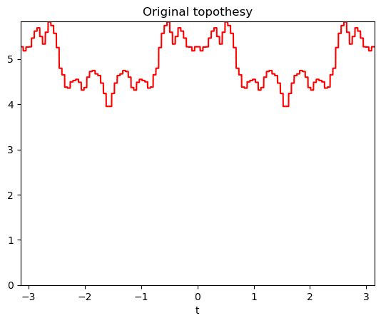
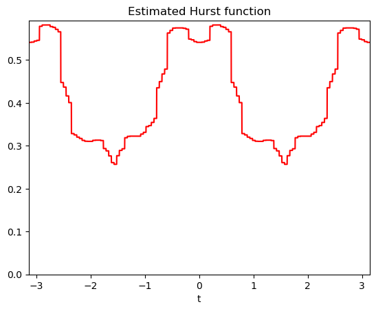

Estimation of parameters of an anisotropic fractional Brownian field#
Anisotropic fractional Brownian fields are random fields whose properties are characterized by two functional parameters, namely the Hurst function and the topothesy functions. These two functions determined the anisotropy and regularity of the field; see PyAFBF_. for more explanations. In this example, we use varprox to estimate the two functional parameters of the field.
. note:: This example requires the installation of the PyAFBFest_.
[1]:
import numpy as np
from afbf import coordinates, perfunction, tbfield, process
from numpy.random import default_rng, seed
from varprox import Parameters
from afbfest.model_afbf import FitVariogram
def Field_Definition(param):
"""Definition of the reference model.
"""
topo = perfunction('step', param.topo_dim)
hurst = perfunction('step', param.hurst_dim)
finter = np.linspace(- np.pi / 2, np.pi / 2, hurst.finter.size + 1, True)
finter = finter[1:]
model = tbfield('Reference model', topo, hurst)
# Define model parameters.
fbm = process()
fbm.param = 0.9
fbm.Simulate(param.hurst_dim)
fparam = fbm.y[:, 0]
fparam = fparam + np.flip(fparam)
fmin = np.min(fparam)
fmax = np.max(fparam)
fext = np.random.rand() * 0.9
flow = 0.05 + np.random.rand() * (0.9 - fext)
if fmin != fmax:
fparam = flow + fext * (fparam - fmin) / (fmax - fmin)
else:
fparam = flow * np.ones(fparam.shape)
# Update the model.
model.hurst.ChangeParameters(fparam, finter)
model.NormalizeModel()
model.topo.fparam = model.topo.fparam * 10
model.hurst.fname = "Original Hurst function"
model.topo.fname = "Original topothesy"
return model
# Initialization a new random generator
rng = default_rng()
seed(88)
# Set some parameters.
param = Parameters()
param.load("plot_afbf.ini")
param.noise = 0
param.hurst_dim = 64 # Dimension of the function parametrization.
param.topo_dim = 64
param.N = 512 # Image size.
param.grid_dim = 20 # Size of the grid to compute quadratic variations.
param.multigrid = True # To use a multigrid optimization approach.
param.threshold_reg = 32 # Grid scale at which the penalization is used.
#: Define the field model.
model = Field_Definition(param)
#: Simulate a field realization.
lags = coordinates()
lags.DefineSparseSemiBall(param.grid_dim)
lags.N = param.grid_dim * 2
coord = coordinates(param.N)
coord.N = param.grid_dim * 2
z = model.Simulate(coord)
z.Display()
model.DisplayParameters()
#: Compute the empirical semi-variogram.
evario = z.ComputeEmpiricalSemiVariogram(lags)
w = evario.values[:, 0]
#: Estimate model parameters.
topo0 = perfunction('step', param.topo_dim)
hurst0 = perfunction('step', param.hurst_dim)
model0 = tbfield('Estimation model', topo0, hurst0)
emodel, wt = FitVariogram(model0, lags, w, param)
emodel.name = "Estimated model"
emodel.hurst.fname = 'Estimated Hurst function'
emodel.topo.fname = 'Estimated topothesy'
emodel.DisplayParameters()

Nb param: Hurst=1, Topo=1
Tol = 1.00000e-04, Nepochs = 2000
varprox reg = None | iter 0 / 2000: cost = 6.914886e-03 improved by 6.3647 percent.
varprox reg = None | iter 1 / 2000: cost = 6.479499e-03 improved by 6.2964 percent.
varprox reg = None | iter 2 / 2000: cost = 6.076440e-03 improved by 6.2205 percent.
varprox reg = None | iter 3 / 2000: cost = 5.703520e-03 improved by 6.1371 percent.
varprox reg = None | iter 4 / 2000: cost = 5.358677e-03 improved by 6.0461 percent.
varprox reg = None | iter 5 / 2000: cost = 5.039966e-03 improved by 5.9476 percent.
varprox reg = None | iter 6 / 2000: cost = 4.745557e-03 improved by 5.8415 percent.
varprox reg = None | iter 7 / 2000: cost = 4.473730e-03 improved by 5.7280 percent.
varprox reg = None | iter 8 / 2000: cost = 4.222872e-03 improved by 5.6073 percent.
varprox reg = None | iter 9 / 2000: cost = 3.991471e-03 improved by 5.4797 percent.
varprox reg = None | iter 10 / 2000: cost = 3.778112e-03 improved by 5.3454 percent.
varprox reg = None | iter 11 / 2000: cost = 3.581470e-03 improved by 5.2048 percent.
varprox reg = None | iter 12 / 2000: cost = 3.400310e-03 improved by 5.0583 percent.
varprox reg = None | iter 13 / 2000: cost = 3.233476e-03 improved by 4.9064 percent.
varprox reg = None | iter 14 / 2000: cost = 3.079894e-03 improved by 4.7498 percent.
varprox reg = None | iter 15 / 2000: cost = 2.938561e-03 improved by 4.5889 percent.
varprox reg = None | iter 16 / 2000: cost = 2.808546e-03 improved by 4.4244 percent.
varprox reg = None | iter 17 / 2000: cost = 2.688982e-03 improved by 4.2572 percent.
varprox reg = None | iter 18 / 2000: cost = 2.579063e-03 improved by 4.0877 percent.
varprox reg = None | iter 19 / 2000: cost = 2.478042e-03 improved by 3.9170 percent.
varprox reg = None | iter 20 / 2000: cost = 2.385227e-03 improved by 3.7455 percent.
varprox reg = None | iter 21 / 2000: cost = 2.299974e-03 improved by 3.5742 percent.
varprox reg = None | iter 22 / 2000: cost = 2.221688e-03 improved by 3.4038 percent.
varprox reg = None | iter 23 / 2000: cost = 2.149818e-03 improved by 3.2349 percent.
varprox reg = None | iter 24 / 2000: cost = 2.083856e-03 improved by 3.0683 percent.
varprox reg = None | iter 25 / 2000: cost = 2.023329e-03 improved by 2.9046 percent.
varprox reg = None | iter 26 / 2000: cost = 1.967803e-03 improved by 2.7443 percent.
varprox reg = None | iter 27 / 2000: cost = 1.916874e-03 improved by 2.5881 percent.
varprox reg = None | iter 28 / 2000: cost = 1.870173e-03 improved by 2.4363 percent.
varprox reg = None | iter 29 / 2000: cost = 1.827357e-03 improved by 2.2894 percent.
varprox reg = None | iter 30 / 2000: cost = 1.788112e-03 improved by 2.1477 percent.
varprox reg = None | iter 31 / 2000: cost = 1.752144e-03 improved by 2.0115 percent.
varprox reg = None | iter 32 / 2000: cost = 1.719186e-03 improved by 1.8810 percent.
varprox reg = None | iter 33 / 2000: cost = 1.688992e-03 improved by 1.7563 percent.
varprox reg = None | iter 34 / 2000: cost = 1.661333e-03 improved by 1.6376 percent.
varprox reg = None | iter 35 / 2000: cost = 1.636001e-03 improved by 1.5248 percent.
varprox reg = None | iter 36 / 2000: cost = 1.612804e-03 improved by 1.4179 percent.
varprox reg = None | iter 37 / 2000: cost = 1.591565e-03 improved by 1.3169 percent.
varprox reg = None | iter 38 / 2000: cost = 1.572121e-03 improved by 1.2217 percent.
varprox reg = None | iter 39 / 2000: cost = 1.554322e-03 improved by 1.1321 percent.
varprox reg = None | iter 40 / 2000: cost = 1.538032e-03 improved by 1.0481 percent.
varprox reg = None | iter 41 / 2000: cost = 1.523124e-03 improved by 0.9693 percent.
varprox reg = None | iter 42 / 2000: cost = 1.509483e-03 improved by 0.8956 percent.
varprox reg = None | iter 43 / 2000: cost = 1.497002e-03 improved by 0.8268 percent.
varprox reg = None | iter 44 / 2000: cost = 1.485584e-03 improved by 0.7627 percent.
varprox reg = None | iter 45 / 2000: cost = 1.475140e-03 improved by 0.7031 percent.
varprox reg = None | iter 46 / 2000: cost = 1.465586e-03 improved by 0.6476 percent.
varprox reg = None | iter 47 / 2000: cost = 1.456849e-03 improved by 0.5962 percent.
varprox reg = None | iter 48 / 2000: cost = 1.448858e-03 improved by 0.5485 percent.
varprox reg = None | iter 49 / 2000: cost = 1.441552e-03 improved by 0.5043 percent.
varprox reg = None | iter 50 / 2000: cost = 1.434871e-03 improved by 0.4635 percent.
varprox reg = None | iter 51 / 2000: cost = 1.428762e-03 improved by 0.4257 percent.
varprox reg = None | iter 52 / 2000: cost = 1.423178e-03 improved by 0.3908 percent.
varprox reg = None | iter 53 / 2000: cost = 1.418073e-03 improved by 0.3587 percent.
varprox reg = None | iter 54 / 2000: cost = 1.413407e-03 improved by 0.3291 percent.
varprox reg = None | iter 55 / 2000: cost = 1.409141e-03 improved by 0.3018 percent.
varprox reg = None | iter 56 / 2000: cost = 1.405243e-03 improved by 0.2767 percent.
varprox reg = None | iter 57 / 2000: cost = 1.401680e-03 improved by 0.2535 percent.
varprox reg = None | iter 58 / 2000: cost = 1.398424e-03 improved by 0.2323 percent.
varprox reg = None | iter 59 / 2000: cost = 1.395449e-03 improved by 0.2128 percent.
varprox reg = None | iter 60 / 2000: cost = 1.392730e-03 improved by 0.1948 percent.
varprox reg = None | iter 61 / 2000: cost = 1.390245e-03 improved by 0.1784 percent.
varprox reg = None | iter 62 / 2000: cost = 1.387975e-03 improved by 0.1633 percent.
varprox reg = None | iter 63 / 2000: cost = 1.385901e-03 improved by 0.1494 percent.
varprox reg = None | iter 64 / 2000: cost = 1.384006e-03 improved by 0.1367 percent.
varprox reg = None | iter 65 / 2000: cost = 1.382275e-03 improved by 0.1251 percent.
varprox reg = None | iter 66 / 2000: cost = 1.380694e-03 improved by 0.1144 percent.
varprox reg = None | iter 67 / 2000: cost = 1.379249e-03 improved by 0.1046 percent.
varprox reg = None | iter 68 / 2000: cost = 1.377929e-03 improved by 0.0957 percent.
varprox reg = None | iter 69 / 2000: cost = 1.376724e-03 improved by 0.0875 percent.
varprox reg = None | iter 70 / 2000: cost = 1.375623e-03 improved by 0.0800 percent.
varprox reg = None | iter 71 / 2000: cost = 1.374617e-03 improved by 0.0731 percent.
varprox reg = None | iter 72 / 2000: cost = 1.373699e-03 improved by 0.0668 percent.
varprox reg = None | iter 73 / 2000: cost = 1.372860e-03 improved by 0.0611 percent.
varprox reg = None | iter 74 / 2000: cost = 1.372093e-03 improved by 0.0558 percent.
varprox reg = None | iter 75 / 2000: cost = 1.371393e-03 improved by 0.0510 percent.
varprox reg = None | iter 76 / 2000: cost = 1.370754e-03 improved by 0.0466 percent.
varprox reg = None | iter 77 / 2000: cost = 1.370171e-03 improved by 0.0426 percent.
varprox reg = None | iter 78 / 2000: cost = 1.369638e-03 improved by 0.0389 percent.
varprox reg = None | iter 79 / 2000: cost = 1.369151e-03 improved by 0.0355 percent.
varprox reg = None | iter 80 / 2000: cost = 1.368706e-03 improved by 0.0325 percent.
varprox reg = None | iter 81 / 2000: cost = 1.368300e-03 improved by 0.0297 percent.
varprox reg = None | iter 82 / 2000: cost = 1.367930e-03 improved by 0.0271 percent.
varprox reg = None | iter 83 / 2000: cost = 1.367591e-03 improved by 0.0247 percent.
varprox reg = None | iter 84 / 2000: cost = 1.367282e-03 improved by 0.0226 percent.
varprox reg = None | iter 85 / 2000: cost = 1.367000e-03 improved by 0.0206 percent.
varprox reg = None | iter 86 / 2000: cost = 1.366742e-03 improved by 0.0189 percent.
varprox reg = None | iter 87 / 2000: cost = 1.366507e-03 improved by 0.0172 percent.
varprox reg = None | iter 88 / 2000: cost = 1.366292e-03 improved by 0.0157 percent.
varprox reg = None | iter 89 / 2000: cost = 1.366096e-03 improved by 0.0144 percent.
varprox reg = None | iter 90 / 2000: cost = 1.365917e-03 improved by 0.0131 percent.
varprox reg = None | iter 91 / 2000: cost = 1.365753e-03 improved by 0.0120 percent.
varprox reg = None | iter 92 / 2000: cost = 1.365604e-03 improved by 0.0109 percent.
varprox reg = None | iter 93 / 2000: cost = 1.365468e-03 improved by 0.0100 percent.
varprox reg = None | iter 94 / 2000: cost = 1.365343e-03 improved by 0.0091 percent.
varprox reg = None | iter 95 / 2000: cost = 1.365230e-03 improved by 0.0083 percent.
varprox reg = None | iter 96 / 2000: cost = 1.365126e-03 improved by 0.0076 percent.
varprox reg = None | iter 97 / 2000: cost = 1.365031e-03 improved by 0.0069 percent.
varprox reg = None | iter 98 / 2000: cost = 1.364945e-03 improved by 0.0063 percent.
varprox reg = None | iter 99 / 2000: cost = 1.364866e-03 improved by 0.0058 percent.
varprox reg = None | iter 100 / 2000: cost = 1.364794e-03 improved by 0.0053 percent.
varprox reg = None | iter 101 / 2000: cost = 1.364728e-03 improved by 0.0048 percent.
varprox reg = None | iter 102 / 2000: cost = 1.364668e-03 improved by 0.0044 percent.
varprox reg = None | iter 103 / 2000: cost = 1.364613e-03 improved by 0.0040 percent.
varprox reg = None | iter 104 / 2000: cost = 1.364563e-03 improved by 0.0037 percent.
varprox reg = None | iter 105 / 2000: cost = 1.364517e-03 improved by 0.0033 percent.
varprox reg = None | iter 106 / 2000: cost = 1.364476e-03 improved by 0.0031 percent.
varprox reg = None | iter 107 / 2000: cost = 1.364438e-03 improved by 0.0028 percent.
varprox reg = None | iter 108 / 2000: cost = 1.364403e-03 improved by 0.0025 percent.
varprox reg = None | iter 109 / 2000: cost = 1.364371e-03 improved by 0.0023 percent.
varprox reg = None | iter 110 / 2000: cost = 1.364342e-03 improved by 0.0021 percent.
varprox reg = None | iter 111 / 2000: cost = 1.364316e-03 improved by 0.0019 percent.
varprox reg = None | iter 112 / 2000: cost = 1.364291e-03 improved by 0.0018 percent.
varprox reg = None | iter 113 / 2000: cost = 1.364269e-03 improved by 0.0016 percent.
varprox reg = None | iter 114 / 2000: cost = 1.364249e-03 improved by 0.0015 percent.
varprox reg = None | iter 115 / 2000: cost = 1.364231e-03 improved by 0.0013 percent.
varprox reg = None | iter 116 / 2000: cost = 1.364214e-03 improved by 0.0012 percent.
varprox reg = None | iter 117 / 2000: cost = 1.364199e-03 improved by 0.0011 percent.
varprox reg = None | iter 118 / 2000: cost = 1.364185e-03 improved by 0.0010 percent.
varprox reg = None | iter 119 / 2000: cost = 1.364172e-03 improved by 0.0009 percent.
varprox reg = None | iter 120 / 2000: cost = 1.364160e-03 improved by 0.0009 percent.
varprox reg = None | iter 121 / 2000: cost = 1.364150e-03 improved by 0.0008 percent.
varprox reg = None | iter 122 / 2000: cost = 1.364140e-03 improved by 0.0007 percent.
varprox reg = None | iter 123 / 2000: cost = 1.364131e-03 improved by 0.0006 percent.
varprox reg = None | iter 124 / 2000: cost = 1.364123e-03 improved by 0.0006 percent.
varprox reg = None | iter 125 / 2000: cost = 1.364116e-03 improved by 0.0005 percent.
varprox reg = None | iter 126 / 2000: cost = 1.364109e-03 improved by 0.0005 percent.
varprox reg = None | iter 127 / 2000: cost = 1.364103e-03 improved by 0.0005 percent.
varprox reg = None | iter 128 / 2000: cost = 1.364097e-03 improved by 0.0004 percent.
varprox reg = None | iter 129 / 2000: cost = 1.364092e-03 improved by 0.0004 percent.
varprox reg = None | iter 130 / 2000: cost = 1.364087e-03 improved by 0.0003 percent.
varprox reg = None | iter 131 / 2000: cost = 1.364083e-03 improved by 0.0003 percent.
varprox reg = None | iter 132 / 2000: cost = 1.364079e-03 improved by 0.0003 percent.
varprox reg = None | iter 133 / 2000: cost = 1.364076e-03 improved by 0.0003 percent.
varprox reg = None | iter 134 / 2000: cost = 1.364072e-03 improved by 0.0002 percent.
varprox reg = None | iter 135 / 2000: cost = 1.364069e-03 improved by 0.0002 percent.
varprox reg = None | iter 136 / 2000: cost = 1.364067e-03 improved by 0.0002 percent.
varprox reg = None | iter 137 / 2000: cost = 1.364064e-03 improved by 0.0002 percent.
varprox reg = None | iter 138 / 2000: cost = 1.364062e-03 improved by 0.0002 percent.
varprox reg = None | iter 139 / 2000: cost = 1.364060e-03 improved by 0.0002 percent.
varprox reg = None | iter 140 / 2000: cost = 1.364058e-03 improved by 0.0001 percent.
varprox reg = None | iter 141 / 2000: cost = 1.364056e-03 improved by 0.0001 percent.
varprox reg = None | iter 142 / 2000: cost = 1.364055e-03 improved by 0.0001 percent.
varprox reg = None | iter 143 / 2000: cost = 1.364053e-03 improved by 0.0001 percent.
varprox reg = None | iter 144 / 2000: cost = 1.364052e-03 improved by 0.0001 percent.
Nb param: Hurst=2, Topo=2
Tol = 1.00000e-04, Nepochs = 2000
varprox reg = None | iter 0 / 2000: cost = 2.053592e-03 improved by 0.2517 percent.
varprox reg = None | iter 1 / 2000: cost = 2.051117e-03 improved by 0.1205 percent.
varprox reg = None | iter 2 / 2000: cost = 2.049805e-03 improved by 0.0640 percent.
varprox reg = None | iter 3 / 2000: cost = 2.049000e-03 improved by 0.0393 percent.
varprox reg = None | iter 4 / 2000: cost = 2.048427e-03 improved by 0.0280 percent.
varprox reg = None | iter 5 / 2000: cost = 2.047970e-03 improved by 0.0223 percent.
varprox reg = None | iter 6 / 2000: cost = 2.047580e-03 improved by 0.0191 percent.
varprox reg = None | iter 7 / 2000: cost = 2.047234e-03 improved by 0.0169 percent.
varprox reg = None | iter 8 / 2000: cost = 2.046923e-03 improved by 0.0152 percent.
varprox reg = None | iter 9 / 2000: cost = 2.046641e-03 improved by 0.0138 percent.
varprox reg = None | iter 10 / 2000: cost = 2.046385e-03 improved by 0.0125 percent.
varprox reg = None | iter 11 / 2000: cost = 2.046151e-03 improved by 0.0114 percent.
varprox reg = None | iter 12 / 2000: cost = 2.045938e-03 improved by 0.0104 percent.
varprox reg = None | iter 13 / 2000: cost = 2.045744e-03 improved by 0.0095 percent.
varprox reg = None | iter 14 / 2000: cost = 2.045566e-03 improved by 0.0087 percent.
varprox reg = None | iter 15 / 2000: cost = 2.045405e-03 improved by 0.0079 percent.
varprox reg = None | iter 16 / 2000: cost = 2.045257e-03 improved by 0.0072 percent.
varprox reg = None | iter 17 / 2000: cost = 2.045123e-03 improved by 0.0066 percent.
varprox reg = None | iter 18 / 2000: cost = 2.045000e-03 improved by 0.0060 percent.
varprox reg = None | iter 19 / 2000: cost = 2.044889e-03 improved by 0.0055 percent.
varprox reg = None | iter 20 / 2000: cost = 2.044787e-03 improved by 0.0050 percent.
varprox reg = None | iter 21 / 2000: cost = 2.044694e-03 improved by 0.0045 percent.
varprox reg = None | iter 22 / 2000: cost = 2.044609e-03 improved by 0.0041 percent.
varprox reg = None | iter 23 / 2000: cost = 2.044531e-03 improved by 0.0038 percent.
varprox reg = None | iter 24 / 2000: cost = 2.044461e-03 improved by 0.0034 percent.
varprox reg = None | iter 25 / 2000: cost = 2.044397e-03 improved by 0.0031 percent.
varprox reg = None | iter 26 / 2000: cost = 2.044338e-03 improved by 0.0029 percent.
varprox reg = None | iter 27 / 2000: cost = 2.044285e-03 improved by 0.0026 percent.
varprox reg = None | iter 28 / 2000: cost = 2.044236e-03 improved by 0.0024 percent.
varprox reg = None | iter 29 / 2000: cost = 2.044191e-03 improved by 0.0022 percent.
varprox reg = None | iter 30 / 2000: cost = 2.044151e-03 improved by 0.0020 percent.
varprox reg = None | iter 31 / 2000: cost = 2.044114e-03 improved by 0.0018 percent.
varprox reg = None | iter 32 / 2000: cost = 2.044080e-03 improved by 0.0016 percent.
varprox reg = None | iter 33 / 2000: cost = 2.044049e-03 improved by 0.0015 percent.
varprox reg = None | iter 34 / 2000: cost = 2.044021e-03 improved by 0.0014 percent.
varprox reg = None | iter 35 / 2000: cost = 2.043996e-03 improved by 0.0012 percent.
varprox reg = None | iter 36 / 2000: cost = 2.043973e-03 improved by 0.0011 percent.
varprox reg = None | iter 37 / 2000: cost = 2.043951e-03 improved by 0.0010 percent.
varprox reg = None | iter 38 / 2000: cost = 2.043932e-03 improved by 0.0009 percent.
varprox reg = None | iter 39 / 2000: cost = 2.043914e-03 improved by 0.0009 percent.
varprox reg = None | iter 40 / 2000: cost = 2.043898e-03 improved by 0.0008 percent.
varprox reg = None | iter 41 / 2000: cost = 2.043884e-03 improved by 0.0007 percent.
varprox reg = None | iter 42 / 2000: cost = 2.043870e-03 improved by 0.0007 percent.
varprox reg = None | iter 43 / 2000: cost = 2.043858e-03 improved by 0.0006 percent.
varprox reg = None | iter 44 / 2000: cost = 2.043847e-03 improved by 0.0005 percent.
varprox reg = None | iter 45 / 2000: cost = 2.043837e-03 improved by 0.0005 percent.
varprox reg = None | iter 46 / 2000: cost = 2.043827e-03 improved by 0.0005 percent.
varprox reg = None | iter 47 / 2000: cost = 2.043819e-03 improved by 0.0004 percent.
varprox reg = None | iter 48 / 2000: cost = 2.043811e-03 improved by 0.0004 percent.
varprox reg = None | iter 49 / 2000: cost = 2.043804e-03 improved by 0.0003 percent.
varprox reg = None | iter 50 / 2000: cost = 2.043798e-03 improved by 0.0003 percent.
varprox reg = None | iter 51 / 2000: cost = 2.043792e-03 improved by 0.0003 percent.
varprox reg = None | iter 52 / 2000: cost = 2.043787e-03 improved by 0.0003 percent.
varprox reg = None | iter 53 / 2000: cost = 2.043782e-03 improved by 0.0002 percent.
varprox reg = None | iter 54 / 2000: cost = 2.043778e-03 improved by 0.0002 percent.
varprox reg = None | iter 55 / 2000: cost = 2.043774e-03 improved by 0.0002 percent.
varprox reg = None | iter 56 / 2000: cost = 2.043770e-03 improved by 0.0002 percent.
varprox reg = None | iter 57 / 2000: cost = 2.043767e-03 improved by 0.0002 percent.
varprox reg = None | iter 58 / 2000: cost = 2.043763e-03 improved by 0.0001 percent.
varprox reg = None | iter 59 / 2000: cost = 2.043761e-03 improved by 0.0001 percent.
varprox reg = None | iter 60 / 2000: cost = 2.043758e-03 improved by 0.0001 percent.
varprox reg = None | iter 61 / 2000: cost = 2.043756e-03 improved by 0.0001 percent.
varprox reg = None | iter 62 / 2000: cost = 2.043754e-03 improved by 0.0001 percent.
varprox reg = None | iter 63 / 2000: cost = 2.043752e-03 improved by 0.0001 percent.
Nb param: Hurst=4, Topo=4
Tol = 1.00000e-04, Nepochs = 2000
varprox reg = None | iter 0 / 2000: cost = 1.179251e-03 improved by 25.2879 percent.
varprox reg = None | iter 1 / 2000: cost = 1.056542e-03 improved by 10.4057 percent.
varprox reg = None | iter 2 / 2000: cost = 1.017521e-03 improved by 3.6932 percent.
varprox reg = None | iter 3 / 2000: cost = 1.003167e-03 improved by 1.4106 percent.
varprox reg = None | iter 4 / 2000: cost = 9.962204e-04 improved by 0.6925 percent.
varprox reg = None | iter 5 / 2000: cost = 9.916196e-04 improved by 0.4618 percent.
varprox reg = None | iter 6 / 2000: cost = 9.878760e-04 improved by 0.3775 percent.
varprox reg = None | iter 7 / 2000: cost = 9.845414e-04 improved by 0.3375 percent.
varprox reg = None | iter 8 / 2000: cost = 9.814741e-04 improved by 0.3115 percent.
varprox reg = None | iter 9 / 2000: cost = 9.786209e-04 improved by 0.2907 percent.
varprox reg = None | iter 10 / 2000: cost = 9.759581e-04 improved by 0.2721 percent.
varprox reg = None | iter 11 / 2000: cost = 9.734682e-04 improved by 0.2551 percent.
varprox reg = None | iter 12 / 2000: cost = 9.711387e-04 improved by 0.2393 percent.
varprox reg = None | iter 13 / 2000: cost = 9.689583e-04 improved by 0.2245 percent.
varprox reg = None | iter 14 / 2000: cost = 9.669172e-04 improved by 0.2107 percent.
varprox reg = None | iter 15 / 2000: cost = 9.650052e-04 improved by 0.1977 percent.
varprox reg = None | iter 16 / 2000: cost = 9.632151e-04 improved by 0.1855 percent.
varprox reg = None | iter 17 / 2000: cost = 9.615377e-04 improved by 0.1742 percent.
varprox reg = None | iter 18 / 2000: cost = 9.599666e-04 improved by 0.1634 percent.
varprox reg = None | iter 19 / 2000: cost = 9.584945e-04 improved by 0.1534 percent.
varprox reg = None | iter 20 / 2000: cost = 9.571142e-04 improved by 0.1440 percent.
varprox reg = None | iter 21 / 2000: cost = 9.558209e-04 improved by 0.1351 percent.
varprox reg = None | iter 22 / 2000: cost = 9.546084e-04 improved by 0.1269 percent.
varprox reg = None | iter 23 / 2000: cost = 9.534716e-04 improved by 0.1191 percent.
varprox reg = None | iter 24 / 2000: cost = 9.524055e-04 improved by 0.1118 percent.
varprox reg = None | iter 25 / 2000: cost = 9.514056e-04 improved by 0.1050 percent.
varprox reg = None | iter 26 / 2000: cost = 9.504677e-04 improved by 0.0986 percent.
varprox reg = None | iter 27 / 2000: cost = 9.495878e-04 improved by 0.0926 percent.
varprox reg = None | iter 28 / 2000: cost = 9.487623e-04 improved by 0.0869 percent.
varprox reg = None | iter 29 / 2000: cost = 9.479877e-04 improved by 0.0816 percent.
varprox reg = None | iter 30 / 2000: cost = 9.472607e-04 improved by 0.0767 percent.
varprox reg = None | iter 31 / 2000: cost = 9.465785e-04 improved by 0.0720 percent.
varprox reg = None | iter 32 / 2000: cost = 9.459381e-04 improved by 0.0677 percent.
varprox reg = None | iter 33 / 2000: cost = 9.453369e-04 improved by 0.0636 percent.
varprox reg = None | iter 34 / 2000: cost = 9.447726e-04 improved by 0.0597 percent.
varprox reg = None | iter 35 / 2000: cost = 9.442427e-04 improved by 0.0561 percent.
varprox reg = None | iter 36 / 2000: cost = 9.437451e-04 improved by 0.0527 percent.
varprox reg = None | iter 37 / 2000: cost = 9.432779e-04 improved by 0.0495 percent.
varprox reg = None | iter 38 / 2000: cost = 9.428390e-04 improved by 0.0465 percent.
varprox reg = None | iter 39 / 2000: cost = 9.424269e-04 improved by 0.0437 percent.
varprox reg = None | iter 40 / 2000: cost = 9.420398e-04 improved by 0.0411 percent.
varprox reg = None | iter 41 / 2000: cost = 9.416761e-04 improved by 0.0386 percent.
varprox reg = None | iter 42 / 2000: cost = 9.413345e-04 improved by 0.0363 percent.
varprox reg = None | iter 43 / 2000: cost = 9.410135e-04 improved by 0.0341 percent.
varprox reg = None | iter 44 / 2000: cost = 9.407119e-04 improved by 0.0320 percent.
varprox reg = None | iter 45 / 2000: cost = 9.404285e-04 improved by 0.0301 percent.
varprox reg = None | iter 46 / 2000: cost = 9.401622e-04 improved by 0.0283 percent.
varprox reg = None | iter 47 / 2000: cost = 9.399120e-04 improved by 0.0266 percent.
varprox reg = None | iter 48 / 2000: cost = 9.396768e-04 improved by 0.0250 percent.
varprox reg = None | iter 49 / 2000: cost = 9.394558e-04 improved by 0.0235 percent.
varprox reg = None | iter 50 / 2000: cost = 9.392480e-04 improved by 0.0221 percent.
varprox reg = None | iter 51 / 2000: cost = 9.390527e-04 improved by 0.0208 percent.
varprox reg = None | iter 52 / 2000: cost = 9.388692e-04 improved by 0.0195 percent.
varprox reg = None | iter 53 / 2000: cost = 9.386966e-04 improved by 0.0184 percent.
varprox reg = None | iter 54 / 2000: cost = 9.385343e-04 improved by 0.0173 percent.
varprox reg = None | iter 55 / 2000: cost = 9.383818e-04 improved by 0.0163 percent.
varprox reg = None | iter 56 / 2000: cost = 9.382384e-04 improved by 0.0153 percent.
varprox reg = None | iter 57 / 2000: cost = 9.381036e-04 improved by 0.0144 percent.
varprox reg = None | iter 58 / 2000: cost = 9.379768e-04 improved by 0.0135 percent.
varprox reg = None | iter 59 / 2000: cost = 9.378576e-04 improved by 0.0127 percent.
varprox reg = None | iter 60 / 2000: cost = 9.377454e-04 improved by 0.0120 percent.
varprox reg = None | iter 61 / 2000: cost = 9.376400e-04 improved by 0.0112 percent.
varprox reg = None | iter 62 / 2000: cost = 9.375409e-04 improved by 0.0106 percent.
varprox reg = None | iter 63 / 2000: cost = 9.374476e-04 improved by 0.0099 percent.
varprox reg = None | iter 64 / 2000: cost = 9.373599e-04 improved by 0.0094 percent.
varprox reg = None | iter 65 / 2000: cost = 9.372774e-04 improved by 0.0088 percent.
varprox reg = None | iter 66 / 2000: cost = 9.371998e-04 improved by 0.0083 percent.
varprox reg = None | iter 67 / 2000: cost = 9.371268e-04 improved by 0.0078 percent.
varprox reg = None | iter 68 / 2000: cost = 9.370582e-04 improved by 0.0073 percent.
varprox reg = None | iter 69 / 2000: cost = 9.369936e-04 improved by 0.0069 percent.
varprox reg = None | iter 70 / 2000: cost = 9.369329e-04 improved by 0.0065 percent.
varprox reg = None | iter 71 / 2000: cost = 9.368757e-04 improved by 0.0061 percent.
varprox reg = None | iter 72 / 2000: cost = 9.368220e-04 improved by 0.0057 percent.
varprox reg = None | iter 73 / 2000: cost = 9.367714e-04 improved by 0.0054 percent.
varprox reg = None | iter 74 / 2000: cost = 9.367238e-04 improved by 0.0051 percent.
varprox reg = None | iter 75 / 2000: cost = 9.366791e-04 improved by 0.0048 percent.
varprox reg = None | iter 76 / 2000: cost = 9.366370e-04 improved by 0.0045 percent.
varprox reg = None | iter 77 / 2000: cost = 9.365973e-04 improved by 0.0042 percent.
varprox reg = None | iter 78 / 2000: cost = 9.365599e-04 improved by 0.0040 percent.
varprox reg = None | iter 79 / 2000: cost = 9.365248e-04 improved by 0.0038 percent.
varprox reg = None | iter 80 / 2000: cost = 9.364917e-04 improved by 0.0035 percent.
varprox reg = None | iter 81 / 2000: cost = 9.364605e-04 improved by 0.0033 percent.
varprox reg = None | iter 82 / 2000: cost = 9.364312e-04 improved by 0.0031 percent.
varprox reg = None | iter 83 / 2000: cost = 9.364037e-04 improved by 0.0029 percent.
varprox reg = None | iter 84 / 2000: cost = 9.363777e-04 improved by 0.0028 percent.
varprox reg = None | iter 85 / 2000: cost = 9.363533e-04 improved by 0.0026 percent.
varprox reg = None | iter 86 / 2000: cost = 9.363304e-04 improved by 0.0025 percent.
varprox reg = None | iter 87 / 2000: cost = 9.363088e-04 improved by 0.0023 percent.
varprox reg = None | iter 88 / 2000: cost = 9.362885e-04 improved by 0.0022 percent.
varprox reg = None | iter 89 / 2000: cost = 9.362694e-04 improved by 0.0020 percent.
varprox reg = None | iter 90 / 2000: cost = 9.362514e-04 improved by 0.0019 percent.
varprox reg = None | iter 91 / 2000: cost = 9.362344e-04 improved by 0.0018 percent.
varprox reg = None | iter 92 / 2000: cost = 9.362185e-04 improved by 0.0017 percent.
varprox reg = None | iter 93 / 2000: cost = 9.362035e-04 improved by 0.0016 percent.
varprox reg = None | iter 94 / 2000: cost = 9.361894e-04 improved by 0.0015 percent.
varprox reg = None | iter 95 / 2000: cost = 9.361762e-04 improved by 0.0014 percent.
varprox reg = None | iter 96 / 2000: cost = 9.361637e-04 improved by 0.0013 percent.
varprox reg = None | iter 97 / 2000: cost = 9.361519e-04 improved by 0.0013 percent.
varprox reg = None | iter 98 / 2000: cost = 9.361409e-04 improved by 0.0012 percent.
varprox reg = None | iter 99 / 2000: cost = 9.361305e-04 improved by 0.0011 percent.
varprox reg = None | iter 100 / 2000: cost = 9.361207e-04 improved by 0.0010 percent.
varprox reg = None | iter 101 / 2000: cost = 9.361115e-04 improved by 0.0010 percent.
varprox reg = None | iter 102 / 2000: cost = 9.361028e-04 improved by 0.0009 percent.
varprox reg = None | iter 103 / 2000: cost = 9.360946e-04 improved by 0.0009 percent.
varprox reg = None | iter 104 / 2000: cost = 9.360870e-04 improved by 0.0008 percent.
varprox reg = None | iter 105 / 2000: cost = 9.360797e-04 improved by 0.0008 percent.
varprox reg = None | iter 106 / 2000: cost = 9.360729e-04 improved by 0.0007 percent.
varprox reg = None | iter 107 / 2000: cost = 9.360665e-04 improved by 0.0007 percent.
varprox reg = None | iter 108 / 2000: cost = 9.360605e-04 improved by 0.0006 percent.
varprox reg = None | iter 109 / 2000: cost = 9.360548e-04 improved by 0.0006 percent.
varprox reg = None | iter 110 / 2000: cost = 9.360495e-04 improved by 0.0006 percent.
varprox reg = None | iter 111 / 2000: cost = 9.360445e-04 improved by 0.0005 percent.
varprox reg = None | iter 112 / 2000: cost = 9.360397e-04 improved by 0.0005 percent.
varprox reg = None | iter 113 / 2000: cost = 9.360353e-04 improved by 0.0005 percent.
varprox reg = None | iter 114 / 2000: cost = 9.360311e-04 improved by 0.0004 percent.
varprox reg = None | iter 115 / 2000: cost = 9.360272e-04 improved by 0.0004 percent.
varprox reg = None | iter 116 / 2000: cost = 9.360235e-04 improved by 0.0004 percent.
varprox reg = None | iter 117 / 2000: cost = 9.360200e-04 improved by 0.0004 percent.
varprox reg = None | iter 118 / 2000: cost = 9.360167e-04 improved by 0.0004 percent.
varprox reg = None | iter 119 / 2000: cost = 9.360136e-04 improved by 0.0003 percent.
varprox reg = None | iter 120 / 2000: cost = 9.360107e-04 improved by 0.0003 percent.
varprox reg = None | iter 121 / 2000: cost = 9.360080e-04 improved by 0.0003 percent.
varprox reg = None | iter 122 / 2000: cost = 9.360054e-04 improved by 0.0003 percent.
varprox reg = None | iter 123 / 2000: cost = 9.360029e-04 improved by 0.0003 percent.
varprox reg = None | iter 124 / 2000: cost = 9.360007e-04 improved by 0.0002 percent.
varprox reg = None | iter 125 / 2000: cost = 9.359985e-04 improved by 0.0002 percent.
varprox reg = None | iter 126 / 2000: cost = 9.359965e-04 improved by 0.0002 percent.
varprox reg = None | iter 127 / 2000: cost = 9.359946e-04 improved by 0.0002 percent.
varprox reg = None | iter 128 / 2000: cost = 9.359928e-04 improved by 0.0002 percent.
varprox reg = None | iter 129 / 2000: cost = 9.359911e-04 improved by 0.0002 percent.
varprox reg = None | iter 130 / 2000: cost = 9.359895e-04 improved by 0.0002 percent.
varprox reg = None | iter 131 / 2000: cost = 9.359880e-04 improved by 0.0002 percent.
varprox reg = None | iter 132 / 2000: cost = 9.359866e-04 improved by 0.0002 percent.
varprox reg = None | iter 133 / 2000: cost = 9.359853e-04 improved by 0.0001 percent.
varprox reg = None | iter 134 / 2000: cost = 9.359840e-04 improved by 0.0001 percent.
varprox reg = None | iter 135 / 2000: cost = 9.359829e-04 improved by 0.0001 percent.
varprox reg = None | iter 136 / 2000: cost = 9.359818e-04 improved by 0.0001 percent.
varprox reg = None | iter 137 / 2000: cost = 9.359807e-04 improved by 0.0001 percent.
varprox reg = None | iter 138 / 2000: cost = 9.359798e-04 improved by 0.0001 percent.
varprox reg = None | iter 139 / 2000: cost = 9.359788e-04 improved by 0.0001 percent.
Nb param: Hurst=8, Topo=8
Tol = 1.00000e-04, Nepochs = 2000
varprox reg = None | iter 0 / 2000: cost = 9.074893e-04 improved by 1.0324 percent.
varprox reg = None | iter 1 / 2000: cost = 9.060138e-04 improved by 0.1626 percent.
varprox reg = None | iter 2 / 2000: cost = 9.057228e-04 improved by 0.0321 percent.
varprox reg = None | iter 3 / 2000: cost = 9.056237e-04 improved by 0.0109 percent.
varprox reg = None | iter 4 / 2000: cost = 9.055662e-04 improved by 0.0064 percent.
varprox reg = None | iter 5 / 2000: cost = 9.055207e-04 improved by 0.0050 percent.
varprox reg = None | iter 6 / 2000: cost = 9.054802e-04 improved by 0.0045 percent.
varprox reg = None | iter 7 / 2000: cost = 9.054433e-04 improved by 0.0041 percent.
varprox reg = None | iter 8 / 2000: cost = 9.054089e-04 improved by 0.0038 percent.
varprox reg = None | iter 9 / 2000: cost = 9.053767e-04 improved by 0.0036 percent.
varprox reg = None | iter 10 / 2000: cost = 9.053463e-04 improved by 0.0034 percent.
varprox reg = None | iter 11 / 2000: cost = 9.053177e-04 improved by 0.0032 percent.
varprox reg = None | iter 12 / 2000: cost = 9.052908e-04 improved by 0.0030 percent.
varprox reg = None | iter 13 / 2000: cost = 9.052654e-04 improved by 0.0028 percent.
varprox reg = None | iter 14 / 2000: cost = 9.052414e-04 improved by 0.0026 percent.
varprox reg = None | iter 15 / 2000: cost = 9.052188e-04 improved by 0.0025 percent.
varprox reg = None | iter 16 / 2000: cost = 9.051975e-04 improved by 0.0024 percent.
varprox reg = None | iter 17 / 2000: cost = 9.051774e-04 improved by 0.0022 percent.
varprox reg = None | iter 18 / 2000: cost = 9.051584e-04 improved by 0.0021 percent.
varprox reg = None | iter 19 / 2000: cost = 9.051405e-04 improved by 0.0020 percent.
varprox reg = None | iter 20 / 2000: cost = 9.051237e-04 improved by 0.0019 percent.
varprox reg = None | iter 21 / 2000: cost = 9.051077e-04 improved by 0.0018 percent.
varprox reg = None | iter 22 / 2000: cost = 9.050927e-04 improved by 0.0017 percent.
varprox reg = None | iter 23 / 2000: cost = 9.050785e-04 improved by 0.0016 percent.
varprox reg = None | iter 24 / 2000: cost = 9.050652e-04 improved by 0.0015 percent.
varprox reg = None | iter 25 / 2000: cost = 9.050525e-04 improved by 0.0014 percent.
varprox reg = None | iter 26 / 2000: cost = 9.050406e-04 improved by 0.0013 percent.
varprox reg = None | iter 27 / 2000: cost = 9.050294e-04 improved by 0.0012 percent.
varprox reg = None | iter 28 / 2000: cost = 9.050188e-04 improved by 0.0012 percent.
varprox reg = None | iter 29 / 2000: cost = 9.050088e-04 improved by 0.0011 percent.
varprox reg = None | iter 30 / 2000: cost = 9.049993e-04 improved by 0.0010 percent.
varprox reg = None | iter 31 / 2000: cost = 9.049904e-04 improved by 0.0010 percent.
varprox reg = None | iter 32 / 2000: cost = 9.049820e-04 improved by 0.0009 percent.
varprox reg = None | iter 33 / 2000: cost = 9.049741e-04 improved by 0.0009 percent.
varprox reg = None | iter 34 / 2000: cost = 9.049666e-04 improved by 0.0008 percent.
varprox reg = None | iter 35 / 2000: cost = 9.049595e-04 improved by 0.0008 percent.
varprox reg = None | iter 36 / 2000: cost = 9.049529e-04 improved by 0.0007 percent.
varprox reg = None | iter 37 / 2000: cost = 9.049466e-04 improved by 0.0007 percent.
varprox reg = None | iter 38 / 2000: cost = 9.049406e-04 improved by 0.0007 percent.
varprox reg = None | iter 39 / 2000: cost = 9.049350e-04 improved by 0.0006 percent.
varprox reg = None | iter 40 / 2000: cost = 9.049298e-04 improved by 0.0006 percent.
varprox reg = None | iter 41 / 2000: cost = 9.049248e-04 improved by 0.0006 percent.
varprox reg = None | iter 42 / 2000: cost = 9.049201e-04 improved by 0.0005 percent.
varprox reg = None | iter 43 / 2000: cost = 9.049156e-04 improved by 0.0005 percent.
varprox reg = None | iter 44 / 2000: cost = 9.049114e-04 improved by 0.0005 percent.
varprox reg = None | iter 45 / 2000: cost = 9.049075e-04 improved by 0.0004 percent.
varprox reg = None | iter 46 / 2000: cost = 9.049037e-04 improved by 0.0004 percent.
varprox reg = None | iter 47 / 2000: cost = 9.049002e-04 improved by 0.0004 percent.
varprox reg = None | iter 48 / 2000: cost = 9.048969e-04 improved by 0.0004 percent.
varprox reg = None | iter 49 / 2000: cost = 9.048937e-04 improved by 0.0003 percent.
varprox reg = None | iter 50 / 2000: cost = 9.048907e-04 improved by 0.0003 percent.
varprox reg = None | iter 51 / 2000: cost = 9.048879e-04 improved by 0.0003 percent.
varprox reg = None | iter 52 / 2000: cost = 9.048853e-04 improved by 0.0003 percent.
varprox reg = None | iter 53 / 2000: cost = 9.048828e-04 improved by 0.0003 percent.
varprox reg = None | iter 54 / 2000: cost = 9.048805e-04 improved by 0.0003 percent.
varprox reg = None | iter 55 / 2000: cost = 9.048782e-04 improved by 0.0002 percent.
varprox reg = None | iter 56 / 2000: cost = 9.048761e-04 improved by 0.0002 percent.
varprox reg = None | iter 57 / 2000: cost = 9.048742e-04 improved by 0.0002 percent.
varprox reg = None | iter 58 / 2000: cost = 9.048723e-04 improved by 0.0002 percent.
varprox reg = None | iter 59 / 2000: cost = 9.048705e-04 improved by 0.0002 percent.
varprox reg = None | iter 60 / 2000: cost = 9.048689e-04 improved by 0.0002 percent.
varprox reg = None | iter 61 / 2000: cost = 9.048673e-04 improved by 0.0002 percent.
varprox reg = None | iter 62 / 2000: cost = 9.048658e-04 improved by 0.0002 percent.
varprox reg = None | iter 63 / 2000: cost = 9.048644e-04 improved by 0.0002 percent.
varprox reg = None | iter 64 / 2000: cost = 9.048631e-04 improved by 0.0001 percent.
varprox reg = None | iter 65 / 2000: cost = 9.048618e-04 improved by 0.0001 percent.
varprox reg = None | iter 66 / 2000: cost = 9.048606e-04 improved by 0.0001 percent.
varprox reg = None | iter 67 / 2000: cost = 9.048595e-04 improved by 0.0001 percent.
varprox reg = None | iter 68 / 2000: cost = 9.048585e-04 improved by 0.0001 percent.
varprox reg = None | iter 69 / 2000: cost = 9.048575e-04 improved by 0.0001 percent.
varprox reg = None | iter 70 / 2000: cost = 9.048566e-04 improved by 0.0001 percent.
varprox reg = None | iter 71 / 2000: cost = 9.048557e-04 improved by 0.0001 percent.
Nb param: Hurst=16, Topo=16
Tol = 1.00000e-04, Nepochs = 2000
varprox reg = None | iter 0 / 2000: cost = 8.667114e-04 improved by 1.3018 percent.
varprox reg = None | iter 1 / 2000: cost = 8.664689e-04 improved by 0.0280 percent.
varprox reg = None | iter 2 / 2000: cost = 8.664140e-04 improved by 0.0063 percent.
varprox reg = None | iter 3 / 2000: cost = 8.663912e-04 improved by 0.0026 percent.
varprox reg = None | iter 4 / 2000: cost = 8.663794e-04 improved by 0.0014 percent.
varprox reg = None | iter 5 / 2000: cost = 8.663725e-04 improved by 0.0008 percent.
varprox reg = None | iter 6 / 2000: cost = 8.663682e-04 improved by 0.0005 percent.
varprox reg = None | iter 7 / 2000: cost = 8.663652e-04 improved by 0.0004 percent.
varprox reg = None | iter 8 / 2000: cost = 8.663630e-04 improved by 0.0002 percent.
varprox reg = None | iter 9 / 2000: cost = 8.663614e-04 improved by 0.0002 percent.
varprox reg = None | iter 10 / 2000: cost = 8.663601e-04 improved by 0.0001 percent.
varprox reg = None | iter 11 / 2000: cost = 8.663589e-04 improved by 0.0001 percent.
varprox reg = None | iter 12 / 2000: cost = 8.663581e-04 improved by 0.0001 percent.
varprox reg = None | iter 13 / 2000: cost = 8.663573e-04 improved by 0.0001 percent.
Nb param: Hurst=32, Topo=32
Tol = 1.00000e-04, Nepochs = 2000
varprox reg = tv-1d | iter 0 / 2000: cost = 8.275034e-04 improved by 0.0003 percent.
varprox reg = tv-1d | iter 1 / 2000: cost = 8.275011e-04 improved by 0.0003 percent.
varprox reg = tv-1d | iter 2 / 2000: cost = 8.274988e-04 improved by 0.0003 percent.
varprox reg = tv-1d | iter 3 / 2000: cost = 8.274965e-04 improved by 0.0003 percent.
varprox reg = tv-1d | iter 4 / 2000: cost = 8.274942e-04 improved by 0.0003 percent.
varprox reg = tv-1d | iter 5 / 2000: cost = 8.274920e-04 improved by 0.0003 percent.
varprox reg = tv-1d | iter 6 / 2000: cost = 8.274898e-04 improved by 0.0003 percent.
varprox reg = tv-1d | iter 7 / 2000: cost = 8.274876e-04 improved by 0.0003 percent.
varprox reg = tv-1d | iter 8 / 2000: cost = 8.274854e-04 improved by 0.0003 percent.
varprox reg = tv-1d | iter 9 / 2000: cost = 8.274832e-04 improved by 0.0003 percent.
varprox reg = tv-1d | iter 10 / 2000: cost = 8.274810e-04 improved by 0.0003 percent.
varprox reg = tv-1d | iter 11 / 2000: cost = 8.274789e-04 improved by 0.0003 percent.
varprox reg = tv-1d | iter 12 / 2000: cost = 8.274768e-04 improved by 0.0003 percent.
varprox reg = tv-1d | iter 13 / 2000: cost = 8.274746e-04 improved by 0.0003 percent.
varprox reg = tv-1d | iter 14 / 2000: cost = 8.274726e-04 improved by 0.0003 percent.
varprox reg = tv-1d | iter 15 / 2000: cost = 8.274705e-04 improved by 0.0003 percent.
varprox reg = tv-1d | iter 16 / 2000: cost = 8.274684e-04 improved by 0.0002 percent.
varprox reg = tv-1d | iter 17 / 2000: cost = 8.274664e-04 improved by 0.0002 percent.
varprox reg = tv-1d | iter 18 / 2000: cost = 8.274643e-04 improved by 0.0002 percent.
varprox reg = tv-1d | iter 19 / 2000: cost = 8.274623e-04 improved by 0.0002 percent.
varprox reg = tv-1d | iter 20 / 2000: cost = 8.274603e-04 improved by 0.0002 percent.
varprox reg = tv-1d | iter 21 / 2000: cost = 8.274583e-04 improved by 0.0002 percent.
varprox reg = tv-1d | iter 22 / 2000: cost = 8.274563e-04 improved by 0.0002 percent.
varprox reg = tv-1d | iter 23 / 2000: cost = 8.274544e-04 improved by 0.0002 percent.
varprox reg = tv-1d | iter 24 / 2000: cost = 8.274524e-04 improved by 0.0002 percent.
varprox reg = tv-1d | iter 25 / 2000: cost = 8.274505e-04 improved by 0.0002 percent.
varprox reg = tv-1d | iter 26 / 2000: cost = 8.274485e-04 improved by 0.0002 percent.
varprox reg = tv-1d | iter 27 / 2000: cost = 8.274466e-04 improved by 0.0002 percent.
varprox reg = tv-1d | iter 28 / 2000: cost = 8.274447e-04 improved by 0.0002 percent.
varprox reg = tv-1d | iter 29 / 2000: cost = 8.274428e-04 improved by 0.0002 percent.
varprox reg = tv-1d | iter 30 / 2000: cost = 8.274410e-04 improved by 0.0002 percent.
varprox reg = tv-1d | iter 31 / 2000: cost = 8.274391e-04 improved by 0.0002 percent.
varprox reg = tv-1d | iter 32 / 2000: cost = 8.274372e-04 improved by 0.0002 percent.
varprox reg = tv-1d | iter 33 / 2000: cost = 8.274354e-04 improved by 0.0002 percent.
varprox reg = tv-1d | iter 34 / 2000: cost = 8.274335e-04 improved by 0.0002 percent.
varprox reg = tv-1d | iter 35 / 2000: cost = 8.274317e-04 improved by 0.0002 percent.
varprox reg = tv-1d | iter 36 / 2000: cost = 8.274299e-04 improved by 0.0002 percent.
varprox reg = tv-1d | iter 37 / 2000: cost = 8.274281e-04 improved by 0.0002 percent.
varprox reg = tv-1d | iter 38 / 2000: cost = 8.274263e-04 improved by 0.0002 percent.
varprox reg = tv-1d | iter 39 / 2000: cost = 8.274245e-04 improved by 0.0002 percent.
varprox reg = tv-1d | iter 40 / 2000: cost = 8.274227e-04 improved by 0.0002 percent.
varprox reg = tv-1d | iter 41 / 2000: cost = 8.274209e-04 improved by 0.0002 percent.
varprox reg = tv-1d | iter 42 / 2000: cost = 8.274192e-04 improved by 0.0002 percent.
varprox reg = tv-1d | iter 43 / 2000: cost = 8.274174e-04 improved by 0.0002 percent.
varprox reg = tv-1d | iter 44 / 2000: cost = 8.274156e-04 improved by 0.0002 percent.
varprox reg = tv-1d | iter 45 / 2000: cost = 8.274139e-04 improved by 0.0002 percent.
varprox reg = tv-1d | iter 46 / 2000: cost = 8.274122e-04 improved by 0.0002 percent.
varprox reg = tv-1d | iter 47 / 2000: cost = 8.274104e-04 improved by 0.0002 percent.
varprox reg = tv-1d | iter 48 / 2000: cost = 8.274087e-04 improved by 0.0002 percent.
varprox reg = tv-1d | iter 49 / 2000: cost = 8.274070e-04 improved by 0.0002 percent.
varprox reg = tv-1d | iter 50 / 2000: cost = 8.274053e-04 improved by 0.0002 percent.
varprox reg = tv-1d | iter 51 / 2000: cost = 8.274036e-04 improved by 0.0002 percent.
varprox reg = tv-1d | iter 52 / 2000: cost = 8.274019e-04 improved by 0.0002 percent.
varprox reg = tv-1d | iter 53 / 2000: cost = 8.274002e-04 improved by 0.0002 percent.
varprox reg = tv-1d | iter 54 / 2000: cost = 8.273985e-04 improved by 0.0002 percent.
varprox reg = tv-1d | iter 55 / 2000: cost = 8.273968e-04 improved by 0.0002 percent.
varprox reg = tv-1d | iter 56 / 2000: cost = 8.273952e-04 improved by 0.0002 percent.
varprox reg = tv-1d | iter 57 / 2000: cost = 8.273935e-04 improved by 0.0002 percent.
varprox reg = tv-1d | iter 58 / 2000: cost = 8.273918e-04 improved by 0.0002 percent.
varprox reg = tv-1d | iter 59 / 2000: cost = 8.273902e-04 improved by 0.0002 percent.
varprox reg = tv-1d | iter 60 / 2000: cost = 8.273885e-04 improved by 0.0002 percent.
varprox reg = tv-1d | iter 61 / 2000: cost = 8.273869e-04 improved by 0.0002 percent.
varprox reg = tv-1d | iter 62 / 2000: cost = 8.273853e-04 improved by 0.0002 percent.
varprox reg = tv-1d | iter 63 / 2000: cost = 8.273836e-04 improved by 0.0002 percent.
varprox reg = tv-1d | iter 64 / 2000: cost = 8.273820e-04 improved by 0.0002 percent.
varprox reg = tv-1d | iter 65 / 2000: cost = 8.273804e-04 improved by 0.0002 percent.
varprox reg = tv-1d | iter 66 / 2000: cost = 8.273788e-04 improved by 0.0002 percent.
varprox reg = tv-1d | iter 67 / 2000: cost = 8.273771e-04 improved by 0.0002 percent.
varprox reg = tv-1d | iter 68 / 2000: cost = 8.273755e-04 improved by 0.0002 percent.
varprox reg = tv-1d | iter 69 / 2000: cost = 8.273739e-04 improved by 0.0002 percent.
varprox reg = tv-1d | iter 70 / 2000: cost = 8.273723e-04 improved by 0.0002 percent.
varprox reg = tv-1d | iter 71 / 2000: cost = 8.273707e-04 improved by 0.0002 percent.
varprox reg = tv-1d | iter 72 / 2000: cost = 8.273692e-04 improved by 0.0002 percent.
varprox reg = tv-1d | iter 73 / 2000: cost = 8.273676e-04 improved by 0.0002 percent.
varprox reg = tv-1d | iter 74 / 2000: cost = 8.273660e-04 improved by 0.0002 percent.
varprox reg = tv-1d | iter 75 / 2000: cost = 8.273644e-04 improved by 0.0002 percent.
varprox reg = tv-1d | iter 76 / 2000: cost = 8.273629e-04 improved by 0.0002 percent.
varprox reg = tv-1d | iter 77 / 2000: cost = 8.273613e-04 improved by 0.0002 percent.
varprox reg = tv-1d | iter 78 / 2000: cost = 8.273597e-04 improved by 0.0002 percent.
varprox reg = tv-1d | iter 79 / 2000: cost = 8.273582e-04 improved by 0.0002 percent.
varprox reg = tv-1d | iter 80 / 2000: cost = 8.273566e-04 improved by 0.0002 percent.
varprox reg = tv-1d | iter 81 / 2000: cost = 8.273551e-04 improved by 0.0002 percent.
varprox reg = tv-1d | iter 82 / 2000: cost = 8.273535e-04 improved by 0.0002 percent.
varprox reg = tv-1d | iter 83 / 2000: cost = 8.273520e-04 improved by 0.0002 percent.
varprox reg = tv-1d | iter 84 / 2000: cost = 8.273504e-04 improved by 0.0002 percent.
varprox reg = tv-1d | iter 85 / 2000: cost = 8.273489e-04 improved by 0.0002 percent.
varprox reg = tv-1d | iter 86 / 2000: cost = 8.273474e-04 improved by 0.0002 percent.
varprox reg = tv-1d | iter 87 / 2000: cost = 8.273458e-04 improved by 0.0002 percent.
varprox reg = tv-1d | iter 88 / 2000: cost = 8.273443e-04 improved by 0.0002 percent.
varprox reg = tv-1d | iter 89 / 2000: cost = 8.273428e-04 improved by 0.0002 percent.
varprox reg = tv-1d | iter 90 / 2000: cost = 8.273413e-04 improved by 0.0002 percent.
varprox reg = tv-1d | iter 91 / 2000: cost = 8.273397e-04 improved by 0.0002 percent.
varprox reg = tv-1d | iter 92 / 2000: cost = 8.273382e-04 improved by 0.0002 percent.
varprox reg = tv-1d | iter 93 / 2000: cost = 8.273367e-04 improved by 0.0002 percent.
varprox reg = tv-1d | iter 94 / 2000: cost = 8.273352e-04 improved by 0.0002 percent.
varprox reg = tv-1d | iter 95 / 2000: cost = 8.273337e-04 improved by 0.0002 percent.
varprox reg = tv-1d | iter 96 / 2000: cost = 8.273322e-04 improved by 0.0002 percent.
varprox reg = tv-1d | iter 97 / 2000: cost = 8.273307e-04 improved by 0.0002 percent.
varprox reg = tv-1d | iter 98 / 2000: cost = 8.273292e-04 improved by 0.0002 percent.
varprox reg = tv-1d | iter 99 / 2000: cost = 8.273277e-04 improved by 0.0002 percent.
varprox reg = tv-1d | iter 100 / 2000: cost = 8.273262e-04 improved by 0.0002 percent.
varprox reg = tv-1d | iter 101 / 2000: cost = 8.273247e-04 improved by 0.0002 percent.
varprox reg = tv-1d | iter 102 / 2000: cost = 8.273233e-04 improved by 0.0002 percent.
varprox reg = tv-1d | iter 103 / 2000: cost = 8.273218e-04 improved by 0.0002 percent.
varprox reg = tv-1d | iter 104 / 2000: cost = 8.273203e-04 improved by 0.0002 percent.
varprox reg = tv-1d | iter 105 / 2000: cost = 8.273188e-04 improved by 0.0002 percent.
varprox reg = tv-1d | iter 106 / 2000: cost = 8.273173e-04 improved by 0.0002 percent.
varprox reg = tv-1d | iter 107 / 2000: cost = 8.273159e-04 improved by 0.0002 percent.
varprox reg = tv-1d | iter 108 / 2000: cost = 8.273144e-04 improved by 0.0002 percent.
varprox reg = tv-1d | iter 109 / 2000: cost = 8.273129e-04 improved by 0.0002 percent.
varprox reg = tv-1d | iter 110 / 2000: cost = 8.273115e-04 improved by 0.0002 percent.
varprox reg = tv-1d | iter 111 / 2000: cost = 8.273100e-04 improved by 0.0002 percent.
varprox reg = tv-1d | iter 112 / 2000: cost = 8.273085e-04 improved by 0.0002 percent.
varprox reg = tv-1d | iter 113 / 2000: cost = 8.273071e-04 improved by 0.0002 percent.
varprox reg = tv-1d | iter 114 / 2000: cost = 8.273056e-04 improved by 0.0002 percent.
varprox reg = tv-1d | iter 115 / 2000: cost = 8.273042e-04 improved by 0.0002 percent.
varprox reg = tv-1d | iter 116 / 2000: cost = 8.273027e-04 improved by 0.0002 percent.
varprox reg = tv-1d | iter 117 / 2000: cost = 8.273013e-04 improved by 0.0002 percent.
varprox reg = tv-1d | iter 118 / 2000: cost = 8.272998e-04 improved by 0.0002 percent.
varprox reg = tv-1d | iter 119 / 2000: cost = 8.272984e-04 improved by 0.0002 percent.
varprox reg = tv-1d | iter 120 / 2000: cost = 8.272970e-04 improved by 0.0002 percent.
varprox reg = tv-1d | iter 121 / 2000: cost = 8.272955e-04 improved by 0.0002 percent.
varprox reg = tv-1d | iter 122 / 2000: cost = 8.272941e-04 improved by 0.0002 percent.
varprox reg = tv-1d | iter 123 / 2000: cost = 8.272926e-04 improved by 0.0002 percent.
varprox reg = tv-1d | iter 124 / 2000: cost = 8.272912e-04 improved by 0.0002 percent.
varprox reg = tv-1d | iter 125 / 2000: cost = 8.272898e-04 improved by 0.0002 percent.
varprox reg = tv-1d | iter 126 / 2000: cost = 8.272884e-04 improved by 0.0002 percent.
varprox reg = tv-1d | iter 127 / 2000: cost = 8.272869e-04 improved by 0.0002 percent.
varprox reg = tv-1d | iter 128 / 2000: cost = 8.272855e-04 improved by 0.0002 percent.
varprox reg = tv-1d | iter 129 / 2000: cost = 8.272841e-04 improved by 0.0002 percent.
varprox reg = tv-1d | iter 130 / 2000: cost = 8.272827e-04 improved by 0.0002 percent.
varprox reg = tv-1d | iter 131 / 2000: cost = 8.272812e-04 improved by 0.0002 percent.
varprox reg = tv-1d | iter 132 / 2000: cost = 8.272798e-04 improved by 0.0002 percent.
varprox reg = tv-1d | iter 133 / 2000: cost = 8.272784e-04 improved by 0.0002 percent.
varprox reg = tv-1d | iter 134 / 2000: cost = 8.272770e-04 improved by 0.0002 percent.
varprox reg = tv-1d | iter 135 / 2000: cost = 8.272756e-04 improved by 0.0002 percent.
varprox reg = tv-1d | iter 136 / 2000: cost = 8.272742e-04 improved by 0.0002 percent.
varprox reg = tv-1d | iter 137 / 2000: cost = 8.272728e-04 improved by 0.0002 percent.
varprox reg = tv-1d | iter 138 / 2000: cost = 8.272714e-04 improved by 0.0002 percent.
varprox reg = tv-1d | iter 139 / 2000: cost = 8.272700e-04 improved by 0.0002 percent.
varprox reg = tv-1d | iter 140 / 2000: cost = 8.272686e-04 improved by 0.0002 percent.
varprox reg = tv-1d | iter 141 / 2000: cost = 8.272672e-04 improved by 0.0002 percent.
varprox reg = tv-1d | iter 142 / 2000: cost = 8.272658e-04 improved by 0.0002 percent.
varprox reg = tv-1d | iter 143 / 2000: cost = 8.272644e-04 improved by 0.0002 percent.
varprox reg = tv-1d | iter 144 / 2000: cost = 8.272630e-04 improved by 0.0002 percent.
varprox reg = tv-1d | iter 145 / 2000: cost = 8.272616e-04 improved by 0.0002 percent.
varprox reg = tv-1d | iter 146 / 2000: cost = 8.272602e-04 improved by 0.0002 percent.
varprox reg = tv-1d | iter 147 / 2000: cost = 8.272588e-04 improved by 0.0002 percent.
varprox reg = tv-1d | iter 148 / 2000: cost = 8.272574e-04 improved by 0.0002 percent.
varprox reg = tv-1d | iter 149 / 2000: cost = 8.272560e-04 improved by 0.0002 percent.
varprox reg = tv-1d | iter 150 / 2000: cost = 8.272546e-04 improved by 0.0002 percent.
varprox reg = tv-1d | iter 151 / 2000: cost = 8.272533e-04 improved by 0.0002 percent.
varprox reg = tv-1d | iter 152 / 2000: cost = 8.272519e-04 improved by 0.0002 percent.
varprox reg = tv-1d | iter 153 / 2000: cost = 8.272505e-04 improved by 0.0002 percent.
varprox reg = tv-1d | iter 154 / 2000: cost = 8.272491e-04 improved by 0.0002 percent.
varprox reg = tv-1d | iter 155 / 2000: cost = 8.272477e-04 improved by 0.0002 percent.
varprox reg = tv-1d | iter 156 / 2000: cost = 8.272464e-04 improved by 0.0002 percent.
varprox reg = tv-1d | iter 157 / 2000: cost = 8.272450e-04 improved by 0.0002 percent.
varprox reg = tv-1d | iter 158 / 2000: cost = 8.272436e-04 improved by 0.0002 percent.
varprox reg = tv-1d | iter 159 / 2000: cost = 8.272422e-04 improved by 0.0002 percent.
varprox reg = tv-1d | iter 160 / 2000: cost = 8.272408e-04 improved by 0.0002 percent.
varprox reg = tv-1d | iter 161 / 2000: cost = 8.272395e-04 improved by 0.0002 percent.
varprox reg = tv-1d | iter 162 / 2000: cost = 8.272381e-04 improved by 0.0002 percent.
varprox reg = tv-1d | iter 163 / 2000: cost = 8.272367e-04 improved by 0.0002 percent.
varprox reg = tv-1d | iter 164 / 2000: cost = 8.272353e-04 improved by 0.0002 percent.
varprox reg = tv-1d | iter 165 / 2000: cost = 8.272340e-04 improved by 0.0002 percent.
varprox reg = tv-1d | iter 166 / 2000: cost = 8.272326e-04 improved by 0.0002 percent.
varprox reg = tv-1d | iter 167 / 2000: cost = 8.272312e-04 improved by 0.0002 percent.
varprox reg = tv-1d | iter 168 / 2000: cost = 8.272299e-04 improved by 0.0002 percent.
varprox reg = tv-1d | iter 169 / 2000: cost = 8.272285e-04 improved by 0.0002 percent.
varprox reg = tv-1d | iter 170 / 2000: cost = 8.272271e-04 improved by 0.0002 percent.
varprox reg = tv-1d | iter 171 / 2000: cost = 8.272258e-04 improved by 0.0002 percent.
varprox reg = tv-1d | iter 172 / 2000: cost = 8.272244e-04 improved by 0.0002 percent.
varprox reg = tv-1d | iter 173 / 2000: cost = 8.272230e-04 improved by 0.0002 percent.
varprox reg = tv-1d | iter 174 / 2000: cost = 8.272217e-04 improved by 0.0002 percent.
varprox reg = tv-1d | iter 175 / 2000: cost = 8.272203e-04 improved by 0.0002 percent.
varprox reg = tv-1d | iter 176 / 2000: cost = 8.272189e-04 improved by 0.0002 percent.
varprox reg = tv-1d | iter 177 / 2000: cost = 8.272176e-04 improved by 0.0002 percent.
varprox reg = tv-1d | iter 178 / 2000: cost = 8.272162e-04 improved by 0.0002 percent.
varprox reg = tv-1d | iter 179 / 2000: cost = 8.272149e-04 improved by 0.0002 percent.
varprox reg = tv-1d | iter 180 / 2000: cost = 8.272135e-04 improved by 0.0002 percent.
varprox reg = tv-1d | iter 181 / 2000: cost = 8.272122e-04 improved by 0.0002 percent.
varprox reg = tv-1d | iter 182 / 2000: cost = 8.272108e-04 improved by 0.0002 percent.
varprox reg = tv-1d | iter 183 / 2000: cost = 8.272095e-04 improved by 0.0002 percent.
varprox reg = tv-1d | iter 184 / 2000: cost = 8.272081e-04 improved by 0.0002 percent.
varprox reg = tv-1d | iter 185 / 2000: cost = 8.272068e-04 improved by 0.0002 percent.
varprox reg = tv-1d | iter 186 / 2000: cost = 8.272054e-04 improved by 0.0002 percent.
varprox reg = tv-1d | iter 187 / 2000: cost = 8.272041e-04 improved by 0.0002 percent.
varprox reg = tv-1d | iter 188 / 2000: cost = 8.272028e-04 improved by 0.0002 percent.
varprox reg = tv-1d | iter 189 / 2000: cost = 8.272014e-04 improved by 0.0002 percent.
varprox reg = tv-1d | iter 190 / 2000: cost = 8.272001e-04 improved by 0.0002 percent.
varprox reg = tv-1d | iter 191 / 2000: cost = 8.271987e-04 improved by 0.0002 percent.
varprox reg = tv-1d | iter 192 / 2000: cost = 8.271974e-04 improved by 0.0002 percent.
varprox reg = tv-1d | iter 193 / 2000: cost = 8.271961e-04 improved by 0.0002 percent.
varprox reg = tv-1d | iter 194 / 2000: cost = 8.271947e-04 improved by 0.0002 percent.
varprox reg = tv-1d | iter 195 / 2000: cost = 8.271934e-04 improved by 0.0002 percent.
varprox reg = tv-1d | iter 196 / 2000: cost = 8.271921e-04 improved by 0.0002 percent.
varprox reg = tv-1d | iter 197 / 2000: cost = 8.271908e-04 improved by 0.0002 percent.
varprox reg = tv-1d | iter 198 / 2000: cost = 8.271894e-04 improved by 0.0002 percent.
varprox reg = tv-1d | iter 199 / 2000: cost = 8.271881e-04 improved by 0.0002 percent.
varprox reg = tv-1d | iter 200 / 2000: cost = 8.271868e-04 improved by 0.0002 percent.
varprox reg = tv-1d | iter 201 / 2000: cost = 8.271854e-04 improved by 0.0002 percent.
varprox reg = tv-1d | iter 202 / 2000: cost = 8.271841e-04 improved by 0.0002 percent.
varprox reg = tv-1d | iter 203 / 2000: cost = 8.271828e-04 improved by 0.0002 percent.
varprox reg = tv-1d | iter 204 / 2000: cost = 8.271815e-04 improved by 0.0002 percent.
varprox reg = tv-1d | iter 205 / 2000: cost = 8.271802e-04 improved by 0.0002 percent.
varprox reg = tv-1d | iter 206 / 2000: cost = 8.271788e-04 improved by 0.0002 percent.
varprox reg = tv-1d | iter 207 / 2000: cost = 8.271775e-04 improved by 0.0002 percent.
varprox reg = tv-1d | iter 208 / 2000: cost = 8.271762e-04 improved by 0.0002 percent.
varprox reg = tv-1d | iter 209 / 2000: cost = 8.271749e-04 improved by 0.0002 percent.
varprox reg = tv-1d | iter 210 / 2000: cost = 8.271736e-04 improved by 0.0002 percent.
varprox reg = tv-1d | iter 211 / 2000: cost = 8.271723e-04 improved by 0.0002 percent.
varprox reg = tv-1d | iter 212 / 2000: cost = 8.271710e-04 improved by 0.0002 percent.
varprox reg = tv-1d | iter 213 / 2000: cost = 8.271696e-04 improved by 0.0002 percent.
varprox reg = tv-1d | iter 214 / 2000: cost = 8.271683e-04 improved by 0.0002 percent.
varprox reg = tv-1d | iter 215 / 2000: cost = 8.271670e-04 improved by 0.0002 percent.
varprox reg = tv-1d | iter 216 / 2000: cost = 8.271657e-04 improved by 0.0002 percent.
varprox reg = tv-1d | iter 217 / 2000: cost = 8.271644e-04 improved by 0.0002 percent.
varprox reg = tv-1d | iter 218 / 2000: cost = 8.271631e-04 improved by 0.0002 percent.
varprox reg = tv-1d | iter 219 / 2000: cost = 8.271618e-04 improved by 0.0002 percent.
varprox reg = tv-1d | iter 220 / 2000: cost = 8.271605e-04 improved by 0.0002 percent.
varprox reg = tv-1d | iter 221 / 2000: cost = 8.271592e-04 improved by 0.0002 percent.
varprox reg = tv-1d | iter 222 / 2000: cost = 8.271579e-04 improved by 0.0002 percent.
varprox reg = tv-1d | iter 223 / 2000: cost = 8.271566e-04 improved by 0.0002 percent.
varprox reg = tv-1d | iter 224 / 2000: cost = 8.271553e-04 improved by 0.0002 percent.
varprox reg = tv-1d | iter 225 / 2000: cost = 8.271540e-04 improved by 0.0002 percent.
varprox reg = tv-1d | iter 226 / 2000: cost = 8.271527e-04 improved by 0.0002 percent.
varprox reg = tv-1d | iter 227 / 2000: cost = 8.271514e-04 improved by 0.0002 percent.
varprox reg = tv-1d | iter 228 / 2000: cost = 8.271501e-04 improved by 0.0002 percent.
varprox reg = tv-1d | iter 229 / 2000: cost = 8.271489e-04 improved by 0.0002 percent.
varprox reg = tv-1d | iter 230 / 2000: cost = 8.271476e-04 improved by 0.0002 percent.
varprox reg = tv-1d | iter 231 / 2000: cost = 8.271463e-04 improved by 0.0002 percent.
varprox reg = tv-1d | iter 232 / 2000: cost = 8.271450e-04 improved by 0.0002 percent.
varprox reg = tv-1d | iter 233 / 2000: cost = 8.271437e-04 improved by 0.0002 percent.
varprox reg = tv-1d | iter 234 / 2000: cost = 8.271424e-04 improved by 0.0002 percent.
varprox reg = tv-1d | iter 235 / 2000: cost = 8.271411e-04 improved by 0.0002 percent.
varprox reg = tv-1d | iter 236 / 2000: cost = 8.271399e-04 improved by 0.0002 percent.
varprox reg = tv-1d | iter 237 / 2000: cost = 8.271386e-04 improved by 0.0002 percent.
varprox reg = tv-1d | iter 238 / 2000: cost = 8.271373e-04 improved by 0.0002 percent.
varprox reg = tv-1d | iter 239 / 2000: cost = 8.271360e-04 improved by 0.0002 percent.
varprox reg = tv-1d | iter 240 / 2000: cost = 8.271347e-04 improved by 0.0002 percent.
varprox reg = tv-1d | iter 241 / 2000: cost = 8.271335e-04 improved by 0.0002 percent.
varprox reg = tv-1d | iter 242 / 2000: cost = 8.271322e-04 improved by 0.0002 percent.
varprox reg = tv-1d | iter 243 / 2000: cost = 8.271309e-04 improved by 0.0002 percent.
varprox reg = tv-1d | iter 244 / 2000: cost = 8.271296e-04 improved by 0.0002 percent.
varprox reg = tv-1d | iter 245 / 2000: cost = 8.271284e-04 improved by 0.0002 percent.
varprox reg = tv-1d | iter 246 / 2000: cost = 8.271271e-04 improved by 0.0002 percent.
varprox reg = tv-1d | iter 247 / 2000: cost = 8.271258e-04 improved by 0.0002 percent.
varprox reg = tv-1d | iter 248 / 2000: cost = 8.271246e-04 improved by 0.0002 percent.
varprox reg = tv-1d | iter 249 / 2000: cost = 8.271233e-04 improved by 0.0002 percent.
varprox reg = tv-1d | iter 250 / 2000: cost = 8.271220e-04 improved by 0.0002 percent.
varprox reg = tv-1d | iter 251 / 2000: cost = 8.271207e-04 improved by 0.0002 percent.
varprox reg = tv-1d | iter 252 / 2000: cost = 8.271195e-04 improved by 0.0002 percent.
varprox reg = tv-1d | iter 253 / 2000: cost = 8.271182e-04 improved by 0.0002 percent.
varprox reg = tv-1d | iter 254 / 2000: cost = 8.271170e-04 improved by 0.0002 percent.
varprox reg = tv-1d | iter 255 / 2000: cost = 8.271157e-04 improved by 0.0002 percent.
varprox reg = tv-1d | iter 256 / 2000: cost = 8.271144e-04 improved by 0.0002 percent.
varprox reg = tv-1d | iter 257 / 2000: cost = 8.271132e-04 improved by 0.0002 percent.
varprox reg = tv-1d | iter 258 / 2000: cost = 8.271119e-04 improved by 0.0002 percent.
varprox reg = tv-1d | iter 259 / 2000: cost = 8.271107e-04 improved by 0.0002 percent.
varprox reg = tv-1d | iter 260 / 2000: cost = 8.271094e-04 improved by 0.0002 percent.
varprox reg = tv-1d | iter 261 / 2000: cost = 8.271081e-04 improved by 0.0002 percent.
varprox reg = tv-1d | iter 262 / 2000: cost = 8.271069e-04 improved by 0.0002 percent.
varprox reg = tv-1d | iter 263 / 2000: cost = 8.271056e-04 improved by 0.0002 percent.
varprox reg = tv-1d | iter 264 / 2000: cost = 8.271044e-04 improved by 0.0002 percent.
varprox reg = tv-1d | iter 265 / 2000: cost = 8.271031e-04 improved by 0.0002 percent.
varprox reg = tv-1d | iter 266 / 2000: cost = 8.271019e-04 improved by 0.0002 percent.
varprox reg = tv-1d | iter 267 / 2000: cost = 8.271006e-04 improved by 0.0002 percent.
varprox reg = tv-1d | iter 268 / 2000: cost = 8.270994e-04 improved by 0.0002 percent.
varprox reg = tv-1d | iter 269 / 2000: cost = 8.270981e-04 improved by 0.0002 percent.
varprox reg = tv-1d | iter 270 / 2000: cost = 8.270969e-04 improved by 0.0002 percent.
varprox reg = tv-1d | iter 271 / 2000: cost = 8.270957e-04 improved by 0.0002 percent.
varprox reg = tv-1d | iter 272 / 2000: cost = 8.270944e-04 improved by 0.0002 percent.
varprox reg = tv-1d | iter 273 / 2000: cost = 8.270932e-04 improved by 0.0002 percent.
varprox reg = tv-1d | iter 274 / 2000: cost = 8.270919e-04 improved by 0.0002 percent.
varprox reg = tv-1d | iter 275 / 2000: cost = 8.270907e-04 improved by 0.0001 percent.
varprox reg = tv-1d | iter 276 / 2000: cost = 8.270895e-04 improved by 0.0001 percent.
varprox reg = tv-1d | iter 277 / 2000: cost = 8.270882e-04 improved by 0.0001 percent.
varprox reg = tv-1d | iter 278 / 2000: cost = 8.270870e-04 improved by 0.0001 percent.
varprox reg = tv-1d | iter 279 / 2000: cost = 8.270857e-04 improved by 0.0001 percent.
varprox reg = tv-1d | iter 280 / 2000: cost = 8.270845e-04 improved by 0.0001 percent.
varprox reg = tv-1d | iter 281 / 2000: cost = 8.270833e-04 improved by 0.0001 percent.
varprox reg = tv-1d | iter 282 / 2000: cost = 8.270820e-04 improved by 0.0001 percent.
varprox reg = tv-1d | iter 283 / 2000: cost = 8.270808e-04 improved by 0.0001 percent.
varprox reg = tv-1d | iter 284 / 2000: cost = 8.270796e-04 improved by 0.0001 percent.
varprox reg = tv-1d | iter 285 / 2000: cost = 8.270783e-04 improved by 0.0001 percent.
varprox reg = tv-1d | iter 286 / 2000: cost = 8.270771e-04 improved by 0.0001 percent.
varprox reg = tv-1d | iter 287 / 2000: cost = 8.270759e-04 improved by 0.0001 percent.
varprox reg = tv-1d | iter 288 / 2000: cost = 8.270747e-04 improved by 0.0001 percent.
varprox reg = tv-1d | iter 289 / 2000: cost = 8.270734e-04 improved by 0.0001 percent.
varprox reg = tv-1d | iter 290 / 2000: cost = 8.270722e-04 improved by 0.0001 percent.
varprox reg = tv-1d | iter 291 / 2000: cost = 8.270710e-04 improved by 0.0001 percent.
varprox reg = tv-1d | iter 292 / 2000: cost = 8.270698e-04 improved by 0.0001 percent.
varprox reg = tv-1d | iter 293 / 2000: cost = 8.270685e-04 improved by 0.0001 percent.
varprox reg = tv-1d | iter 294 / 2000: cost = 8.270673e-04 improved by 0.0001 percent.
varprox reg = tv-1d | iter 295 / 2000: cost = 8.270661e-04 improved by 0.0001 percent.
varprox reg = tv-1d | iter 296 / 2000: cost = 8.270649e-04 improved by 0.0001 percent.
varprox reg = tv-1d | iter 297 / 2000: cost = 8.270637e-04 improved by 0.0001 percent.
varprox reg = tv-1d | iter 298 / 2000: cost = 8.270625e-04 improved by 0.0001 percent.
varprox reg = tv-1d | iter 299 / 2000: cost = 8.270612e-04 improved by 0.0001 percent.
varprox reg = tv-1d | iter 300 / 2000: cost = 8.270600e-04 improved by 0.0001 percent.
varprox reg = tv-1d | iter 301 / 2000: cost = 8.270588e-04 improved by 0.0001 percent.
varprox reg = tv-1d | iter 302 / 2000: cost = 8.270576e-04 improved by 0.0001 percent.
varprox reg = tv-1d | iter 303 / 2000: cost = 8.270564e-04 improved by 0.0001 percent.
varprox reg = tv-1d | iter 304 / 2000: cost = 8.270552e-04 improved by 0.0001 percent.
varprox reg = tv-1d | iter 305 / 2000: cost = 8.270540e-04 improved by 0.0001 percent.
varprox reg = tv-1d | iter 306 / 2000: cost = 8.270528e-04 improved by 0.0001 percent.
varprox reg = tv-1d | iter 307 / 2000: cost = 8.270516e-04 improved by 0.0001 percent.
varprox reg = tv-1d | iter 308 / 2000: cost = 8.270503e-04 improved by 0.0001 percent.
varprox reg = tv-1d | iter 309 / 2000: cost = 8.270491e-04 improved by 0.0001 percent.
varprox reg = tv-1d | iter 310 / 2000: cost = 8.270479e-04 improved by 0.0001 percent.
varprox reg = tv-1d | iter 311 / 2000: cost = 8.270467e-04 improved by 0.0001 percent.
varprox reg = tv-1d | iter 312 / 2000: cost = 8.270455e-04 improved by 0.0001 percent.
varprox reg = tv-1d | iter 313 / 2000: cost = 8.270443e-04 improved by 0.0001 percent.
varprox reg = tv-1d | iter 314 / 2000: cost = 8.270431e-04 improved by 0.0001 percent.
varprox reg = tv-1d | iter 315 / 2000: cost = 8.270419e-04 improved by 0.0001 percent.
varprox reg = tv-1d | iter 316 / 2000: cost = 8.270407e-04 improved by 0.0001 percent.
varprox reg = tv-1d | iter 317 / 2000: cost = 8.270395e-04 improved by 0.0001 percent.
varprox reg = tv-1d | iter 318 / 2000: cost = 8.270383e-04 improved by 0.0001 percent.
varprox reg = tv-1d | iter 319 / 2000: cost = 8.270371e-04 improved by 0.0001 percent.
varprox reg = tv-1d | iter 320 / 2000: cost = 8.270359e-04 improved by 0.0001 percent.
varprox reg = tv-1d | iter 321 / 2000: cost = 8.270348e-04 improved by 0.0001 percent.
varprox reg = tv-1d | iter 322 / 2000: cost = 8.270336e-04 improved by 0.0001 percent.
varprox reg = tv-1d | iter 323 / 2000: cost = 8.270324e-04 improved by 0.0001 percent.
varprox reg = tv-1d | iter 324 / 2000: cost = 8.270312e-04 improved by 0.0001 percent.
varprox reg = tv-1d | iter 325 / 2000: cost = 8.270300e-04 improved by 0.0001 percent.
varprox reg = tv-1d | iter 326 / 2000: cost = 8.270288e-04 improved by 0.0001 percent.
varprox reg = tv-1d | iter 327 / 2000: cost = 8.270276e-04 improved by 0.0001 percent.
varprox reg = tv-1d | iter 328 / 2000: cost = 8.270264e-04 improved by 0.0001 percent.
varprox reg = tv-1d | iter 329 / 2000: cost = 8.270252e-04 improved by 0.0001 percent.
varprox reg = tv-1d | iter 330 / 2000: cost = 8.270241e-04 improved by 0.0001 percent.
varprox reg = tv-1d | iter 331 / 2000: cost = 8.270229e-04 improved by 0.0001 percent.
varprox reg = tv-1d | iter 332 / 2000: cost = 8.270217e-04 improved by 0.0001 percent.
varprox reg = tv-1d | iter 333 / 2000: cost = 8.270205e-04 improved by 0.0001 percent.
varprox reg = tv-1d | iter 334 / 2000: cost = 8.270193e-04 improved by 0.0001 percent.
varprox reg = tv-1d | iter 335 / 2000: cost = 8.270181e-04 improved by 0.0001 percent.
varprox reg = tv-1d | iter 336 / 2000: cost = 8.270170e-04 improved by 0.0001 percent.
varprox reg = tv-1d | iter 337 / 2000: cost = 8.270158e-04 improved by 0.0001 percent.
varprox reg = tv-1d | iter 338 / 2000: cost = 8.270146e-04 improved by 0.0001 percent.
varprox reg = tv-1d | iter 339 / 2000: cost = 8.270134e-04 improved by 0.0001 percent.
varprox reg = tv-1d | iter 340 / 2000: cost = 8.270123e-04 improved by 0.0001 percent.
varprox reg = tv-1d | iter 341 / 2000: cost = 8.270111e-04 improved by 0.0001 percent.
varprox reg = tv-1d | iter 342 / 2000: cost = 8.270099e-04 improved by 0.0001 percent.
varprox reg = tv-1d | iter 343 / 2000: cost = 8.270087e-04 improved by 0.0001 percent.
varprox reg = tv-1d | iter 344 / 2000: cost = 8.270076e-04 improved by 0.0001 percent.
varprox reg = tv-1d | iter 345 / 2000: cost = 8.270064e-04 improved by 0.0001 percent.
varprox reg = tv-1d | iter 346 / 2000: cost = 8.270052e-04 improved by 0.0001 percent.
varprox reg = tv-1d | iter 347 / 2000: cost = 8.270041e-04 improved by 0.0001 percent.
varprox reg = tv-1d | iter 348 / 2000: cost = 8.270029e-04 improved by 0.0001 percent.
varprox reg = tv-1d | iter 349 / 2000: cost = 8.270017e-04 improved by 0.0001 percent.
varprox reg = tv-1d | iter 350 / 2000: cost = 8.270006e-04 improved by 0.0001 percent.
varprox reg = tv-1d | iter 351 / 2000: cost = 8.269994e-04 improved by 0.0001 percent.
varprox reg = tv-1d | iter 352 / 2000: cost = 8.269982e-04 improved by 0.0001 percent.
varprox reg = tv-1d | iter 353 / 2000: cost = 8.269971e-04 improved by 0.0001 percent.
varprox reg = tv-1d | iter 354 / 2000: cost = 8.269959e-04 improved by 0.0001 percent.
varprox reg = tv-1d | iter 355 / 2000: cost = 8.269948e-04 improved by 0.0001 percent.
varprox reg = tv-1d | iter 356 / 2000: cost = 8.269936e-04 improved by 0.0001 percent.
varprox reg = tv-1d | iter 357 / 2000: cost = 8.269924e-04 improved by 0.0001 percent.
varprox reg = tv-1d | iter 358 / 2000: cost = 8.269913e-04 improved by 0.0001 percent.
varprox reg = tv-1d | iter 359 / 2000: cost = 8.269901e-04 improved by 0.0001 percent.
varprox reg = tv-1d | iter 360 / 2000: cost = 8.269890e-04 improved by 0.0001 percent.
varprox reg = tv-1d | iter 361 / 2000: cost = 8.269878e-04 improved by 0.0001 percent.
varprox reg = tv-1d | iter 362 / 2000: cost = 8.269867e-04 improved by 0.0001 percent.
varprox reg = tv-1d | iter 363 / 2000: cost = 8.269855e-04 improved by 0.0001 percent.
varprox reg = tv-1d | iter 364 / 2000: cost = 8.269844e-04 improved by 0.0001 percent.
varprox reg = tv-1d | iter 365 / 2000: cost = 8.269832e-04 improved by 0.0001 percent.
varprox reg = tv-1d | iter 366 / 2000: cost = 8.269820e-04 improved by 0.0001 percent.
varprox reg = tv-1d | iter 367 / 2000: cost = 8.269809e-04 improved by 0.0001 percent.
varprox reg = tv-1d | iter 368 / 2000: cost = 8.269798e-04 improved by 0.0001 percent.
varprox reg = tv-1d | iter 369 / 2000: cost = 8.269786e-04 improved by 0.0001 percent.
varprox reg = tv-1d | iter 370 / 2000: cost = 8.269775e-04 improved by 0.0001 percent.
varprox reg = tv-1d | iter 371 / 2000: cost = 8.269763e-04 improved by 0.0001 percent.
varprox reg = tv-1d | iter 372 / 2000: cost = 8.269752e-04 improved by 0.0001 percent.
varprox reg = tv-1d | iter 373 / 2000: cost = 8.269740e-04 improved by 0.0001 percent.
varprox reg = tv-1d | iter 374 / 2000: cost = 8.269729e-04 improved by 0.0001 percent.
varprox reg = tv-1d | iter 375 / 2000: cost = 8.269717e-04 improved by 0.0001 percent.
varprox reg = tv-1d | iter 376 / 2000: cost = 8.269706e-04 improved by 0.0001 percent.
varprox reg = tv-1d | iter 377 / 2000: cost = 8.269695e-04 improved by 0.0001 percent.
varprox reg = tv-1d | iter 378 / 2000: cost = 8.269683e-04 improved by 0.0001 percent.
varprox reg = tv-1d | iter 379 / 2000: cost = 8.269672e-04 improved by 0.0001 percent.
varprox reg = tv-1d | iter 380 / 2000: cost = 8.269660e-04 improved by 0.0001 percent.
varprox reg = tv-1d | iter 381 / 2000: cost = 8.269649e-04 improved by 0.0001 percent.
varprox reg = tv-1d | iter 382 / 2000: cost = 8.269638e-04 improved by 0.0001 percent.
varprox reg = tv-1d | iter 383 / 2000: cost = 8.269626e-04 improved by 0.0001 percent.
varprox reg = tv-1d | iter 384 / 2000: cost = 8.269615e-04 improved by 0.0001 percent.
varprox reg = tv-1d | iter 385 / 2000: cost = 8.269604e-04 improved by 0.0001 percent.
varprox reg = tv-1d | iter 386 / 2000: cost = 8.269592e-04 improved by 0.0001 percent.
varprox reg = tv-1d | iter 387 / 2000: cost = 8.269581e-04 improved by 0.0001 percent.
varprox reg = tv-1d | iter 388 / 2000: cost = 8.269570e-04 improved by 0.0001 percent.
varprox reg = tv-1d | iter 389 / 2000: cost = 8.269558e-04 improved by 0.0001 percent.
varprox reg = tv-1d | iter 390 / 2000: cost = 8.269547e-04 improved by 0.0001 percent.
varprox reg = tv-1d | iter 391 / 2000: cost = 8.269536e-04 improved by 0.0001 percent.
varprox reg = tv-1d | iter 392 / 2000: cost = 8.269525e-04 improved by 0.0001 percent.
varprox reg = tv-1d | iter 393 / 2000: cost = 8.269513e-04 improved by 0.0001 percent.
varprox reg = tv-1d | iter 394 / 2000: cost = 8.269502e-04 improved by 0.0001 percent.
varprox reg = tv-1d | iter 395 / 2000: cost = 8.269491e-04 improved by 0.0001 percent.
varprox reg = tv-1d | iter 396 / 2000: cost = 8.269480e-04 improved by 0.0001 percent.
varprox reg = tv-1d | iter 397 / 2000: cost = 8.269468e-04 improved by 0.0001 percent.
varprox reg = tv-1d | iter 398 / 2000: cost = 8.269457e-04 improved by 0.0001 percent.
varprox reg = tv-1d | iter 399 / 2000: cost = 8.269446e-04 improved by 0.0001 percent.
varprox reg = tv-1d | iter 400 / 2000: cost = 8.269435e-04 improved by 0.0001 percent.
varprox reg = tv-1d | iter 401 / 2000: cost = 8.269424e-04 improved by 0.0001 percent.
varprox reg = tv-1d | iter 402 / 2000: cost = 8.269412e-04 improved by 0.0001 percent.
varprox reg = tv-1d | iter 403 / 2000: cost = 8.269401e-04 improved by 0.0001 percent.
varprox reg = tv-1d | iter 404 / 2000: cost = 8.269390e-04 improved by 0.0001 percent.
varprox reg = tv-1d | iter 405 / 2000: cost = 8.269379e-04 improved by 0.0001 percent.
varprox reg = tv-1d | iter 406 / 2000: cost = 8.269368e-04 improved by 0.0001 percent.
varprox reg = tv-1d | iter 407 / 2000: cost = 8.269357e-04 improved by 0.0001 percent.
varprox reg = tv-1d | iter 408 / 2000: cost = 8.269346e-04 improved by 0.0001 percent.
varprox reg = tv-1d | iter 409 / 2000: cost = 8.269334e-04 improved by 0.0001 percent.
varprox reg = tv-1d | iter 410 / 2000: cost = 8.269323e-04 improved by 0.0001 percent.
varprox reg = tv-1d | iter 411 / 2000: cost = 8.269312e-04 improved by 0.0001 percent.
varprox reg = tv-1d | iter 412 / 2000: cost = 8.269301e-04 improved by 0.0001 percent.
varprox reg = tv-1d | iter 413 / 2000: cost = 8.269290e-04 improved by 0.0001 percent.
varprox reg = tv-1d | iter 414 / 2000: cost = 8.269279e-04 improved by 0.0001 percent.
varprox reg = tv-1d | iter 415 / 2000: cost = 8.269268e-04 improved by 0.0001 percent.
varprox reg = tv-1d | iter 416 / 2000: cost = 8.269257e-04 improved by 0.0001 percent.
varprox reg = tv-1d | iter 417 / 2000: cost = 8.269246e-04 improved by 0.0001 percent.
varprox reg = tv-1d | iter 418 / 2000: cost = 8.269235e-04 improved by 0.0001 percent.
varprox reg = tv-1d | iter 419 / 2000: cost = 8.269224e-04 improved by 0.0001 percent.
varprox reg = tv-1d | iter 420 / 2000: cost = 8.269213e-04 improved by 0.0001 percent.
varprox reg = tv-1d | iter 421 / 2000: cost = 8.269202e-04 improved by 0.0001 percent.
varprox reg = tv-1d | iter 422 / 2000: cost = 8.269191e-04 improved by 0.0001 percent.
varprox reg = tv-1d | iter 423 / 2000: cost = 8.269180e-04 improved by 0.0001 percent.
varprox reg = tv-1d | iter 424 / 2000: cost = 8.269169e-04 improved by 0.0001 percent.
varprox reg = tv-1d | iter 425 / 2000: cost = 8.269158e-04 improved by 0.0001 percent.
varprox reg = tv-1d | iter 426 / 2000: cost = 8.269147e-04 improved by 0.0001 percent.
varprox reg = tv-1d | iter 427 / 2000: cost = 8.269136e-04 improved by 0.0001 percent.
varprox reg = tv-1d | iter 428 / 2000: cost = 8.269125e-04 improved by 0.0001 percent.
varprox reg = tv-1d | iter 429 / 2000: cost = 8.269114e-04 improved by 0.0001 percent.
varprox reg = tv-1d | iter 430 / 2000: cost = 8.269103e-04 improved by 0.0001 percent.
varprox reg = tv-1d | iter 431 / 2000: cost = 8.269092e-04 improved by 0.0001 percent.
varprox reg = tv-1d | iter 432 / 2000: cost = 8.269081e-04 improved by 0.0001 percent.
varprox reg = tv-1d | iter 433 / 2000: cost = 8.269070e-04 improved by 0.0001 percent.
varprox reg = tv-1d | iter 434 / 2000: cost = 8.269059e-04 improved by 0.0001 percent.
varprox reg = tv-1d | iter 435 / 2000: cost = 8.269049e-04 improved by 0.0001 percent.
varprox reg = tv-1d | iter 436 / 2000: cost = 8.269038e-04 improved by 0.0001 percent.
varprox reg = tv-1d | iter 437 / 2000: cost = 8.269027e-04 improved by 0.0001 percent.
varprox reg = tv-1d | iter 438 / 2000: cost = 8.269016e-04 improved by 0.0001 percent.
varprox reg = tv-1d | iter 439 / 2000: cost = 8.269005e-04 improved by 0.0001 percent.
varprox reg = tv-1d | iter 440 / 2000: cost = 8.268994e-04 improved by 0.0001 percent.
varprox reg = tv-1d | iter 441 / 2000: cost = 8.268983e-04 improved by 0.0001 percent.
varprox reg = tv-1d | iter 442 / 2000: cost = 8.268973e-04 improved by 0.0001 percent.
varprox reg = tv-1d | iter 443 / 2000: cost = 8.268962e-04 improved by 0.0001 percent.
varprox reg = tv-1d | iter 444 / 2000: cost = 8.268951e-04 improved by 0.0001 percent.
varprox reg = tv-1d | iter 445 / 2000: cost = 8.268940e-04 improved by 0.0001 percent.
varprox reg = tv-1d | iter 446 / 2000: cost = 8.268929e-04 improved by 0.0001 percent.
varprox reg = tv-1d | iter 447 / 2000: cost = 8.268919e-04 improved by 0.0001 percent.
varprox reg = tv-1d | iter 448 / 2000: cost = 8.268908e-04 improved by 0.0001 percent.
varprox reg = tv-1d | iter 449 / 2000: cost = 8.268897e-04 improved by 0.0001 percent.
varprox reg = tv-1d | iter 450 / 2000: cost = 8.268886e-04 improved by 0.0001 percent.
varprox reg = tv-1d | iter 451 / 2000: cost = 8.268876e-04 improved by 0.0001 percent.
varprox reg = tv-1d | iter 452 / 2000: cost = 8.268865e-04 improved by 0.0001 percent.
varprox reg = tv-1d | iter 453 / 2000: cost = 8.268854e-04 improved by 0.0001 percent.
varprox reg = tv-1d | iter 454 / 2000: cost = 8.268843e-04 improved by 0.0001 percent.
varprox reg = tv-1d | iter 455 / 2000: cost = 8.268833e-04 improved by 0.0001 percent.
varprox reg = tv-1d | iter 456 / 2000: cost = 8.268822e-04 improved by 0.0001 percent.
varprox reg = tv-1d | iter 457 / 2000: cost = 8.268811e-04 improved by 0.0001 percent.
varprox reg = tv-1d | iter 458 / 2000: cost = 8.268801e-04 improved by 0.0001 percent.
varprox reg = tv-1d | iter 459 / 2000: cost = 8.268790e-04 improved by 0.0001 percent.
varprox reg = tv-1d | iter 460 / 2000: cost = 8.268779e-04 improved by 0.0001 percent.
varprox reg = tv-1d | iter 461 / 2000: cost = 8.268769e-04 improved by 0.0001 percent.
varprox reg = tv-1d | iter 462 / 2000: cost = 8.268758e-04 improved by 0.0001 percent.
varprox reg = tv-1d | iter 463 / 2000: cost = 8.268747e-04 improved by 0.0001 percent.
varprox reg = tv-1d | iter 464 / 2000: cost = 8.268737e-04 improved by 0.0001 percent.
varprox reg = tv-1d | iter 465 / 2000: cost = 8.268726e-04 improved by 0.0001 percent.
varprox reg = tv-1d | iter 466 / 2000: cost = 8.268715e-04 improved by 0.0001 percent.
varprox reg = tv-1d | iter 467 / 2000: cost = 8.268705e-04 improved by 0.0001 percent.
varprox reg = tv-1d | iter 468 / 2000: cost = 8.268694e-04 improved by 0.0001 percent.
varprox reg = tv-1d | iter 469 / 2000: cost = 8.268684e-04 improved by 0.0001 percent.
varprox reg = tv-1d | iter 470 / 2000: cost = 8.268673e-04 improved by 0.0001 percent.
varprox reg = tv-1d | iter 471 / 2000: cost = 8.268662e-04 improved by 0.0001 percent.
varprox reg = tv-1d | iter 472 / 2000: cost = 8.268652e-04 improved by 0.0001 percent.
varprox reg = tv-1d | iter 473 / 2000: cost = 8.268641e-04 improved by 0.0001 percent.
varprox reg = tv-1d | iter 474 / 2000: cost = 8.268631e-04 improved by 0.0001 percent.
varprox reg = tv-1d | iter 475 / 2000: cost = 8.268620e-04 improved by 0.0001 percent.
varprox reg = tv-1d | iter 476 / 2000: cost = 8.268610e-04 improved by 0.0001 percent.
varprox reg = tv-1d | iter 477 / 2000: cost = 8.268599e-04 improved by 0.0001 percent.
varprox reg = tv-1d | iter 478 / 2000: cost = 8.268589e-04 improved by 0.0001 percent.
varprox reg = tv-1d | iter 479 / 2000: cost = 8.268578e-04 improved by 0.0001 percent.
varprox reg = tv-1d | iter 480 / 2000: cost = 8.268568e-04 improved by 0.0001 percent.
varprox reg = tv-1d | iter 481 / 2000: cost = 8.268557e-04 improved by 0.0001 percent.
varprox reg = tv-1d | iter 482 / 2000: cost = 8.268547e-04 improved by 0.0001 percent.
varprox reg = tv-1d | iter 483 / 2000: cost = 8.268536e-04 improved by 0.0001 percent.
varprox reg = tv-1d | iter 484 / 2000: cost = 8.268526e-04 improved by 0.0001 percent.
varprox reg = tv-1d | iter 485 / 2000: cost = 8.268515e-04 improved by 0.0001 percent.
varprox reg = tv-1d | iter 486 / 2000: cost = 8.268505e-04 improved by 0.0001 percent.
varprox reg = tv-1d | iter 487 / 2000: cost = 8.268494e-04 improved by 0.0001 percent.
varprox reg = tv-1d | iter 488 / 2000: cost = 8.268484e-04 improved by 0.0001 percent.
varprox reg = tv-1d | iter 489 / 2000: cost = 8.268473e-04 improved by 0.0001 percent.
varprox reg = tv-1d | iter 490 / 2000: cost = 8.268463e-04 improved by 0.0001 percent.
varprox reg = tv-1d | iter 491 / 2000: cost = 8.268453e-04 improved by 0.0001 percent.
varprox reg = tv-1d | iter 492 / 2000: cost = 8.268442e-04 improved by 0.0001 percent.
varprox reg = tv-1d | iter 493 / 2000: cost = 8.268432e-04 improved by 0.0001 percent.
varprox reg = tv-1d | iter 494 / 2000: cost = 8.268421e-04 improved by 0.0001 percent.
varprox reg = tv-1d | iter 495 / 2000: cost = 8.268411e-04 improved by 0.0001 percent.
varprox reg = tv-1d | iter 496 / 2000: cost = 8.268401e-04 improved by 0.0001 percent.
varprox reg = tv-1d | iter 497 / 2000: cost = 8.268390e-04 improved by 0.0001 percent.
varprox reg = tv-1d | iter 498 / 2000: cost = 8.268380e-04 improved by 0.0001 percent.
varprox reg = tv-1d | iter 499 / 2000: cost = 8.268369e-04 improved by 0.0001 percent.
varprox reg = tv-1d | iter 500 / 2000: cost = 8.268359e-04 improved by 0.0001 percent.
varprox reg = tv-1d | iter 501 / 2000: cost = 8.268349e-04 improved by 0.0001 percent.
varprox reg = tv-1d | iter 502 / 2000: cost = 8.268338e-04 improved by 0.0001 percent.
varprox reg = tv-1d | iter 503 / 2000: cost = 8.268328e-04 improved by 0.0001 percent.
varprox reg = tv-1d | iter 504 / 2000: cost = 8.268318e-04 improved by 0.0001 percent.
varprox reg = tv-1d | iter 505 / 2000: cost = 8.268308e-04 improved by 0.0001 percent.
varprox reg = tv-1d | iter 506 / 2000: cost = 8.268297e-04 improved by 0.0001 percent.
varprox reg = tv-1d | iter 507 / 2000: cost = 8.268287e-04 improved by 0.0001 percent.
varprox reg = tv-1d | iter 508 / 2000: cost = 8.268277e-04 improved by 0.0001 percent.
varprox reg = tv-1d | iter 509 / 2000: cost = 8.268266e-04 improved by 0.0001 percent.
varprox reg = tv-1d | iter 510 / 2000: cost = 8.268256e-04 improved by 0.0001 percent.
varprox reg = tv-1d | iter 511 / 2000: cost = 8.268246e-04 improved by 0.0001 percent.
varprox reg = tv-1d | iter 512 / 2000: cost = 8.268236e-04 improved by 0.0001 percent.
varprox reg = tv-1d | iter 513 / 2000: cost = 8.268225e-04 improved by 0.0001 percent.
varprox reg = tv-1d | iter 514 / 2000: cost = 8.268215e-04 improved by 0.0001 percent.
varprox reg = tv-1d | iter 515 / 2000: cost = 8.268205e-04 improved by 0.0001 percent.
varprox reg = tv-1d | iter 516 / 2000: cost = 8.268195e-04 improved by 0.0001 percent.
varprox reg = tv-1d | iter 517 / 2000: cost = 8.268185e-04 improved by 0.0001 percent.
varprox reg = tv-1d | iter 518 / 2000: cost = 8.268174e-04 improved by 0.0001 percent.
varprox reg = tv-1d | iter 519 / 2000: cost = 8.268164e-04 improved by 0.0001 percent.
varprox reg = tv-1d | iter 520 / 2000: cost = 8.268154e-04 improved by 0.0001 percent.
varprox reg = tv-1d | iter 521 / 2000: cost = 8.268144e-04 improved by 0.0001 percent.
varprox reg = tv-1d | iter 522 / 2000: cost = 8.268134e-04 improved by 0.0001 percent.
varprox reg = tv-1d | iter 523 / 2000: cost = 8.268124e-04 improved by 0.0001 percent.
varprox reg = tv-1d | iter 524 / 2000: cost = 8.268114e-04 improved by 0.0001 percent.
varprox reg = tv-1d | iter 525 / 2000: cost = 8.268104e-04 improved by 0.0001 percent.
varprox reg = tv-1d | iter 526 / 2000: cost = 8.268094e-04 improved by 0.0001 percent.
varprox reg = tv-1d | iter 527 / 2000: cost = 8.268084e-04 improved by 0.0001 percent.
varprox reg = tv-1d | iter 528 / 2000: cost = 8.268074e-04 improved by 0.0001 percent.
varprox reg = tv-1d | iter 529 / 2000: cost = 8.268064e-04 improved by 0.0001 percent.
varprox reg = tv-1d | iter 530 / 2000: cost = 8.268054e-04 improved by 0.0001 percent.
varprox reg = tv-1d | iter 531 / 2000: cost = 8.268044e-04 improved by 0.0001 percent.
varprox reg = tv-1d | iter 532 / 2000: cost = 8.268034e-04 improved by 0.0001 percent.
varprox reg = tv-1d | iter 533 / 2000: cost = 8.268024e-04 improved by 0.0001 percent.
varprox reg = tv-1d | iter 534 / 2000: cost = 8.268014e-04 improved by 0.0001 percent.
varprox reg = tv-1d | iter 535 / 2000: cost = 8.268004e-04 improved by 0.0001 percent.
varprox reg = tv-1d | iter 536 / 2000: cost = 8.267994e-04 improved by 0.0001 percent.
varprox reg = tv-1d | iter 537 / 2000: cost = 8.267984e-04 improved by 0.0001 percent.
varprox reg = tv-1d | iter 538 / 2000: cost = 8.267974e-04 improved by 0.0001 percent.
varprox reg = tv-1d | iter 539 / 2000: cost = 8.267964e-04 improved by 0.0001 percent.
varprox reg = tv-1d | iter 540 / 2000: cost = 8.267954e-04 improved by 0.0001 percent.
varprox reg = tv-1d | iter 541 / 2000: cost = 8.267944e-04 improved by 0.0001 percent.
varprox reg = tv-1d | iter 542 / 2000: cost = 8.267934e-04 improved by 0.0001 percent.
varprox reg = tv-1d | iter 543 / 2000: cost = 8.267924e-04 improved by 0.0001 percent.
varprox reg = tv-1d | iter 544 / 2000: cost = 8.267915e-04 improved by 0.0001 percent.
varprox reg = tv-1d | iter 545 / 2000: cost = 8.267905e-04 improved by 0.0001 percent.
varprox reg = tv-1d | iter 546 / 2000: cost = 8.267895e-04 improved by 0.0001 percent.
varprox reg = tv-1d | iter 547 / 2000: cost = 8.267885e-04 improved by 0.0001 percent.
varprox reg = tv-1d | iter 548 / 2000: cost = 8.267875e-04 improved by 0.0001 percent.
varprox reg = tv-1d | iter 549 / 2000: cost = 8.267865e-04 improved by 0.0001 percent.
varprox reg = tv-1d | iter 550 / 2000: cost = 8.267855e-04 improved by 0.0001 percent.
varprox reg = tv-1d | iter 551 / 2000: cost = 8.267845e-04 improved by 0.0001 percent.
varprox reg = tv-1d | iter 552 / 2000: cost = 8.267836e-04 improved by 0.0001 percent.
varprox reg = tv-1d | iter 553 / 2000: cost = 8.267826e-04 improved by 0.0001 percent.
varprox reg = tv-1d | iter 554 / 2000: cost = 8.267816e-04 improved by 0.0001 percent.
varprox reg = tv-1d | iter 555 / 2000: cost = 8.267806e-04 improved by 0.0001 percent.
varprox reg = tv-1d | iter 556 / 2000: cost = 8.267796e-04 improved by 0.0001 percent.
varprox reg = tv-1d | iter 557 / 2000: cost = 8.267787e-04 improved by 0.0001 percent.
varprox reg = tv-1d | iter 558 / 2000: cost = 8.267777e-04 improved by 0.0001 percent.
varprox reg = tv-1d | iter 559 / 2000: cost = 8.267767e-04 improved by 0.0001 percent.
varprox reg = tv-1d | iter 560 / 2000: cost = 8.267757e-04 improved by 0.0001 percent.
varprox reg = tv-1d | iter 561 / 2000: cost = 8.267748e-04 improved by 0.0001 percent.
varprox reg = tv-1d | iter 562 / 2000: cost = 8.267738e-04 improved by 0.0001 percent.
varprox reg = tv-1d | iter 563 / 2000: cost = 8.267728e-04 improved by 0.0001 percent.
varprox reg = tv-1d | iter 564 / 2000: cost = 8.267718e-04 improved by 0.0001 percent.
varprox reg = tv-1d | iter 565 / 2000: cost = 8.267709e-04 improved by 0.0001 percent.
varprox reg = tv-1d | iter 566 / 2000: cost = 8.267699e-04 improved by 0.0001 percent.
varprox reg = tv-1d | iter 567 / 2000: cost = 8.267689e-04 improved by 0.0001 percent.
varprox reg = tv-1d | iter 568 / 2000: cost = 8.267679e-04 improved by 0.0001 percent.
varprox reg = tv-1d | iter 569 / 2000: cost = 8.267670e-04 improved by 0.0001 percent.
varprox reg = tv-1d | iter 570 / 2000: cost = 8.267660e-04 improved by 0.0001 percent.
varprox reg = tv-1d | iter 571 / 2000: cost = 8.267650e-04 improved by 0.0001 percent.
varprox reg = tv-1d | iter 572 / 2000: cost = 8.267641e-04 improved by 0.0001 percent.
varprox reg = tv-1d | iter 573 / 2000: cost = 8.267631e-04 improved by 0.0001 percent.
varprox reg = tv-1d | iter 574 / 2000: cost = 8.267621e-04 improved by 0.0001 percent.
varprox reg = tv-1d | iter 575 / 2000: cost = 8.267612e-04 improved by 0.0001 percent.
varprox reg = tv-1d | iter 576 / 2000: cost = 8.267602e-04 improved by 0.0001 percent.
varprox reg = tv-1d | iter 577 / 2000: cost = 8.267592e-04 improved by 0.0001 percent.
varprox reg = tv-1d | iter 578 / 2000: cost = 8.267583e-04 improved by 0.0001 percent.
varprox reg = tv-1d | iter 579 / 2000: cost = 8.267573e-04 improved by 0.0001 percent.
varprox reg = tv-1d | iter 580 / 2000: cost = 8.267563e-04 improved by 0.0001 percent.
varprox reg = tv-1d | iter 581 / 2000: cost = 8.267554e-04 improved by 0.0001 percent.
varprox reg = tv-1d | iter 582 / 2000: cost = 8.267544e-04 improved by 0.0001 percent.
varprox reg = tv-1d | iter 583 / 2000: cost = 8.267535e-04 improved by 0.0001 percent.
varprox reg = tv-1d | iter 584 / 2000: cost = 8.267525e-04 improved by 0.0001 percent.
varprox reg = tv-1d | iter 585 / 2000: cost = 8.267515e-04 improved by 0.0001 percent.
varprox reg = tv-1d | iter 586 / 2000: cost = 8.267506e-04 improved by 0.0001 percent.
varprox reg = tv-1d | iter 587 / 2000: cost = 8.267496e-04 improved by 0.0001 percent.
varprox reg = tv-1d | iter 588 / 2000: cost = 8.267487e-04 improved by 0.0001 percent.
varprox reg = tv-1d | iter 589 / 2000: cost = 8.267477e-04 improved by 0.0001 percent.
varprox reg = tv-1d | iter 590 / 2000: cost = 8.267468e-04 improved by 0.0001 percent.
varprox reg = tv-1d | iter 591 / 2000: cost = 8.267458e-04 improved by 0.0001 percent.
varprox reg = tv-1d | iter 592 / 2000: cost = 8.267448e-04 improved by 0.0001 percent.
varprox reg = tv-1d | iter 593 / 2000: cost = 8.267439e-04 improved by 0.0001 percent.
varprox reg = tv-1d | iter 594 / 2000: cost = 8.267429e-04 improved by 0.0001 percent.
varprox reg = tv-1d | iter 595 / 2000: cost = 8.267420e-04 improved by 0.0001 percent.
varprox reg = tv-1d | iter 596 / 2000: cost = 8.267410e-04 improved by 0.0001 percent.
varprox reg = tv-1d | iter 597 / 2000: cost = 8.267401e-04 improved by 0.0001 percent.
varprox reg = tv-1d | iter 598 / 2000: cost = 8.267391e-04 improved by 0.0001 percent.
varprox reg = tv-1d | iter 599 / 2000: cost = 8.267382e-04 improved by 0.0001 percent.
varprox reg = tv-1d | iter 600 / 2000: cost = 8.267372e-04 improved by 0.0001 percent.
varprox reg = tv-1d | iter 601 / 2000: cost = 8.267363e-04 improved by 0.0001 percent.
varprox reg = tv-1d | iter 602 / 2000: cost = 8.267354e-04 improved by 0.0001 percent.
varprox reg = tv-1d | iter 603 / 2000: cost = 8.267344e-04 improved by 0.0001 percent.
varprox reg = tv-1d | iter 604 / 2000: cost = 8.267335e-04 improved by 0.0001 percent.
varprox reg = tv-1d | iter 605 / 2000: cost = 8.267325e-04 improved by 0.0001 percent.
varprox reg = tv-1d | iter 606 / 2000: cost = 8.267316e-04 improved by 0.0001 percent.
varprox reg = tv-1d | iter 607 / 2000: cost = 8.267306e-04 improved by 0.0001 percent.
varprox reg = tv-1d | iter 608 / 2000: cost = 8.267297e-04 improved by 0.0001 percent.
varprox reg = tv-1d | iter 609 / 2000: cost = 8.267288e-04 improved by 0.0001 percent.
varprox reg = tv-1d | iter 610 / 2000: cost = 8.267278e-04 improved by 0.0001 percent.
varprox reg = tv-1d | iter 611 / 2000: cost = 8.267269e-04 improved by 0.0001 percent.
varprox reg = tv-1d | iter 612 / 2000: cost = 8.267259e-04 improved by 0.0001 percent.
varprox reg = tv-1d | iter 613 / 2000: cost = 8.267250e-04 improved by 0.0001 percent.
varprox reg = tv-1d | iter 614 / 2000: cost = 8.267241e-04 improved by 0.0001 percent.
varprox reg = tv-1d | iter 615 / 2000: cost = 8.267231e-04 improved by 0.0001 percent.
varprox reg = tv-1d | iter 616 / 2000: cost = 8.267222e-04 improved by 0.0001 percent.
varprox reg = tv-1d | iter 617 / 2000: cost = 8.267212e-04 improved by 0.0001 percent.
varprox reg = tv-1d | iter 618 / 2000: cost = 8.267203e-04 improved by 0.0001 percent.
varprox reg = tv-1d | iter 619 / 2000: cost = 8.267194e-04 improved by 0.0001 percent.
varprox reg = tv-1d | iter 620 / 2000: cost = 8.267184e-04 improved by 0.0001 percent.
varprox reg = tv-1d | iter 621 / 2000: cost = 8.267175e-04 improved by 0.0001 percent.
varprox reg = tv-1d | iter 622 / 2000: cost = 8.267166e-04 improved by 0.0001 percent.
varprox reg = tv-1d | iter 623 / 2000: cost = 8.267157e-04 improved by 0.0001 percent.
varprox reg = tv-1d | iter 624 / 2000: cost = 8.267147e-04 improved by 0.0001 percent.
varprox reg = tv-1d | iter 625 / 2000: cost = 8.267138e-04 improved by 0.0001 percent.
varprox reg = tv-1d | iter 626 / 2000: cost = 8.267129e-04 improved by 0.0001 percent.
varprox reg = tv-1d | iter 627 / 2000: cost = 8.267119e-04 improved by 0.0001 percent.
varprox reg = tv-1d | iter 628 / 2000: cost = 8.267110e-04 improved by 0.0001 percent.
varprox reg = tv-1d | iter 629 / 2000: cost = 8.267101e-04 improved by 0.0001 percent.
varprox reg = tv-1d | iter 630 / 2000: cost = 8.267092e-04 improved by 0.0001 percent.
varprox reg = tv-1d | iter 631 / 2000: cost = 8.267082e-04 improved by 0.0001 percent.
varprox reg = tv-1d | iter 632 / 2000: cost = 8.267073e-04 improved by 0.0001 percent.
varprox reg = tv-1d | iter 633 / 2000: cost = 8.267064e-04 improved by 0.0001 percent.
varprox reg = tv-1d | iter 634 / 2000: cost = 8.267055e-04 improved by 0.0001 percent.
varprox reg = tv-1d | iter 635 / 2000: cost = 8.267045e-04 improved by 0.0001 percent.
varprox reg = tv-1d | iter 636 / 2000: cost = 8.267036e-04 improved by 0.0001 percent.
varprox reg = tv-1d | iter 637 / 2000: cost = 8.267027e-04 improved by 0.0001 percent.
varprox reg = tv-1d | iter 638 / 2000: cost = 8.267018e-04 improved by 0.0001 percent.
varprox reg = tv-1d | iter 639 / 2000: cost = 8.267009e-04 improved by 0.0001 percent.
varprox reg = tv-1d | iter 640 / 2000: cost = 8.266999e-04 improved by 0.0001 percent.
varprox reg = tv-1d | iter 641 / 2000: cost = 8.266990e-04 improved by 0.0001 percent.
varprox reg = tv-1d | iter 642 / 2000: cost = 8.266981e-04 improved by 0.0001 percent.
varprox reg = tv-1d | iter 643 / 2000: cost = 8.266972e-04 improved by 0.0001 percent.
varprox reg = tv-1d | iter 644 / 2000: cost = 8.266963e-04 improved by 0.0001 percent.
varprox reg = tv-1d | iter 645 / 2000: cost = 8.266953e-04 improved by 0.0001 percent.
varprox reg = tv-1d | iter 646 / 2000: cost = 8.266944e-04 improved by 0.0001 percent.
varprox reg = tv-1d | iter 647 / 2000: cost = 8.266935e-04 improved by 0.0001 percent.
varprox reg = tv-1d | iter 648 / 2000: cost = 8.266926e-04 improved by 0.0001 percent.
varprox reg = tv-1d | iter 649 / 2000: cost = 8.266917e-04 improved by 0.0001 percent.
varprox reg = tv-1d | iter 650 / 2000: cost = 8.266908e-04 improved by 0.0001 percent.
varprox reg = tv-1d | iter 651 / 2000: cost = 8.266899e-04 improved by 0.0001 percent.
varprox reg = tv-1d | iter 652 / 2000: cost = 8.266890e-04 improved by 0.0001 percent.
varprox reg = tv-1d | iter 653 / 2000: cost = 8.266880e-04 improved by 0.0001 percent.
varprox reg = tv-1d | iter 654 / 2000: cost = 8.266871e-04 improved by 0.0001 percent.
varprox reg = tv-1d | iter 655 / 2000: cost = 8.266862e-04 improved by 0.0001 percent.
varprox reg = tv-1d | iter 656 / 2000: cost = 8.266853e-04 improved by 0.0001 percent.
varprox reg = tv-1d | iter 657 / 2000: cost = 8.266844e-04 improved by 0.0001 percent.
varprox reg = tv-1d | iter 658 / 2000: cost = 8.266835e-04 improved by 0.0001 percent.
varprox reg = tv-1d | iter 659 / 2000: cost = 8.266826e-04 improved by 0.0001 percent.
varprox reg = tv-1d | iter 660 / 2000: cost = 8.266817e-04 improved by 0.0001 percent.
varprox reg = tv-1d | iter 661 / 2000: cost = 8.266808e-04 improved by 0.0001 percent.
varprox reg = tv-1d | iter 662 / 2000: cost = 8.266799e-04 improved by 0.0001 percent.
varprox reg = tv-1d | iter 663 / 2000: cost = 8.266790e-04 improved by 0.0001 percent.
varprox reg = tv-1d | iter 664 / 2000: cost = 8.266781e-04 improved by 0.0001 percent.
varprox reg = tv-1d | iter 665 / 2000: cost = 8.266772e-04 improved by 0.0001 percent.
varprox reg = tv-1d | iter 666 / 2000: cost = 8.266763e-04 improved by 0.0001 percent.
varprox reg = tv-1d | iter 667 / 2000: cost = 8.266754e-04 improved by 0.0001 percent.
varprox reg = tv-1d | iter 668 / 2000: cost = 8.266745e-04 improved by 0.0001 percent.
varprox reg = tv-1d | iter 669 / 2000: cost = 8.266736e-04 improved by 0.0001 percent.
varprox reg = tv-1d | iter 670 / 2000: cost = 8.266727e-04 improved by 0.0001 percent.
varprox reg = tv-1d | iter 671 / 2000: cost = 8.266718e-04 improved by 0.0001 percent.
varprox reg = tv-1d | iter 672 / 2000: cost = 8.266709e-04 improved by 0.0001 percent.
varprox reg = tv-1d | iter 673 / 2000: cost = 8.266700e-04 improved by 0.0001 percent.
varprox reg = tv-1d | iter 674 / 2000: cost = 8.266691e-04 improved by 0.0001 percent.
varprox reg = tv-1d | iter 675 / 2000: cost = 8.266682e-04 improved by 0.0001 percent.
varprox reg = tv-1d | iter 676 / 2000: cost = 8.266673e-04 improved by 0.0001 percent.
varprox reg = tv-1d | iter 677 / 2000: cost = 8.266664e-04 improved by 0.0001 percent.
varprox reg = tv-1d | iter 678 / 2000: cost = 8.266655e-04 improved by 0.0001 percent.
varprox reg = tv-1d | iter 679 / 2000: cost = 8.266646e-04 improved by 0.0001 percent.
varprox reg = tv-1d | iter 680 / 2000: cost = 8.266637e-04 improved by 0.0001 percent.
varprox reg = tv-1d | iter 681 / 2000: cost = 8.266628e-04 improved by 0.0001 percent.
varprox reg = tv-1d | iter 682 / 2000: cost = 8.266620e-04 improved by 0.0001 percent.
varprox reg = tv-1d | iter 683 / 2000: cost = 8.266611e-04 improved by 0.0001 percent.
varprox reg = tv-1d | iter 684 / 2000: cost = 8.266602e-04 improved by 0.0001 percent.
varprox reg = tv-1d | iter 685 / 2000: cost = 8.266593e-04 improved by 0.0001 percent.
varprox reg = tv-1d | iter 686 / 2000: cost = 8.266584e-04 improved by 0.0001 percent.
varprox reg = tv-1d | iter 687 / 2000: cost = 8.266575e-04 improved by 0.0001 percent.
varprox reg = tv-1d | iter 688 / 2000: cost = 8.266566e-04 improved by 0.0001 percent.
varprox reg = tv-1d | iter 689 / 2000: cost = 8.266557e-04 improved by 0.0001 percent.
varprox reg = tv-1d | iter 690 / 2000: cost = 8.266549e-04 improved by 0.0001 percent.
varprox reg = tv-1d | iter 691 / 2000: cost = 8.266540e-04 improved by 0.0001 percent.
varprox reg = tv-1d | iter 692 / 2000: cost = 8.266531e-04 improved by 0.0001 percent.
varprox reg = tv-1d | iter 693 / 2000: cost = 8.266522e-04 improved by 0.0001 percent.
varprox reg = tv-1d | iter 694 / 2000: cost = 8.266513e-04 improved by 0.0001 percent.
varprox reg = tv-1d | iter 695 / 2000: cost = 8.266504e-04 improved by 0.0001 percent.
varprox reg = tv-1d | iter 696 / 2000: cost = 8.266496e-04 improved by 0.0001 percent.
varprox reg = tv-1d | iter 697 / 2000: cost = 8.266487e-04 improved by 0.0001 percent.
varprox reg = tv-1d | iter 698 / 2000: cost = 8.266478e-04 improved by 0.0001 percent.
varprox reg = tv-1d | iter 699 / 2000: cost = 8.266469e-04 improved by 0.0001 percent.
varprox reg = tv-1d | iter 700 / 2000: cost = 8.266460e-04 improved by 0.0001 percent.
varprox reg = tv-1d | iter 701 / 2000: cost = 8.266452e-04 improved by 0.0001 percent.
varprox reg = tv-1d | iter 702 / 2000: cost = 8.266443e-04 improved by 0.0001 percent.
varprox reg = tv-1d | iter 703 / 2000: cost = 8.266434e-04 improved by 0.0001 percent.
varprox reg = tv-1d | iter 704 / 2000: cost = 8.266425e-04 improved by 0.0001 percent.
varprox reg = tv-1d | iter 705 / 2000: cost = 8.266417e-04 improved by 0.0001 percent.
varprox reg = tv-1d | iter 706 / 2000: cost = 8.266408e-04 improved by 0.0001 percent.
varprox reg = tv-1d | iter 707 / 2000: cost = 8.266399e-04 improved by 0.0001 percent.
varprox reg = tv-1d | iter 708 / 2000: cost = 8.266390e-04 improved by 0.0001 percent.
varprox reg = tv-1d | iter 709 / 2000: cost = 8.266382e-04 improved by 0.0001 percent.
varprox reg = tv-1d | iter 710 / 2000: cost = 8.266373e-04 improved by 0.0001 percent.
varprox reg = tv-1d | iter 711 / 2000: cost = 8.266364e-04 improved by 0.0001 percent.
varprox reg = tv-1d | iter 712 / 2000: cost = 8.266356e-04 improved by 0.0001 percent.
varprox reg = tv-1d | iter 713 / 2000: cost = 8.266347e-04 improved by 0.0001 percent.
varprox reg = tv-1d | iter 714 / 2000: cost = 8.266338e-04 improved by 0.0001 percent.
varprox reg = tv-1d | iter 715 / 2000: cost = 8.266329e-04 improved by 0.0001 percent.
varprox reg = tv-1d | iter 716 / 2000: cost = 8.266321e-04 improved by 0.0001 percent.
varprox reg = tv-1d | iter 717 / 2000: cost = 8.266312e-04 improved by 0.0001 percent.
varprox reg = tv-1d | iter 718 / 2000: cost = 8.266303e-04 improved by 0.0001 percent.
varprox reg = tv-1d | iter 719 / 2000: cost = 8.266295e-04 improved by 0.0001 percent.
varprox reg = tv-1d | iter 720 / 2000: cost = 8.266286e-04 improved by 0.0001 percent.
varprox reg = tv-1d | iter 721 / 2000: cost = 8.266277e-04 improved by 0.0001 percent.
varprox reg = tv-1d | iter 722 / 2000: cost = 8.266269e-04 improved by 0.0001 percent.
varprox reg = tv-1d | iter 723 / 2000: cost = 8.266260e-04 improved by 0.0001 percent.
varprox reg = tv-1d | iter 724 / 2000: cost = 8.266252e-04 improved by 0.0001 percent.
varprox reg = tv-1d | iter 725 / 2000: cost = 8.266243e-04 improved by 0.0001 percent.
varprox reg = tv-1d | iter 726 / 2000: cost = 8.266234e-04 improved by 0.0001 percent.
varprox reg = tv-1d | iter 727 / 2000: cost = 8.266226e-04 improved by 0.0001 percent.
varprox reg = tv-1d | iter 728 / 2000: cost = 8.266217e-04 improved by 0.0001 percent.
varprox reg = tv-1d | iter 729 / 2000: cost = 8.266209e-04 improved by 0.0001 percent.
varprox reg = tv-1d | iter 730 / 2000: cost = 8.266200e-04 improved by 0.0001 percent.
varprox reg = tv-1d | iter 731 / 2000: cost = 8.266191e-04 improved by 0.0001 percent.
varprox reg = tv-1d | iter 732 / 2000: cost = 8.266183e-04 improved by 0.0001 percent.
varprox reg = tv-1d | iter 733 / 2000: cost = 8.266174e-04 improved by 0.0001 percent.
varprox reg = tv-1d | iter 734 / 2000: cost = 8.266166e-04 improved by 0.0001 percent.
varprox reg = tv-1d | iter 735 / 2000: cost = 8.266157e-04 improved by 0.0001 percent.
varprox reg = tv-1d | iter 736 / 2000: cost = 8.266149e-04 improved by 0.0001 percent.
varprox reg = tv-1d | iter 737 / 2000: cost = 8.266140e-04 improved by 0.0001 percent.
varprox reg = tv-1d | iter 738 / 2000: cost = 8.266132e-04 improved by 0.0001 percent.
varprox reg = tv-1d | iter 739 / 2000: cost = 8.266123e-04 improved by 0.0001 percent.
varprox reg = tv-1d | iter 740 / 2000: cost = 8.266114e-04 improved by 0.0001 percent.
varprox reg = tv-1d | iter 741 / 2000: cost = 8.266106e-04 improved by 0.0001 percent.
varprox reg = tv-1d | iter 742 / 2000: cost = 8.266098e-04 improved by 0.0001 percent.
varprox reg = tv-1d | iter 743 / 2000: cost = 8.266089e-04 improved by 0.0001 percent.
varprox reg = tv-1d | iter 744 / 2000: cost = 8.266081e-04 improved by 0.0001 percent.
varprox reg = tv-1d | iter 745 / 2000: cost = 8.266072e-04 improved by 0.0001 percent.
varprox reg = tv-1d | iter 746 / 2000: cost = 8.266064e-04 improved by 0.0001 percent.
varprox reg = tv-1d | iter 747 / 2000: cost = 8.266056e-04 improved by 0.0001 percent.
varprox reg = tv-1d | iter 748 / 2000: cost = 8.266047e-04 improved by 0.0001 percent.
varprox reg = tv-1d | iter 749 / 2000: cost = 8.266039e-04 improved by 0.0001 percent.
varprox reg = tv-1d | iter 750 / 2000: cost = 8.266031e-04 improved by 0.0001 percent.
varprox reg = tv-1d | iter 751 / 2000: cost = 8.266022e-04 improved by 0.0001 percent.
varprox reg = tv-1d | iter 752 / 2000: cost = 8.266014e-04 improved by 0.0001 percent.
varprox reg = tv-1d | iter 753 / 2000: cost = 8.266006e-04 improved by 0.0001 percent.
varprox reg = tv-1d | iter 754 / 2000: cost = 8.265997e-04 improved by 0.0001 percent.
varprox reg = tv-1d | iter 755 / 2000: cost = 8.265989e-04 improved by 0.0001 percent.
varprox reg = tv-1d | iter 756 / 2000: cost = 8.265981e-04 improved by 0.0001 percent.
varprox reg = tv-1d | iter 757 / 2000: cost = 8.265972e-04 improved by 0.0001 percent.
varprox reg = tv-1d | iter 758 / 2000: cost = 8.265964e-04 improved by 0.0001 percent.
varprox reg = tv-1d | iter 759 / 2000: cost = 8.265956e-04 improved by 0.0001 percent.
varprox reg = tv-1d | iter 760 / 2000: cost = 8.265947e-04 improved by 0.0001 percent.
varprox reg = tv-1d | iter 761 / 2000: cost = 8.265939e-04 improved by 0.0001 percent.
varprox reg = tv-1d | iter 762 / 2000: cost = 8.265931e-04 improved by 0.0001 percent.
varprox reg = tv-1d | iter 763 / 2000: cost = 8.265923e-04 improved by 0.0001 percent.
varprox reg = tv-1d | iter 764 / 2000: cost = 8.265914e-04 improved by 0.0001 percent.
Nb param: Hurst=64, Topo=64
Tol = 1.00000e-04, Nepochs = 2000
varprox reg = tv-1d | iter 0 / 2000: cost = 7.563793e-04 improved by 0.0004 percent.
varprox reg = tv-1d | iter 1 / 2000: cost = 7.563761e-04 improved by 0.0004 percent.
varprox reg = tv-1d | iter 2 / 2000: cost = 7.563730e-04 improved by 0.0004 percent.
varprox reg = tv-1d | iter 3 / 2000: cost = 7.563699e-04 improved by 0.0004 percent.
varprox reg = tv-1d | iter 4 / 2000: cost = 7.563668e-04 improved by 0.0004 percent.
varprox reg = tv-1d | iter 5 / 2000: cost = 7.563638e-04 improved by 0.0004 percent.
varprox reg = tv-1d | iter 6 / 2000: cost = 7.563608e-04 improved by 0.0004 percent.
varprox reg = tv-1d | iter 7 / 2000: cost = 7.563578e-04 improved by 0.0004 percent.
varprox reg = tv-1d | iter 8 / 2000: cost = 7.563548e-04 improved by 0.0004 percent.
varprox reg = tv-1d | iter 9 / 2000: cost = 7.563518e-04 improved by 0.0004 percent.
varprox reg = tv-1d | iter 10 / 2000: cost = 7.563489e-04 improved by 0.0004 percent.
varprox reg = tv-1d | iter 11 / 2000: cost = 7.563459e-04 improved by 0.0004 percent.
varprox reg = tv-1d | iter 12 / 2000: cost = 7.563430e-04 improved by 0.0004 percent.
varprox reg = tv-1d | iter 13 / 2000: cost = 7.563401e-04 improved by 0.0004 percent.
varprox reg = tv-1d | iter 14 / 2000: cost = 7.563372e-04 improved by 0.0004 percent.
varprox reg = tv-1d | iter 15 / 2000: cost = 7.563343e-04 improved by 0.0004 percent.
varprox reg = tv-1d | iter 16 / 2000: cost = 7.563314e-04 improved by 0.0004 percent.
varprox reg = tv-1d | iter 17 / 2000: cost = 7.563286e-04 improved by 0.0004 percent.
varprox reg = tv-1d | iter 18 / 2000: cost = 7.563257e-04 improved by 0.0004 percent.
varprox reg = tv-1d | iter 19 / 2000: cost = 7.563229e-04 improved by 0.0004 percent.
varprox reg = tv-1d | iter 20 / 2000: cost = 7.563200e-04 improved by 0.0004 percent.
varprox reg = tv-1d | iter 21 / 2000: cost = 7.563172e-04 improved by 0.0004 percent.
varprox reg = tv-1d | iter 22 / 2000: cost = 7.563144e-04 improved by 0.0004 percent.
varprox reg = tv-1d | iter 23 / 2000: cost = 7.563116e-04 improved by 0.0004 percent.
varprox reg = tv-1d | iter 24 / 2000: cost = 7.563088e-04 improved by 0.0004 percent.
varprox reg = tv-1d | iter 25 / 2000: cost = 7.563060e-04 improved by 0.0004 percent.
varprox reg = tv-1d | iter 26 / 2000: cost = 7.563033e-04 improved by 0.0004 percent.
varprox reg = tv-1d | iter 27 / 2000: cost = 7.563005e-04 improved by 0.0004 percent.
varprox reg = tv-1d | iter 28 / 2000: cost = 7.562978e-04 improved by 0.0004 percent.
varprox reg = tv-1d | iter 29 / 2000: cost = 7.562950e-04 improved by 0.0004 percent.
varprox reg = tv-1d | iter 30 / 2000: cost = 7.562923e-04 improved by 0.0004 percent.
varprox reg = tv-1d | iter 31 / 2000: cost = 7.562895e-04 improved by 0.0004 percent.
varprox reg = tv-1d | iter 32 / 2000: cost = 7.562868e-04 improved by 0.0004 percent.
varprox reg = tv-1d | iter 33 / 2000: cost = 7.562841e-04 improved by 0.0004 percent.
varprox reg = tv-1d | iter 34 / 2000: cost = 7.562814e-04 improved by 0.0004 percent.
varprox reg = tv-1d | iter 35 / 2000: cost = 7.562787e-04 improved by 0.0004 percent.
varprox reg = tv-1d | iter 36 / 2000: cost = 7.562760e-04 improved by 0.0004 percent.
varprox reg = tv-1d | iter 37 / 2000: cost = 7.562733e-04 improved by 0.0004 percent.
varprox reg = tv-1d | iter 38 / 2000: cost = 7.562706e-04 improved by 0.0004 percent.
varprox reg = tv-1d | iter 39 / 2000: cost = 7.562680e-04 improved by 0.0004 percent.
varprox reg = tv-1d | iter 40 / 2000: cost = 7.562653e-04 improved by 0.0004 percent.
varprox reg = tv-1d | iter 41 / 2000: cost = 7.562626e-04 improved by 0.0004 percent.
varprox reg = tv-1d | iter 42 / 2000: cost = 7.562600e-04 improved by 0.0004 percent.
varprox reg = tv-1d | iter 43 / 2000: cost = 7.562573e-04 improved by 0.0003 percent.
varprox reg = tv-1d | iter 44 / 2000: cost = 7.562547e-04 improved by 0.0003 percent.
varprox reg = tv-1d | iter 45 / 2000: cost = 7.562521e-04 improved by 0.0003 percent.
varprox reg = tv-1d | iter 46 / 2000: cost = 7.562494e-04 improved by 0.0003 percent.
varprox reg = tv-1d | iter 47 / 2000: cost = 7.562468e-04 improved by 0.0003 percent.
varprox reg = tv-1d | iter 48 / 2000: cost = 7.562442e-04 improved by 0.0003 percent.
varprox reg = tv-1d | iter 49 / 2000: cost = 7.562416e-04 improved by 0.0003 percent.
varprox reg = tv-1d | iter 50 / 2000: cost = 7.562390e-04 improved by 0.0003 percent.
varprox reg = tv-1d | iter 51 / 2000: cost = 7.562364e-04 improved by 0.0003 percent.
varprox reg = tv-1d | iter 52 / 2000: cost = 7.562338e-04 improved by 0.0003 percent.
varprox reg = tv-1d | iter 53 / 2000: cost = 7.562312e-04 improved by 0.0003 percent.
varprox reg = tv-1d | iter 54 / 2000: cost = 7.562286e-04 improved by 0.0003 percent.
varprox reg = tv-1d | iter 55 / 2000: cost = 7.562261e-04 improved by 0.0003 percent.
varprox reg = tv-1d | iter 56 / 2000: cost = 7.562235e-04 improved by 0.0003 percent.
varprox reg = tv-1d | iter 57 / 2000: cost = 7.562209e-04 improved by 0.0003 percent.
varprox reg = tv-1d | iter 58 / 2000: cost = 7.562184e-04 improved by 0.0003 percent.
varprox reg = tv-1d | iter 59 / 2000: cost = 7.562158e-04 improved by 0.0003 percent.
varprox reg = tv-1d | iter 60 / 2000: cost = 7.562133e-04 improved by 0.0003 percent.
varprox reg = tv-1d | iter 61 / 2000: cost = 7.562107e-04 improved by 0.0003 percent.
varprox reg = tv-1d | iter 62 / 2000: cost = 7.562082e-04 improved by 0.0003 percent.
varprox reg = tv-1d | iter 63 / 2000: cost = 7.562056e-04 improved by 0.0003 percent.
varprox reg = tv-1d | iter 64 / 2000: cost = 7.562031e-04 improved by 0.0003 percent.
varprox reg = tv-1d | iter 65 / 2000: cost = 7.562006e-04 improved by 0.0003 percent.
varprox reg = tv-1d | iter 66 / 2000: cost = 7.561981e-04 improved by 0.0003 percent.
varprox reg = tv-1d | iter 67 / 2000: cost = 7.561955e-04 improved by 0.0003 percent.
varprox reg = tv-1d | iter 68 / 2000: cost = 7.561930e-04 improved by 0.0003 percent.
varprox reg = tv-1d | iter 69 / 2000: cost = 7.561905e-04 improved by 0.0003 percent.
varprox reg = tv-1d | iter 70 / 2000: cost = 7.561880e-04 improved by 0.0003 percent.
varprox reg = tv-1d | iter 71 / 2000: cost = 7.561855e-04 improved by 0.0003 percent.
varprox reg = tv-1d | iter 72 / 2000: cost = 7.561830e-04 improved by 0.0003 percent.
varprox reg = tv-1d | iter 73 / 2000: cost = 7.561806e-04 improved by 0.0003 percent.
varprox reg = tv-1d | iter 74 / 2000: cost = 7.561781e-04 improved by 0.0003 percent.
varprox reg = tv-1d | iter 75 / 2000: cost = 7.561756e-04 improved by 0.0003 percent.
varprox reg = tv-1d | iter 76 / 2000: cost = 7.561731e-04 improved by 0.0003 percent.
varprox reg = tv-1d | iter 77 / 2000: cost = 7.561706e-04 improved by 0.0003 percent.
varprox reg = tv-1d | iter 78 / 2000: cost = 7.561682e-04 improved by 0.0003 percent.
varprox reg = tv-1d | iter 79 / 2000: cost = 7.561657e-04 improved by 0.0003 percent.
varprox reg = tv-1d | iter 80 / 2000: cost = 7.561633e-04 improved by 0.0003 percent.
varprox reg = tv-1d | iter 81 / 2000: cost = 7.561608e-04 improved by 0.0003 percent.
varprox reg = tv-1d | iter 82 / 2000: cost = 7.561584e-04 improved by 0.0003 percent.
varprox reg = tv-1d | iter 83 / 2000: cost = 7.561559e-04 improved by 0.0003 percent.
varprox reg = tv-1d | iter 84 / 2000: cost = 7.561535e-04 improved by 0.0003 percent.
varprox reg = tv-1d | iter 85 / 2000: cost = 7.561511e-04 improved by 0.0003 percent.
varprox reg = tv-1d | iter 86 / 2000: cost = 7.561486e-04 improved by 0.0003 percent.
varprox reg = tv-1d | iter 87 / 2000: cost = 7.561462e-04 improved by 0.0003 percent.
varprox reg = tv-1d | iter 88 / 2000: cost = 7.561438e-04 improved by 0.0003 percent.
varprox reg = tv-1d | iter 89 / 2000: cost = 7.561414e-04 improved by 0.0003 percent.
varprox reg = tv-1d | iter 90 / 2000: cost = 7.561390e-04 improved by 0.0003 percent.
varprox reg = tv-1d | iter 91 / 2000: cost = 7.561365e-04 improved by 0.0003 percent.
varprox reg = tv-1d | iter 92 / 2000: cost = 7.561341e-04 improved by 0.0003 percent.
varprox reg = tv-1d | iter 93 / 2000: cost = 7.561317e-04 improved by 0.0003 percent.
varprox reg = tv-1d | iter 94 / 2000: cost = 7.561293e-04 improved by 0.0003 percent.
varprox reg = tv-1d | iter 95 / 2000: cost = 7.561270e-04 improved by 0.0003 percent.
varprox reg = tv-1d | iter 96 / 2000: cost = 7.561246e-04 improved by 0.0003 percent.
varprox reg = tv-1d | iter 97 / 2000: cost = 7.561222e-04 improved by 0.0003 percent.
varprox reg = tv-1d | iter 98 / 2000: cost = 7.561198e-04 improved by 0.0003 percent.
varprox reg = tv-1d | iter 99 / 2000: cost = 7.561174e-04 improved by 0.0003 percent.
varprox reg = tv-1d | iter 100 / 2000: cost = 7.561151e-04 improved by 0.0003 percent.
varprox reg = tv-1d | iter 101 / 2000: cost = 7.561127e-04 improved by 0.0003 percent.
varprox reg = tv-1d | iter 102 / 2000: cost = 7.561103e-04 improved by 0.0003 percent.
varprox reg = tv-1d | iter 103 / 2000: cost = 7.561080e-04 improved by 0.0003 percent.
varprox reg = tv-1d | iter 104 / 2000: cost = 7.561056e-04 improved by 0.0003 percent.
varprox reg = tv-1d | iter 105 / 2000: cost = 7.561033e-04 improved by 0.0003 percent.
varprox reg = tv-1d | iter 106 / 2000: cost = 7.561009e-04 improved by 0.0003 percent.
varprox reg = tv-1d | iter 107 / 2000: cost = 7.560986e-04 improved by 0.0003 percent.
varprox reg = tv-1d | iter 108 / 2000: cost = 7.560962e-04 improved by 0.0003 percent.
varprox reg = tv-1d | iter 109 / 2000: cost = 7.560939e-04 improved by 0.0003 percent.
varprox reg = tv-1d | iter 110 / 2000: cost = 7.560916e-04 improved by 0.0003 percent.
varprox reg = tv-1d | iter 111 / 2000: cost = 7.560893e-04 improved by 0.0003 percent.
varprox reg = tv-1d | iter 112 / 2000: cost = 7.560869e-04 improved by 0.0003 percent.
varprox reg = tv-1d | iter 113 / 2000: cost = 7.560846e-04 improved by 0.0003 percent.
varprox reg = tv-1d | iter 114 / 2000: cost = 7.560823e-04 improved by 0.0003 percent.
varprox reg = tv-1d | iter 115 / 2000: cost = 7.560800e-04 improved by 0.0003 percent.
varprox reg = tv-1d | iter 116 / 2000: cost = 7.560777e-04 improved by 0.0003 percent.
varprox reg = tv-1d | iter 117 / 2000: cost = 7.560754e-04 improved by 0.0003 percent.
varprox reg = tv-1d | iter 118 / 2000: cost = 7.560731e-04 improved by 0.0003 percent.
varprox reg = tv-1d | iter 119 / 2000: cost = 7.560708e-04 improved by 0.0003 percent.
varprox reg = tv-1d | iter 120 / 2000: cost = 7.560685e-04 improved by 0.0003 percent.
varprox reg = tv-1d | iter 121 / 2000: cost = 7.560662e-04 improved by 0.0003 percent.
varprox reg = tv-1d | iter 122 / 2000: cost = 7.560639e-04 improved by 0.0003 percent.
varprox reg = tv-1d | iter 123 / 2000: cost = 7.560616e-04 improved by 0.0003 percent.
varprox reg = tv-1d | iter 124 / 2000: cost = 7.560594e-04 improved by 0.0003 percent.
varprox reg = tv-1d | iter 125 / 2000: cost = 7.560571e-04 improved by 0.0003 percent.
varprox reg = tv-1d | iter 126 / 2000: cost = 7.560548e-04 improved by 0.0003 percent.
varprox reg = tv-1d | iter 127 / 2000: cost = 7.560526e-04 improved by 0.0003 percent.
varprox reg = tv-1d | iter 128 / 2000: cost = 7.560503e-04 improved by 0.0003 percent.
varprox reg = tv-1d | iter 129 / 2000: cost = 7.560480e-04 improved by 0.0003 percent.
varprox reg = tv-1d | iter 130 / 2000: cost = 7.560458e-04 improved by 0.0003 percent.
varprox reg = tv-1d | iter 131 / 2000: cost = 7.560435e-04 improved by 0.0003 percent.
varprox reg = tv-1d | iter 132 / 2000: cost = 7.560413e-04 improved by 0.0003 percent.
varprox reg = tv-1d | iter 133 / 2000: cost = 7.560390e-04 improved by 0.0003 percent.
varprox reg = tv-1d | iter 134 / 2000: cost = 7.560368e-04 improved by 0.0003 percent.
varprox reg = tv-1d | iter 135 / 2000: cost = 7.560346e-04 improved by 0.0003 percent.
varprox reg = tv-1d | iter 136 / 2000: cost = 7.560323e-04 improved by 0.0003 percent.
varprox reg = tv-1d | iter 137 / 2000: cost = 7.560301e-04 improved by 0.0003 percent.
varprox reg = tv-1d | iter 138 / 2000: cost = 7.560279e-04 improved by 0.0003 percent.
varprox reg = tv-1d | iter 139 / 2000: cost = 7.560257e-04 improved by 0.0003 percent.
varprox reg = tv-1d | iter 140 / 2000: cost = 7.560235e-04 improved by 0.0003 percent.
varprox reg = tv-1d | iter 141 / 2000: cost = 7.560212e-04 improved by 0.0003 percent.
varprox reg = tv-1d | iter 142 / 2000: cost = 7.560190e-04 improved by 0.0003 percent.
varprox reg = tv-1d | iter 143 / 2000: cost = 7.560168e-04 improved by 0.0003 percent.
varprox reg = tv-1d | iter 144 / 2000: cost = 7.560146e-04 improved by 0.0003 percent.
varprox reg = tv-1d | iter 145 / 2000: cost = 7.560124e-04 improved by 0.0003 percent.
varprox reg = tv-1d | iter 146 / 2000: cost = 7.560102e-04 improved by 0.0003 percent.
varprox reg = tv-1d | iter 147 / 2000: cost = 7.560080e-04 improved by 0.0003 percent.
varprox reg = tv-1d | iter 148 / 2000: cost = 7.560058e-04 improved by 0.0003 percent.
varprox reg = tv-1d | iter 149 / 2000: cost = 7.560037e-04 improved by 0.0003 percent.
varprox reg = tv-1d | iter 150 / 2000: cost = 7.560015e-04 improved by 0.0003 percent.
varprox reg = tv-1d | iter 151 / 2000: cost = 7.559993e-04 improved by 0.0003 percent.
varprox reg = tv-1d | iter 152 / 2000: cost = 7.559971e-04 improved by 0.0003 percent.
varprox reg = tv-1d | iter 153 / 2000: cost = 7.559950e-04 improved by 0.0003 percent.
varprox reg = tv-1d | iter 154 / 2000: cost = 7.559928e-04 improved by 0.0003 percent.
varprox reg = tv-1d | iter 155 / 2000: cost = 7.559906e-04 improved by 0.0003 percent.
varprox reg = tv-1d | iter 156 / 2000: cost = 7.559885e-04 improved by 0.0003 percent.
varprox reg = tv-1d | iter 157 / 2000: cost = 7.559863e-04 improved by 0.0003 percent.
varprox reg = tv-1d | iter 158 / 2000: cost = 7.559842e-04 improved by 0.0003 percent.
varprox reg = tv-1d | iter 159 / 2000: cost = 7.559820e-04 improved by 0.0003 percent.
varprox reg = tv-1d | iter 160 / 2000: cost = 7.559799e-04 improved by 0.0003 percent.
varprox reg = tv-1d | iter 161 / 2000: cost = 7.559777e-04 improved by 0.0003 percent.
varprox reg = tv-1d | iter 162 / 2000: cost = 7.559756e-04 improved by 0.0003 percent.
varprox reg = tv-1d | iter 163 / 2000: cost = 7.559735e-04 improved by 0.0003 percent.
varprox reg = tv-1d | iter 164 / 2000: cost = 7.559713e-04 improved by 0.0003 percent.
varprox reg = tv-1d | iter 165 / 2000: cost = 7.559692e-04 improved by 0.0003 percent.
varprox reg = tv-1d | iter 166 / 2000: cost = 7.559671e-04 improved by 0.0003 percent.
varprox reg = tv-1d | iter 167 / 2000: cost = 7.559649e-04 improved by 0.0003 percent.
varprox reg = tv-1d | iter 168 / 2000: cost = 7.559628e-04 improved by 0.0003 percent.
varprox reg = tv-1d | iter 169 / 2000: cost = 7.559607e-04 improved by 0.0003 percent.
varprox reg = tv-1d | iter 170 / 2000: cost = 7.559586e-04 improved by 0.0003 percent.
varprox reg = tv-1d | iter 171 / 2000: cost = 7.559565e-04 improved by 0.0003 percent.
varprox reg = tv-1d | iter 172 / 2000: cost = 7.559544e-04 improved by 0.0003 percent.
varprox reg = tv-1d | iter 173 / 2000: cost = 7.559523e-04 improved by 0.0003 percent.
varprox reg = tv-1d | iter 174 / 2000: cost = 7.559502e-04 improved by 0.0003 percent.
varprox reg = tv-1d | iter 175 / 2000: cost = 7.559481e-04 improved by 0.0003 percent.
varprox reg = tv-1d | iter 176 / 2000: cost = 7.559460e-04 improved by 0.0003 percent.
varprox reg = tv-1d | iter 177 / 2000: cost = 7.559439e-04 improved by 0.0003 percent.
varprox reg = tv-1d | iter 178 / 2000: cost = 7.559418e-04 improved by 0.0003 percent.
varprox reg = tv-1d | iter 179 / 2000: cost = 7.559398e-04 improved by 0.0003 percent.
varprox reg = tv-1d | iter 180 / 2000: cost = 7.559377e-04 improved by 0.0003 percent.
varprox reg = tv-1d | iter 181 / 2000: cost = 7.559356e-04 improved by 0.0003 percent.
varprox reg = tv-1d | iter 182 / 2000: cost = 7.559335e-04 improved by 0.0003 percent.
varprox reg = tv-1d | iter 183 / 2000: cost = 7.559315e-04 improved by 0.0003 percent.
varprox reg = tv-1d | iter 184 / 2000: cost = 7.559294e-04 improved by 0.0003 percent.
varprox reg = tv-1d | iter 185 / 2000: cost = 7.559273e-04 improved by 0.0003 percent.
varprox reg = tv-1d | iter 186 / 2000: cost = 7.559253e-04 improved by 0.0003 percent.
varprox reg = tv-1d | iter 187 / 2000: cost = 7.559232e-04 improved by 0.0003 percent.
varprox reg = tv-1d | iter 188 / 2000: cost = 7.559212e-04 improved by 0.0003 percent.
varprox reg = tv-1d | iter 189 / 2000: cost = 7.559191e-04 improved by 0.0003 percent.
varprox reg = tv-1d | iter 190 / 2000: cost = 7.559171e-04 improved by 0.0003 percent.
varprox reg = tv-1d | iter 191 / 2000: cost = 7.559150e-04 improved by 0.0003 percent.
varprox reg = tv-1d | iter 192 / 2000: cost = 7.559130e-04 improved by 0.0003 percent.
varprox reg = tv-1d | iter 193 / 2000: cost = 7.559110e-04 improved by 0.0003 percent.
varprox reg = tv-1d | iter 194 / 2000: cost = 7.559089e-04 improved by 0.0003 percent.
varprox reg = tv-1d | iter 195 / 2000: cost = 7.559069e-04 improved by 0.0003 percent.
varprox reg = tv-1d | iter 196 / 2000: cost = 7.559049e-04 improved by 0.0003 percent.
varprox reg = tv-1d | iter 197 / 2000: cost = 7.559029e-04 improved by 0.0003 percent.
varprox reg = tv-1d | iter 198 / 2000: cost = 7.559008e-04 improved by 0.0003 percent.
varprox reg = tv-1d | iter 199 / 2000: cost = 7.558988e-04 improved by 0.0003 percent.
varprox reg = tv-1d | iter 200 / 2000: cost = 7.558968e-04 improved by 0.0003 percent.
varprox reg = tv-1d | iter 201 / 2000: cost = 7.558948e-04 improved by 0.0003 percent.
varprox reg = tv-1d | iter 202 / 2000: cost = 7.558928e-04 improved by 0.0003 percent.
varprox reg = tv-1d | iter 203 / 2000: cost = 7.558908e-04 improved by 0.0003 percent.
varprox reg = tv-1d | iter 204 / 2000: cost = 7.558888e-04 improved by 0.0003 percent.
varprox reg = tv-1d | iter 205 / 2000: cost = 7.558868e-04 improved by 0.0003 percent.
varprox reg = tv-1d | iter 206 / 2000: cost = 7.558848e-04 improved by 0.0003 percent.
varprox reg = tv-1d | iter 207 / 2000: cost = 7.558828e-04 improved by 0.0003 percent.
varprox reg = tv-1d | iter 208 / 2000: cost = 7.558808e-04 improved by 0.0003 percent.
varprox reg = tv-1d | iter 209 / 2000: cost = 7.558788e-04 improved by 0.0003 percent.
varprox reg = tv-1d | iter 210 / 2000: cost = 7.558769e-04 improved by 0.0003 percent.
varprox reg = tv-1d | iter 211 / 2000: cost = 7.558749e-04 improved by 0.0003 percent.
varprox reg = tv-1d | iter 212 / 2000: cost = 7.558729e-04 improved by 0.0003 percent.
varprox reg = tv-1d | iter 213 / 2000: cost = 7.558709e-04 improved by 0.0003 percent.
varprox reg = tv-1d | iter 214 / 2000: cost = 7.558690e-04 improved by 0.0003 percent.
varprox reg = tv-1d | iter 215 / 2000: cost = 7.558670e-04 improved by 0.0003 percent.
varprox reg = tv-1d | iter 216 / 2000: cost = 7.558650e-04 improved by 0.0003 percent.
varprox reg = tv-1d | iter 217 / 2000: cost = 7.558631e-04 improved by 0.0003 percent.
varprox reg = tv-1d | iter 218 / 2000: cost = 7.558611e-04 improved by 0.0003 percent.
varprox reg = tv-1d | iter 219 / 2000: cost = 7.558592e-04 improved by 0.0003 percent.
varprox reg = tv-1d | iter 220 / 2000: cost = 7.558572e-04 improved by 0.0003 percent.
varprox reg = tv-1d | iter 221 / 2000: cost = 7.558553e-04 improved by 0.0003 percent.
varprox reg = tv-1d | iter 222 / 2000: cost = 7.558533e-04 improved by 0.0003 percent.
varprox reg = tv-1d | iter 223 / 2000: cost = 7.558514e-04 improved by 0.0003 percent.
varprox reg = tv-1d | iter 224 / 2000: cost = 7.558494e-04 improved by 0.0003 percent.
varprox reg = tv-1d | iter 225 / 2000: cost = 7.558475e-04 improved by 0.0003 percent.
varprox reg = tv-1d | iter 226 / 2000: cost = 7.558456e-04 improved by 0.0003 percent.
varprox reg = tv-1d | iter 227 / 2000: cost = 7.558436e-04 improved by 0.0003 percent.
varprox reg = tv-1d | iter 228 / 2000: cost = 7.558417e-04 improved by 0.0003 percent.
varprox reg = tv-1d | iter 229 / 2000: cost = 7.558398e-04 improved by 0.0003 percent.
varprox reg = tv-1d | iter 230 / 2000: cost = 7.558379e-04 improved by 0.0003 percent.
varprox reg = tv-1d | iter 231 / 2000: cost = 7.558360e-04 improved by 0.0003 percent.
varprox reg = tv-1d | iter 232 / 2000: cost = 7.558340e-04 improved by 0.0003 percent.
varprox reg = tv-1d | iter 233 / 2000: cost = 7.558321e-04 improved by 0.0003 percent.
varprox reg = tv-1d | iter 234 / 2000: cost = 7.558302e-04 improved by 0.0003 percent.
varprox reg = tv-1d | iter 235 / 2000: cost = 7.558283e-04 improved by 0.0003 percent.
varprox reg = tv-1d | iter 236 / 2000: cost = 7.558264e-04 improved by 0.0003 percent.
varprox reg = tv-1d | iter 237 / 2000: cost = 7.558245e-04 improved by 0.0003 percent.
varprox reg = tv-1d | iter 238 / 2000: cost = 7.558226e-04 improved by 0.0003 percent.
varprox reg = tv-1d | iter 239 / 2000: cost = 7.558207e-04 improved by 0.0003 percent.
varprox reg = tv-1d | iter 240 / 2000: cost = 7.558188e-04 improved by 0.0003 percent.
varprox reg = tv-1d | iter 241 / 2000: cost = 7.558169e-04 improved by 0.0002 percent.
varprox reg = tv-1d | iter 242 / 2000: cost = 7.558151e-04 improved by 0.0002 percent.
varprox reg = tv-1d | iter 243 / 2000: cost = 7.558132e-04 improved by 0.0002 percent.
varprox reg = tv-1d | iter 244 / 2000: cost = 7.558113e-04 improved by 0.0002 percent.
varprox reg = tv-1d | iter 245 / 2000: cost = 7.558094e-04 improved by 0.0002 percent.
varprox reg = tv-1d | iter 246 / 2000: cost = 7.558075e-04 improved by 0.0002 percent.
varprox reg = tv-1d | iter 247 / 2000: cost = 7.558057e-04 improved by 0.0002 percent.
varprox reg = tv-1d | iter 248 / 2000: cost = 7.558038e-04 improved by 0.0002 percent.
varprox reg = tv-1d | iter 249 / 2000: cost = 7.558019e-04 improved by 0.0002 percent.
varprox reg = tv-1d | iter 250 / 2000: cost = 7.558001e-04 improved by 0.0002 percent.
varprox reg = tv-1d | iter 251 / 2000: cost = 7.557982e-04 improved by 0.0002 percent.
varprox reg = tv-1d | iter 252 / 2000: cost = 7.557964e-04 improved by 0.0002 percent.
varprox reg = tv-1d | iter 253 / 2000: cost = 7.557945e-04 improved by 0.0002 percent.
varprox reg = tv-1d | iter 254 / 2000: cost = 7.557926e-04 improved by 0.0002 percent.
varprox reg = tv-1d | iter 255 / 2000: cost = 7.557908e-04 improved by 0.0002 percent.
varprox reg = tv-1d | iter 256 / 2000: cost = 7.557890e-04 improved by 0.0002 percent.
varprox reg = tv-1d | iter 257 / 2000: cost = 7.557871e-04 improved by 0.0002 percent.
varprox reg = tv-1d | iter 258 / 2000: cost = 7.557853e-04 improved by 0.0002 percent.
varprox reg = tv-1d | iter 259 / 2000: cost = 7.557834e-04 improved by 0.0002 percent.
varprox reg = tv-1d | iter 260 / 2000: cost = 7.557816e-04 improved by 0.0002 percent.
varprox reg = tv-1d | iter 261 / 2000: cost = 7.557798e-04 improved by 0.0002 percent.
varprox reg = tv-1d | iter 262 / 2000: cost = 7.557779e-04 improved by 0.0002 percent.
varprox reg = tv-1d | iter 263 / 2000: cost = 7.557761e-04 improved by 0.0002 percent.
varprox reg = tv-1d | iter 264 / 2000: cost = 7.557743e-04 improved by 0.0002 percent.
varprox reg = tv-1d | iter 265 / 2000: cost = 7.557725e-04 improved by 0.0002 percent.
varprox reg = tv-1d | iter 266 / 2000: cost = 7.557707e-04 improved by 0.0002 percent.
varprox reg = tv-1d | iter 267 / 2000: cost = 7.557688e-04 improved by 0.0002 percent.
varprox reg = tv-1d | iter 268 / 2000: cost = 7.557670e-04 improved by 0.0002 percent.
varprox reg = tv-1d | iter 269 / 2000: cost = 7.557652e-04 improved by 0.0002 percent.
varprox reg = tv-1d | iter 270 / 2000: cost = 7.557634e-04 improved by 0.0002 percent.
varprox reg = tv-1d | iter 271 / 2000: cost = 7.557616e-04 improved by 0.0002 percent.
varprox reg = tv-1d | iter 272 / 2000: cost = 7.557598e-04 improved by 0.0002 percent.
varprox reg = tv-1d | iter 273 / 2000: cost = 7.557580e-04 improved by 0.0002 percent.
varprox reg = tv-1d | iter 274 / 2000: cost = 7.557562e-04 improved by 0.0002 percent.
varprox reg = tv-1d | iter 275 / 2000: cost = 7.557544e-04 improved by 0.0002 percent.
varprox reg = tv-1d | iter 276 / 2000: cost = 7.557526e-04 improved by 0.0002 percent.
varprox reg = tv-1d | iter 277 / 2000: cost = 7.557508e-04 improved by 0.0002 percent.
varprox reg = tv-1d | iter 278 / 2000: cost = 7.557491e-04 improved by 0.0002 percent.
varprox reg = tv-1d | iter 279 / 2000: cost = 7.557473e-04 improved by 0.0002 percent.
varprox reg = tv-1d | iter 280 / 2000: cost = 7.557455e-04 improved by 0.0002 percent.
varprox reg = tv-1d | iter 281 / 2000: cost = 7.557437e-04 improved by 0.0002 percent.
varprox reg = tv-1d | iter 282 / 2000: cost = 7.557419e-04 improved by 0.0002 percent.
varprox reg = tv-1d | iter 283 / 2000: cost = 7.557402e-04 improved by 0.0002 percent.
varprox reg = tv-1d | iter 284 / 2000: cost = 7.557384e-04 improved by 0.0002 percent.
varprox reg = tv-1d | iter 285 / 2000: cost = 7.557366e-04 improved by 0.0002 percent.
varprox reg = tv-1d | iter 286 / 2000: cost = 7.557349e-04 improved by 0.0002 percent.
varprox reg = tv-1d | iter 287 / 2000: cost = 7.557331e-04 improved by 0.0002 percent.
varprox reg = tv-1d | iter 288 / 2000: cost = 7.557313e-04 improved by 0.0002 percent.
varprox reg = tv-1d | iter 289 / 2000: cost = 7.557296e-04 improved by 0.0002 percent.
varprox reg = tv-1d | iter 290 / 2000: cost = 7.557278e-04 improved by 0.0002 percent.
varprox reg = tv-1d | iter 291 / 2000: cost = 7.557261e-04 improved by 0.0002 percent.
varprox reg = tv-1d | iter 292 / 2000: cost = 7.557243e-04 improved by 0.0002 percent.
varprox reg = tv-1d | iter 293 / 2000: cost = 7.557226e-04 improved by 0.0002 percent.
varprox reg = tv-1d | iter 294 / 2000: cost = 7.557208e-04 improved by 0.0002 percent.
varprox reg = tv-1d | iter 295 / 2000: cost = 7.557191e-04 improved by 0.0002 percent.
varprox reg = tv-1d | iter 296 / 2000: cost = 7.557174e-04 improved by 0.0002 percent.
varprox reg = tv-1d | iter 297 / 2000: cost = 7.557156e-04 improved by 0.0002 percent.
varprox reg = tv-1d | iter 298 / 2000: cost = 7.557139e-04 improved by 0.0002 percent.
varprox reg = tv-1d | iter 299 / 2000: cost = 7.557122e-04 improved by 0.0002 percent.
varprox reg = tv-1d | iter 300 / 2000: cost = 7.557104e-04 improved by 0.0002 percent.
varprox reg = tv-1d | iter 301 / 2000: cost = 7.557087e-04 improved by 0.0002 percent.
varprox reg = tv-1d | iter 302 / 2000: cost = 7.557070e-04 improved by 0.0002 percent.
varprox reg = tv-1d | iter 303 / 2000: cost = 7.557053e-04 improved by 0.0002 percent.
varprox reg = tv-1d | iter 304 / 2000: cost = 7.557036e-04 improved by 0.0002 percent.
varprox reg = tv-1d | iter 305 / 2000: cost = 7.557018e-04 improved by 0.0002 percent.
varprox reg = tv-1d | iter 306 / 2000: cost = 7.557001e-04 improved by 0.0002 percent.
varprox reg = tv-1d | iter 307 / 2000: cost = 7.556984e-04 improved by 0.0002 percent.
varprox reg = tv-1d | iter 308 / 2000: cost = 7.556967e-04 improved by 0.0002 percent.
varprox reg = tv-1d | iter 309 / 2000: cost = 7.556950e-04 improved by 0.0002 percent.
varprox reg = tv-1d | iter 310 / 2000: cost = 7.556933e-04 improved by 0.0002 percent.
varprox reg = tv-1d | iter 311 / 2000: cost = 7.556916e-04 improved by 0.0002 percent.
varprox reg = tv-1d | iter 312 / 2000: cost = 7.556899e-04 improved by 0.0002 percent.
varprox reg = tv-1d | iter 313 / 2000: cost = 7.556882e-04 improved by 0.0002 percent.
varprox reg = tv-1d | iter 314 / 2000: cost = 7.556865e-04 improved by 0.0002 percent.
varprox reg = tv-1d | iter 315 / 2000: cost = 7.556848e-04 improved by 0.0002 percent.
varprox reg = tv-1d | iter 316 / 2000: cost = 7.556831e-04 improved by 0.0002 percent.
varprox reg = tv-1d | iter 317 / 2000: cost = 7.556815e-04 improved by 0.0002 percent.
varprox reg = tv-1d | iter 318 / 2000: cost = 7.556798e-04 improved by 0.0002 percent.
varprox reg = tv-1d | iter 319 / 2000: cost = 7.556781e-04 improved by 0.0002 percent.
varprox reg = tv-1d | iter 320 / 2000: cost = 7.556764e-04 improved by 0.0002 percent.
varprox reg = tv-1d | iter 321 / 2000: cost = 7.556747e-04 improved by 0.0002 percent.
varprox reg = tv-1d | iter 322 / 2000: cost = 7.556731e-04 improved by 0.0002 percent.
varprox reg = tv-1d | iter 323 / 2000: cost = 7.556714e-04 improved by 0.0002 percent.
varprox reg = tv-1d | iter 324 / 2000: cost = 7.556697e-04 improved by 0.0002 percent.
varprox reg = tv-1d | iter 325 / 2000: cost = 7.556681e-04 improved by 0.0002 percent.
varprox reg = tv-1d | iter 326 / 2000: cost = 7.556664e-04 improved by 0.0002 percent.
varprox reg = tv-1d | iter 327 / 2000: cost = 7.556647e-04 improved by 0.0002 percent.
varprox reg = tv-1d | iter 328 / 2000: cost = 7.556631e-04 improved by 0.0002 percent.
varprox reg = tv-1d | iter 329 / 2000: cost = 7.556614e-04 improved by 0.0002 percent.
varprox reg = tv-1d | iter 330 / 2000: cost = 7.556598e-04 improved by 0.0002 percent.
varprox reg = tv-1d | iter 331 / 2000: cost = 7.556581e-04 improved by 0.0002 percent.
varprox reg = tv-1d | iter 332 / 2000: cost = 7.556565e-04 improved by 0.0002 percent.
varprox reg = tv-1d | iter 333 / 2000: cost = 7.556548e-04 improved by 0.0002 percent.
varprox reg = tv-1d | iter 334 / 2000: cost = 7.556532e-04 improved by 0.0002 percent.
varprox reg = tv-1d | iter 335 / 2000: cost = 7.556515e-04 improved by 0.0002 percent.
varprox reg = tv-1d | iter 336 / 2000: cost = 7.556499e-04 improved by 0.0002 percent.
varprox reg = tv-1d | iter 337 / 2000: cost = 7.556483e-04 improved by 0.0002 percent.
varprox reg = tv-1d | iter 338 / 2000: cost = 7.556466e-04 improved by 0.0002 percent.
varprox reg = tv-1d | iter 339 / 2000: cost = 7.556450e-04 improved by 0.0002 percent.
varprox reg = tv-1d | iter 340 / 2000: cost = 7.556434e-04 improved by 0.0002 percent.
varprox reg = tv-1d | iter 341 / 2000: cost = 7.556417e-04 improved by 0.0002 percent.
varprox reg = tv-1d | iter 342 / 2000: cost = 7.556401e-04 improved by 0.0002 percent.
varprox reg = tv-1d | iter 343 / 2000: cost = 7.556385e-04 improved by 0.0002 percent.
varprox reg = tv-1d | iter 344 / 2000: cost = 7.556369e-04 improved by 0.0002 percent.
varprox reg = tv-1d | iter 345 / 2000: cost = 7.556353e-04 improved by 0.0002 percent.
varprox reg = tv-1d | iter 346 / 2000: cost = 7.556336e-04 improved by 0.0002 percent.
varprox reg = tv-1d | iter 347 / 2000: cost = 7.556320e-04 improved by 0.0002 percent.
varprox reg = tv-1d | iter 348 / 2000: cost = 7.556304e-04 improved by 0.0002 percent.
varprox reg = tv-1d | iter 349 / 2000: cost = 7.556288e-04 improved by 0.0002 percent.
varprox reg = tv-1d | iter 350 / 2000: cost = 7.556272e-04 improved by 0.0002 percent.
varprox reg = tv-1d | iter 351 / 2000: cost = 7.556256e-04 improved by 0.0002 percent.
varprox reg = tv-1d | iter 352 / 2000: cost = 7.556240e-04 improved by 0.0002 percent.
varprox reg = tv-1d | iter 353 / 2000: cost = 7.556224e-04 improved by 0.0002 percent.
varprox reg = tv-1d | iter 354 / 2000: cost = 7.556208e-04 improved by 0.0002 percent.
varprox reg = tv-1d | iter 355 / 2000: cost = 7.556192e-04 improved by 0.0002 percent.
varprox reg = tv-1d | iter 356 / 2000: cost = 7.556176e-04 improved by 0.0002 percent.
varprox reg = tv-1d | iter 357 / 2000: cost = 7.556160e-04 improved by 0.0002 percent.
varprox reg = tv-1d | iter 358 / 2000: cost = 7.556144e-04 improved by 0.0002 percent.
varprox reg = tv-1d | iter 359 / 2000: cost = 7.556129e-04 improved by 0.0002 percent.
varprox reg = tv-1d | iter 360 / 2000: cost = 7.556113e-04 improved by 0.0002 percent.
varprox reg = tv-1d | iter 361 / 2000: cost = 7.556097e-04 improved by 0.0002 percent.
varprox reg = tv-1d | iter 362 / 2000: cost = 7.556081e-04 improved by 0.0002 percent.
varprox reg = tv-1d | iter 363 / 2000: cost = 7.556065e-04 improved by 0.0002 percent.
varprox reg = tv-1d | iter 364 / 2000: cost = 7.556050e-04 improved by 0.0002 percent.
varprox reg = tv-1d | iter 365 / 2000: cost = 7.556034e-04 improved by 0.0002 percent.
varprox reg = tv-1d | iter 366 / 2000: cost = 7.556018e-04 improved by 0.0002 percent.
varprox reg = tv-1d | iter 367 / 2000: cost = 7.556002e-04 improved by 0.0002 percent.
varprox reg = tv-1d | iter 368 / 2000: cost = 7.555987e-04 improved by 0.0002 percent.
varprox reg = tv-1d | iter 369 / 2000: cost = 7.555971e-04 improved by 0.0002 percent.
varprox reg = tv-1d | iter 370 / 2000: cost = 7.555956e-04 improved by 0.0002 percent.
varprox reg = tv-1d | iter 371 / 2000: cost = 7.555940e-04 improved by 0.0002 percent.
varprox reg = tv-1d | iter 372 / 2000: cost = 7.555924e-04 improved by 0.0002 percent.
varprox reg = tv-1d | iter 373 / 2000: cost = 7.555909e-04 improved by 0.0002 percent.
varprox reg = tv-1d | iter 374 / 2000: cost = 7.555893e-04 improved by 0.0002 percent.
varprox reg = tv-1d | iter 375 / 2000: cost = 7.555878e-04 improved by 0.0002 percent.
varprox reg = tv-1d | iter 376 / 2000: cost = 7.555862e-04 improved by 0.0002 percent.
varprox reg = tv-1d | iter 377 / 2000: cost = 7.555847e-04 improved by 0.0002 percent.
varprox reg = tv-1d | iter 378 / 2000: cost = 7.555831e-04 improved by 0.0002 percent.
varprox reg = tv-1d | iter 379 / 2000: cost = 7.555816e-04 improved by 0.0002 percent.
varprox reg = tv-1d | iter 380 / 2000: cost = 7.555801e-04 improved by 0.0002 percent.
varprox reg = tv-1d | iter 381 / 2000: cost = 7.555785e-04 improved by 0.0002 percent.
varprox reg = tv-1d | iter 382 / 2000: cost = 7.555770e-04 improved by 0.0002 percent.
varprox reg = tv-1d | iter 383 / 2000: cost = 7.555755e-04 improved by 0.0002 percent.
varprox reg = tv-1d | iter 384 / 2000: cost = 7.555739e-04 improved by 0.0002 percent.
varprox reg = tv-1d | iter 385 / 2000: cost = 7.555724e-04 improved by 0.0002 percent.
varprox reg = tv-1d | iter 386 / 2000: cost = 7.555709e-04 improved by 0.0002 percent.
varprox reg = tv-1d | iter 387 / 2000: cost = 7.555693e-04 improved by 0.0002 percent.
varprox reg = tv-1d | iter 388 / 2000: cost = 7.555678e-04 improved by 0.0002 percent.
varprox reg = tv-1d | iter 389 / 2000: cost = 7.555663e-04 improved by 0.0002 percent.
varprox reg = tv-1d | iter 390 / 2000: cost = 7.555648e-04 improved by 0.0002 percent.
varprox reg = tv-1d | iter 391 / 2000: cost = 7.555633e-04 improved by 0.0002 percent.
varprox reg = tv-1d | iter 392 / 2000: cost = 7.555618e-04 improved by 0.0002 percent.
varprox reg = tv-1d | iter 393 / 2000: cost = 7.555602e-04 improved by 0.0002 percent.
varprox reg = tv-1d | iter 394 / 2000: cost = 7.555587e-04 improved by 0.0002 percent.
varprox reg = tv-1d | iter 395 / 2000: cost = 7.555572e-04 improved by 0.0002 percent.
varprox reg = tv-1d | iter 396 / 2000: cost = 7.555557e-04 improved by 0.0002 percent.
varprox reg = tv-1d | iter 397 / 2000: cost = 7.555542e-04 improved by 0.0002 percent.
varprox reg = tv-1d | iter 398 / 2000: cost = 7.555527e-04 improved by 0.0002 percent.
varprox reg = tv-1d | iter 399 / 2000: cost = 7.555512e-04 improved by 0.0002 percent.
varprox reg = tv-1d | iter 400 / 2000: cost = 7.555497e-04 improved by 0.0002 percent.
varprox reg = tv-1d | iter 401 / 2000: cost = 7.555482e-04 improved by 0.0002 percent.
varprox reg = tv-1d | iter 402 / 2000: cost = 7.555467e-04 improved by 0.0002 percent.
varprox reg = tv-1d | iter 403 / 2000: cost = 7.555452e-04 improved by 0.0002 percent.
varprox reg = tv-1d | iter 404 / 2000: cost = 7.555438e-04 improved by 0.0002 percent.
varprox reg = tv-1d | iter 405 / 2000: cost = 7.555423e-04 improved by 0.0002 percent.
varprox reg = tv-1d | iter 406 / 2000: cost = 7.555408e-04 improved by 0.0002 percent.
varprox reg = tv-1d | iter 407 / 2000: cost = 7.555393e-04 improved by 0.0002 percent.
varprox reg = tv-1d | iter 408 / 2000: cost = 7.555378e-04 improved by 0.0002 percent.
varprox reg = tv-1d | iter 409 / 2000: cost = 7.555363e-04 improved by 0.0002 percent.
varprox reg = tv-1d | iter 410 / 2000: cost = 7.555349e-04 improved by 0.0002 percent.
varprox reg = tv-1d | iter 411 / 2000: cost = 7.555334e-04 improved by 0.0002 percent.
varprox reg = tv-1d | iter 412 / 2000: cost = 7.555319e-04 improved by 0.0002 percent.
varprox reg = tv-1d | iter 413 / 2000: cost = 7.555305e-04 improved by 0.0002 percent.
varprox reg = tv-1d | iter 414 / 2000: cost = 7.555290e-04 improved by 0.0002 percent.
varprox reg = tv-1d | iter 415 / 2000: cost = 7.555275e-04 improved by 0.0002 percent.
varprox reg = tv-1d | iter 416 / 2000: cost = 7.555261e-04 improved by 0.0002 percent.
varprox reg = tv-1d | iter 417 / 2000: cost = 7.555246e-04 improved by 0.0002 percent.
varprox reg = tv-1d | iter 418 / 2000: cost = 7.555231e-04 improved by 0.0002 percent.
varprox reg = tv-1d | iter 419 / 2000: cost = 7.555217e-04 improved by 0.0002 percent.
varprox reg = tv-1d | iter 420 / 2000: cost = 7.555202e-04 improved by 0.0002 percent.
varprox reg = tv-1d | iter 421 / 2000: cost = 7.555188e-04 improved by 0.0002 percent.
varprox reg = tv-1d | iter 422 / 2000: cost = 7.555173e-04 improved by 0.0002 percent.
varprox reg = tv-1d | iter 423 / 2000: cost = 7.555159e-04 improved by 0.0002 percent.
varprox reg = tv-1d | iter 424 / 2000: cost = 7.555144e-04 improved by 0.0002 percent.
varprox reg = tv-1d | iter 425 / 2000: cost = 7.555130e-04 improved by 0.0002 percent.
varprox reg = tv-1d | iter 426 / 2000: cost = 7.555115e-04 improved by 0.0002 percent.
varprox reg = tv-1d | iter 427 / 2000: cost = 7.555101e-04 improved by 0.0002 percent.
varprox reg = tv-1d | iter 428 / 2000: cost = 7.555086e-04 improved by 0.0002 percent.
varprox reg = tv-1d | iter 429 / 2000: cost = 7.555072e-04 improved by 0.0002 percent.
varprox reg = tv-1d | iter 430 / 2000: cost = 7.555058e-04 improved by 0.0002 percent.
varprox reg = tv-1d | iter 431 / 2000: cost = 7.555043e-04 improved by 0.0002 percent.
varprox reg = tv-1d | iter 432 / 2000: cost = 7.555029e-04 improved by 0.0002 percent.
varprox reg = tv-1d | iter 433 / 2000: cost = 7.555015e-04 improved by 0.0002 percent.
varprox reg = tv-1d | iter 434 / 2000: cost = 7.555000e-04 improved by 0.0002 percent.
varprox reg = tv-1d | iter 435 / 2000: cost = 7.554986e-04 improved by 0.0002 percent.
varprox reg = tv-1d | iter 436 / 2000: cost = 7.554972e-04 improved by 0.0002 percent.
varprox reg = tv-1d | iter 437 / 2000: cost = 7.554958e-04 improved by 0.0002 percent.
varprox reg = tv-1d | iter 438 / 2000: cost = 7.554943e-04 improved by 0.0002 percent.
varprox reg = tv-1d | iter 439 / 2000: cost = 7.554929e-04 improved by 0.0002 percent.
varprox reg = tv-1d | iter 440 / 2000: cost = 7.554915e-04 improved by 0.0002 percent.
varprox reg = tv-1d | iter 441 / 2000: cost = 7.554901e-04 improved by 0.0002 percent.
varprox reg = tv-1d | iter 442 / 2000: cost = 7.554887e-04 improved by 0.0002 percent.
varprox reg = tv-1d | iter 443 / 2000: cost = 7.554873e-04 improved by 0.0002 percent.
varprox reg = tv-1d | iter 444 / 2000: cost = 7.554859e-04 improved by 0.0002 percent.
varprox reg = tv-1d | iter 445 / 2000: cost = 7.554845e-04 improved by 0.0002 percent.
varprox reg = tv-1d | iter 446 / 2000: cost = 7.554831e-04 improved by 0.0002 percent.
varprox reg = tv-1d | iter 447 / 2000: cost = 7.554816e-04 improved by 0.0002 percent.
varprox reg = tv-1d | iter 448 / 2000: cost = 7.554802e-04 improved by 0.0002 percent.
varprox reg = tv-1d | iter 449 / 2000: cost = 7.554788e-04 improved by 0.0002 percent.
varprox reg = tv-1d | iter 450 / 2000: cost = 7.554774e-04 improved by 0.0002 percent.
varprox reg = tv-1d | iter 451 / 2000: cost = 7.554761e-04 improved by 0.0002 percent.
varprox reg = tv-1d | iter 452 / 2000: cost = 7.554747e-04 improved by 0.0002 percent.
varprox reg = tv-1d | iter 453 / 2000: cost = 7.554733e-04 improved by 0.0002 percent.
varprox reg = tv-1d | iter 454 / 2000: cost = 7.554719e-04 improved by 0.0002 percent.
varprox reg = tv-1d | iter 455 / 2000: cost = 7.554705e-04 improved by 0.0002 percent.
varprox reg = tv-1d | iter 456 / 2000: cost = 7.554691e-04 improved by 0.0002 percent.
varprox reg = tv-1d | iter 457 / 2000: cost = 7.554677e-04 improved by 0.0002 percent.
varprox reg = tv-1d | iter 458 / 2000: cost = 7.554663e-04 improved by 0.0002 percent.
varprox reg = tv-1d | iter 459 / 2000: cost = 7.554650e-04 improved by 0.0002 percent.
varprox reg = tv-1d | iter 460 / 2000: cost = 7.554636e-04 improved by 0.0002 percent.
varprox reg = tv-1d | iter 461 / 2000: cost = 7.554622e-04 improved by 0.0002 percent.
varprox reg = tv-1d | iter 462 / 2000: cost = 7.554608e-04 improved by 0.0002 percent.
varprox reg = tv-1d | iter 463 / 2000: cost = 7.554594e-04 improved by 0.0002 percent.
varprox reg = tv-1d | iter 464 / 2000: cost = 7.554581e-04 improved by 0.0002 percent.
varprox reg = tv-1d | iter 465 / 2000: cost = 7.554567e-04 improved by 0.0002 percent.
varprox reg = tv-1d | iter 466 / 2000: cost = 7.554553e-04 improved by 0.0002 percent.
varprox reg = tv-1d | iter 467 / 2000: cost = 7.554540e-04 improved by 0.0002 percent.
varprox reg = tv-1d | iter 468 / 2000: cost = 7.554526e-04 improved by 0.0002 percent.
varprox reg = tv-1d | iter 469 / 2000: cost = 7.554512e-04 improved by 0.0002 percent.
varprox reg = tv-1d | iter 470 / 2000: cost = 7.554499e-04 improved by 0.0002 percent.
varprox reg = tv-1d | iter 471 / 2000: cost = 7.554485e-04 improved by 0.0002 percent.
varprox reg = tv-1d | iter 472 / 2000: cost = 7.554472e-04 improved by 0.0002 percent.
varprox reg = tv-1d | iter 473 / 2000: cost = 7.554458e-04 improved by 0.0002 percent.
varprox reg = tv-1d | iter 474 / 2000: cost = 7.554445e-04 improved by 0.0002 percent.
varprox reg = tv-1d | iter 475 / 2000: cost = 7.554431e-04 improved by 0.0002 percent.
varprox reg = tv-1d | iter 476 / 2000: cost = 7.554418e-04 improved by 0.0002 percent.
varprox reg = tv-1d | iter 477 / 2000: cost = 7.554404e-04 improved by 0.0002 percent.
varprox reg = tv-1d | iter 478 / 2000: cost = 7.554391e-04 improved by 0.0002 percent.
varprox reg = tv-1d | iter 479 / 2000: cost = 7.554377e-04 improved by 0.0002 percent.
varprox reg = tv-1d | iter 480 / 2000: cost = 7.554364e-04 improved by 0.0002 percent.
varprox reg = tv-1d | iter 481 / 2000: cost = 7.554350e-04 improved by 0.0002 percent.
varprox reg = tv-1d | iter 482 / 2000: cost = 7.554337e-04 improved by 0.0002 percent.
varprox reg = tv-1d | iter 483 / 2000: cost = 7.554324e-04 improved by 0.0002 percent.
varprox reg = tv-1d | iter 484 / 2000: cost = 7.554310e-04 improved by 0.0002 percent.
varprox reg = tv-1d | iter 485 / 2000: cost = 7.554297e-04 improved by 0.0002 percent.
varprox reg = tv-1d | iter 486 / 2000: cost = 7.554284e-04 improved by 0.0002 percent.
varprox reg = tv-1d | iter 487 / 2000: cost = 7.554270e-04 improved by 0.0002 percent.
varprox reg = tv-1d | iter 488 / 2000: cost = 7.554257e-04 improved by 0.0002 percent.
varprox reg = tv-1d | iter 489 / 2000: cost = 7.554244e-04 improved by 0.0002 percent.
varprox reg = tv-1d | iter 490 / 2000: cost = 7.554230e-04 improved by 0.0002 percent.
varprox reg = tv-1d | iter 491 / 2000: cost = 7.554217e-04 improved by 0.0002 percent.
varprox reg = tv-1d | iter 492 / 2000: cost = 7.554204e-04 improved by 0.0002 percent.
varprox reg = tv-1d | iter 493 / 2000: cost = 7.554191e-04 improved by 0.0002 percent.
varprox reg = tv-1d | iter 494 / 2000: cost = 7.554178e-04 improved by 0.0002 percent.
varprox reg = tv-1d | iter 495 / 2000: cost = 7.554164e-04 improved by 0.0002 percent.
varprox reg = tv-1d | iter 496 / 2000: cost = 7.554151e-04 improved by 0.0002 percent.
varprox reg = tv-1d | iter 497 / 2000: cost = 7.554138e-04 improved by 0.0002 percent.
varprox reg = tv-1d | iter 498 / 2000: cost = 7.554125e-04 improved by 0.0002 percent.
varprox reg = tv-1d | iter 499 / 2000: cost = 7.554112e-04 improved by 0.0002 percent.
varprox reg = tv-1d | iter 500 / 2000: cost = 7.554099e-04 improved by 0.0002 percent.
varprox reg = tv-1d | iter 501 / 2000: cost = 7.554086e-04 improved by 0.0002 percent.
varprox reg = tv-1d | iter 502 / 2000: cost = 7.554073e-04 improved by 0.0002 percent.
varprox reg = tv-1d | iter 503 / 2000: cost = 7.554060e-04 improved by 0.0002 percent.
varprox reg = tv-1d | iter 504 / 2000: cost = 7.554047e-04 improved by 0.0002 percent.
varprox reg = tv-1d | iter 505 / 2000: cost = 7.554034e-04 improved by 0.0002 percent.
varprox reg = tv-1d | iter 506 / 2000: cost = 7.554021e-04 improved by 0.0002 percent.
varprox reg = tv-1d | iter 507 / 2000: cost = 7.554008e-04 improved by 0.0002 percent.
varprox reg = tv-1d | iter 508 / 2000: cost = 7.553995e-04 improved by 0.0002 percent.
varprox reg = tv-1d | iter 509 / 2000: cost = 7.553982e-04 improved by 0.0002 percent.
varprox reg = tv-1d | iter 510 / 2000: cost = 7.553969e-04 improved by 0.0002 percent.
varprox reg = tv-1d | iter 511 / 2000: cost = 7.553956e-04 improved by 0.0002 percent.
varprox reg = tv-1d | iter 512 / 2000: cost = 7.553943e-04 improved by 0.0002 percent.
varprox reg = tv-1d | iter 513 / 2000: cost = 7.553930e-04 improved by 0.0002 percent.
varprox reg = tv-1d | iter 514 / 2000: cost = 7.553918e-04 improved by 0.0002 percent.
varprox reg = tv-1d | iter 515 / 2000: cost = 7.553905e-04 improved by 0.0002 percent.
varprox reg = tv-1d | iter 516 / 2000: cost = 7.553892e-04 improved by 0.0002 percent.
varprox reg = tv-1d | iter 517 / 2000: cost = 7.553879e-04 improved by 0.0002 percent.
varprox reg = tv-1d | iter 518 / 2000: cost = 7.553866e-04 improved by 0.0002 percent.
varprox reg = tv-1d | iter 519 / 2000: cost = 7.553854e-04 improved by 0.0002 percent.
varprox reg = tv-1d | iter 520 / 2000: cost = 7.553841e-04 improved by 0.0002 percent.
varprox reg = tv-1d | iter 521 / 2000: cost = 7.553828e-04 improved by 0.0002 percent.
varprox reg = tv-1d | iter 522 / 2000: cost = 7.553815e-04 improved by 0.0002 percent.
varprox reg = tv-1d | iter 523 / 2000: cost = 7.553803e-04 improved by 0.0002 percent.
varprox reg = tv-1d | iter 524 / 2000: cost = 7.553790e-04 improved by 0.0002 percent.
varprox reg = tv-1d | iter 525 / 2000: cost = 7.553777e-04 improved by 0.0002 percent.
varprox reg = tv-1d | iter 526 / 2000: cost = 7.553765e-04 improved by 0.0002 percent.
varprox reg = tv-1d | iter 527 / 2000: cost = 7.553752e-04 improved by 0.0002 percent.
varprox reg = tv-1d | iter 528 / 2000: cost = 7.553739e-04 improved by 0.0002 percent.
varprox reg = tv-1d | iter 529 / 2000: cost = 7.553727e-04 improved by 0.0002 percent.
varprox reg = tv-1d | iter 530 / 2000: cost = 7.553714e-04 improved by 0.0002 percent.
varprox reg = tv-1d | iter 531 / 2000: cost = 7.553702e-04 improved by 0.0002 percent.
varprox reg = tv-1d | iter 532 / 2000: cost = 7.553689e-04 improved by 0.0002 percent.
varprox reg = tv-1d | iter 533 / 2000: cost = 7.553677e-04 improved by 0.0002 percent.
varprox reg = tv-1d | iter 534 / 2000: cost = 7.553664e-04 improved by 0.0002 percent.
varprox reg = tv-1d | iter 535 / 2000: cost = 7.553652e-04 improved by 0.0002 percent.
varprox reg = tv-1d | iter 536 / 2000: cost = 7.553639e-04 improved by 0.0002 percent.
varprox reg = tv-1d | iter 537 / 2000: cost = 7.553627e-04 improved by 0.0002 percent.
varprox reg = tv-1d | iter 538 / 2000: cost = 7.553614e-04 improved by 0.0002 percent.
varprox reg = tv-1d | iter 539 / 2000: cost = 7.553602e-04 improved by 0.0002 percent.
varprox reg = tv-1d | iter 540 / 2000: cost = 7.553589e-04 improved by 0.0002 percent.
varprox reg = tv-1d | iter 541 / 2000: cost = 7.553577e-04 improved by 0.0002 percent.
varprox reg = tv-1d | iter 542 / 2000: cost = 7.553565e-04 improved by 0.0002 percent.
varprox reg = tv-1d | iter 543 / 2000: cost = 7.553552e-04 improved by 0.0002 percent.
varprox reg = tv-1d | iter 544 / 2000: cost = 7.553540e-04 improved by 0.0002 percent.
varprox reg = tv-1d | iter 545 / 2000: cost = 7.553528e-04 improved by 0.0002 percent.
varprox reg = tv-1d | iter 546 / 2000: cost = 7.553515e-04 improved by 0.0002 percent.
varprox reg = tv-1d | iter 547 / 2000: cost = 7.553503e-04 improved by 0.0002 percent.
varprox reg = tv-1d | iter 548 / 2000: cost = 7.553491e-04 improved by 0.0002 percent.
varprox reg = tv-1d | iter 549 / 2000: cost = 7.553478e-04 improved by 0.0002 percent.
varprox reg = tv-1d | iter 550 / 2000: cost = 7.553466e-04 improved by 0.0002 percent.
varprox reg = tv-1d | iter 551 / 2000: cost = 7.553454e-04 improved by 0.0002 percent.
varprox reg = tv-1d | iter 552 / 2000: cost = 7.553442e-04 improved by 0.0002 percent.
varprox reg = tv-1d | iter 553 / 2000: cost = 7.553429e-04 improved by 0.0002 percent.
varprox reg = tv-1d | iter 554 / 2000: cost = 7.553417e-04 improved by 0.0002 percent.
varprox reg = tv-1d | iter 555 / 2000: cost = 7.553405e-04 improved by 0.0002 percent.
varprox reg = tv-1d | iter 556 / 2000: cost = 7.553393e-04 improved by 0.0002 percent.
varprox reg = tv-1d | iter 557 / 2000: cost = 7.553381e-04 improved by 0.0002 percent.
varprox reg = tv-1d | iter 558 / 2000: cost = 7.553369e-04 improved by 0.0002 percent.
varprox reg = tv-1d | iter 559 / 2000: cost = 7.553356e-04 improved by 0.0002 percent.
varprox reg = tv-1d | iter 560 / 2000: cost = 7.553344e-04 improved by 0.0002 percent.
varprox reg = tv-1d | iter 561 / 2000: cost = 7.553332e-04 improved by 0.0002 percent.
varprox reg = tv-1d | iter 562 / 2000: cost = 7.553320e-04 improved by 0.0002 percent.
varprox reg = tv-1d | iter 563 / 2000: cost = 7.553308e-04 improved by 0.0002 percent.
varprox reg = tv-1d | iter 564 / 2000: cost = 7.553296e-04 improved by 0.0002 percent.
varprox reg = tv-1d | iter 565 / 2000: cost = 7.553284e-04 improved by 0.0002 percent.
varprox reg = tv-1d | iter 566 / 2000: cost = 7.553272e-04 improved by 0.0002 percent.
varprox reg = tv-1d | iter 567 / 2000: cost = 7.553260e-04 improved by 0.0002 percent.
varprox reg = tv-1d | iter 568 / 2000: cost = 7.553248e-04 improved by 0.0002 percent.
varprox reg = tv-1d | iter 569 / 2000: cost = 7.553236e-04 improved by 0.0002 percent.
varprox reg = tv-1d | iter 570 / 2000: cost = 7.553224e-04 improved by 0.0002 percent.
varprox reg = tv-1d | iter 571 / 2000: cost = 7.553212e-04 improved by 0.0002 percent.
varprox reg = tv-1d | iter 572 / 2000: cost = 7.553200e-04 improved by 0.0002 percent.
varprox reg = tv-1d | iter 573 / 2000: cost = 7.553188e-04 improved by 0.0002 percent.
varprox reg = tv-1d | iter 574 / 2000: cost = 7.553176e-04 improved by 0.0002 percent.
varprox reg = tv-1d | iter 575 / 2000: cost = 7.553164e-04 improved by 0.0002 percent.
varprox reg = tv-1d | iter 576 / 2000: cost = 7.553153e-04 improved by 0.0002 percent.
varprox reg = tv-1d | iter 577 / 2000: cost = 7.553141e-04 improved by 0.0002 percent.
varprox reg = tv-1d | iter 578 / 2000: cost = 7.553129e-04 improved by 0.0002 percent.
varprox reg = tv-1d | iter 579 / 2000: cost = 7.553117e-04 improved by 0.0002 percent.
varprox reg = tv-1d | iter 580 / 2000: cost = 7.553105e-04 improved by 0.0002 percent.
varprox reg = tv-1d | iter 581 / 2000: cost = 7.553094e-04 improved by 0.0002 percent.
varprox reg = tv-1d | iter 582 / 2000: cost = 7.553082e-04 improved by 0.0002 percent.
varprox reg = tv-1d | iter 583 / 2000: cost = 7.553070e-04 improved by 0.0002 percent.
varprox reg = tv-1d | iter 584 / 2000: cost = 7.553058e-04 improved by 0.0002 percent.
varprox reg = tv-1d | iter 585 / 2000: cost = 7.553046e-04 improved by 0.0002 percent.
varprox reg = tv-1d | iter 586 / 2000: cost = 7.553035e-04 improved by 0.0002 percent.
varprox reg = tv-1d | iter 587 / 2000: cost = 7.553023e-04 improved by 0.0002 percent.
varprox reg = tv-1d | iter 588 / 2000: cost = 7.553011e-04 improved by 0.0002 percent.
varprox reg = tv-1d | iter 589 / 2000: cost = 7.553000e-04 improved by 0.0002 percent.
varprox reg = tv-1d | iter 590 / 2000: cost = 7.552988e-04 improved by 0.0002 percent.
varprox reg = tv-1d | iter 591 / 2000: cost = 7.552976e-04 improved by 0.0002 percent.
varprox reg = tv-1d | iter 592 / 2000: cost = 7.552965e-04 improved by 0.0002 percent.
varprox reg = tv-1d | iter 593 / 2000: cost = 7.552953e-04 improved by 0.0002 percent.
varprox reg = tv-1d | iter 594 / 2000: cost = 7.552942e-04 improved by 0.0002 percent.
varprox reg = tv-1d | iter 595 / 2000: cost = 7.552930e-04 improved by 0.0002 percent.
varprox reg = tv-1d | iter 596 / 2000: cost = 7.552918e-04 improved by 0.0002 percent.
varprox reg = tv-1d | iter 597 / 2000: cost = 7.552907e-04 improved by 0.0002 percent.
varprox reg = tv-1d | iter 598 / 2000: cost = 7.552895e-04 improved by 0.0002 percent.
varprox reg = tv-1d | iter 599 / 2000: cost = 7.552884e-04 improved by 0.0002 percent.
varprox reg = tv-1d | iter 600 / 2000: cost = 7.552872e-04 improved by 0.0002 percent.
varprox reg = tv-1d | iter 601 / 2000: cost = 7.552861e-04 improved by 0.0002 percent.
varprox reg = tv-1d | iter 602 / 2000: cost = 7.552849e-04 improved by 0.0002 percent.
varprox reg = tv-1d | iter 603 / 2000: cost = 7.552838e-04 improved by 0.0002 percent.
varprox reg = tv-1d | iter 604 / 2000: cost = 7.552826e-04 improved by 0.0002 percent.
varprox reg = tv-1d | iter 605 / 2000: cost = 7.552815e-04 improved by 0.0002 percent.
varprox reg = tv-1d | iter 606 / 2000: cost = 7.552803e-04 improved by 0.0002 percent.
varprox reg = tv-1d | iter 607 / 2000: cost = 7.552792e-04 improved by 0.0002 percent.
varprox reg = tv-1d | iter 608 / 2000: cost = 7.552781e-04 improved by 0.0002 percent.
varprox reg = tv-1d | iter 609 / 2000: cost = 7.552769e-04 improved by 0.0002 percent.
varprox reg = tv-1d | iter 610 / 2000: cost = 7.552758e-04 improved by 0.0002 percent.
varprox reg = tv-1d | iter 611 / 2000: cost = 7.552747e-04 improved by 0.0002 percent.
varprox reg = tv-1d | iter 612 / 2000: cost = 7.552735e-04 improved by 0.0002 percent.
varprox reg = tv-1d | iter 613 / 2000: cost = 7.552724e-04 improved by 0.0002 percent.
varprox reg = tv-1d | iter 614 / 2000: cost = 7.552713e-04 improved by 0.0001 percent.
varprox reg = tv-1d | iter 615 / 2000: cost = 7.552701e-04 improved by 0.0001 percent.
varprox reg = tv-1d | iter 616 / 2000: cost = 7.552690e-04 improved by 0.0001 percent.
varprox reg = tv-1d | iter 617 / 2000: cost = 7.552679e-04 improved by 0.0001 percent.
varprox reg = tv-1d | iter 618 / 2000: cost = 7.552667e-04 improved by 0.0001 percent.
varprox reg = tv-1d | iter 619 / 2000: cost = 7.552656e-04 improved by 0.0001 percent.
varprox reg = tv-1d | iter 620 / 2000: cost = 7.552645e-04 improved by 0.0001 percent.
varprox reg = tv-1d | iter 621 / 2000: cost = 7.552634e-04 improved by 0.0001 percent.
varprox reg = tv-1d | iter 622 / 2000: cost = 7.552622e-04 improved by 0.0001 percent.
varprox reg = tv-1d | iter 623 / 2000: cost = 7.552611e-04 improved by 0.0001 percent.
varprox reg = tv-1d | iter 624 / 2000: cost = 7.552600e-04 improved by 0.0001 percent.
varprox reg = tv-1d | iter 625 / 2000: cost = 7.552589e-04 improved by 0.0001 percent.
varprox reg = tv-1d | iter 626 / 2000: cost = 7.552578e-04 improved by 0.0001 percent.
varprox reg = tv-1d | iter 627 / 2000: cost = 7.552567e-04 improved by 0.0001 percent.
varprox reg = tv-1d | iter 628 / 2000: cost = 7.552555e-04 improved by 0.0001 percent.
varprox reg = tv-1d | iter 629 / 2000: cost = 7.552544e-04 improved by 0.0001 percent.
varprox reg = tv-1d | iter 630 / 2000: cost = 7.552533e-04 improved by 0.0001 percent.
varprox reg = tv-1d | iter 631 / 2000: cost = 7.552522e-04 improved by 0.0001 percent.
varprox reg = tv-1d | iter 632 / 2000: cost = 7.552511e-04 improved by 0.0001 percent.
varprox reg = tv-1d | iter 633 / 2000: cost = 7.552500e-04 improved by 0.0001 percent.
varprox reg = tv-1d | iter 634 / 2000: cost = 7.552489e-04 improved by 0.0001 percent.
varprox reg = tv-1d | iter 635 / 2000: cost = 7.552478e-04 improved by 0.0001 percent.
varprox reg = tv-1d | iter 636 / 2000: cost = 7.552467e-04 improved by 0.0001 percent.
varprox reg = tv-1d | iter 637 / 2000: cost = 7.552456e-04 improved by 0.0001 percent.
varprox reg = tv-1d | iter 638 / 2000: cost = 7.552445e-04 improved by 0.0001 percent.
varprox reg = tv-1d | iter 639 / 2000: cost = 7.552434e-04 improved by 0.0001 percent.
varprox reg = tv-1d | iter 640 / 2000: cost = 7.552423e-04 improved by 0.0001 percent.
varprox reg = tv-1d | iter 641 / 2000: cost = 7.552412e-04 improved by 0.0001 percent.
varprox reg = tv-1d | iter 642 / 2000: cost = 7.552401e-04 improved by 0.0001 percent.
varprox reg = tv-1d | iter 643 / 2000: cost = 7.552390e-04 improved by 0.0001 percent.
varprox reg = tv-1d | iter 644 / 2000: cost = 7.552379e-04 improved by 0.0001 percent.
varprox reg = tv-1d | iter 645 / 2000: cost = 7.552368e-04 improved by 0.0001 percent.
varprox reg = tv-1d | iter 646 / 2000: cost = 7.552358e-04 improved by 0.0001 percent.
varprox reg = tv-1d | iter 647 / 2000: cost = 7.552347e-04 improved by 0.0001 percent.
varprox reg = tv-1d | iter 648 / 2000: cost = 7.552336e-04 improved by 0.0001 percent.
varprox reg = tv-1d | iter 649 / 2000: cost = 7.552325e-04 improved by 0.0001 percent.
varprox reg = tv-1d | iter 650 / 2000: cost = 7.552314e-04 improved by 0.0001 percent.
varprox reg = tv-1d | iter 651 / 2000: cost = 7.552303e-04 improved by 0.0001 percent.
varprox reg = tv-1d | iter 652 / 2000: cost = 7.552292e-04 improved by 0.0001 percent.
varprox reg = tv-1d | iter 653 / 2000: cost = 7.552282e-04 improved by 0.0001 percent.
varprox reg = tv-1d | iter 654 / 2000: cost = 7.552271e-04 improved by 0.0001 percent.
varprox reg = tv-1d | iter 655 / 2000: cost = 7.552260e-04 improved by 0.0001 percent.
varprox reg = tv-1d | iter 656 / 2000: cost = 7.552249e-04 improved by 0.0001 percent.
varprox reg = tv-1d | iter 657 / 2000: cost = 7.552239e-04 improved by 0.0001 percent.
varprox reg = tv-1d | iter 658 / 2000: cost = 7.552228e-04 improved by 0.0001 percent.
varprox reg = tv-1d | iter 659 / 2000: cost = 7.552217e-04 improved by 0.0001 percent.
varprox reg = tv-1d | iter 660 / 2000: cost = 7.552206e-04 improved by 0.0001 percent.
varprox reg = tv-1d | iter 661 / 2000: cost = 7.552196e-04 improved by 0.0001 percent.
varprox reg = tv-1d | iter 662 / 2000: cost = 7.552185e-04 improved by 0.0001 percent.
varprox reg = tv-1d | iter 663 / 2000: cost = 7.552174e-04 improved by 0.0001 percent.
varprox reg = tv-1d | iter 664 / 2000: cost = 7.552164e-04 improved by 0.0001 percent.
varprox reg = tv-1d | iter 665 / 2000: cost = 7.552153e-04 improved by 0.0001 percent.
varprox reg = tv-1d | iter 666 / 2000: cost = 7.552143e-04 improved by 0.0001 percent.
varprox reg = tv-1d | iter 667 / 2000: cost = 7.552132e-04 improved by 0.0001 percent.
varprox reg = tv-1d | iter 668 / 2000: cost = 7.552121e-04 improved by 0.0001 percent.
varprox reg = tv-1d | iter 669 / 2000: cost = 7.552111e-04 improved by 0.0001 percent.
varprox reg = tv-1d | iter 670 / 2000: cost = 7.552100e-04 improved by 0.0001 percent.
varprox reg = tv-1d | iter 671 / 2000: cost = 7.552090e-04 improved by 0.0001 percent.
varprox reg = tv-1d | iter 672 / 2000: cost = 7.552079e-04 improved by 0.0001 percent.
varprox reg = tv-1d | iter 673 / 2000: cost = 7.552068e-04 improved by 0.0001 percent.
varprox reg = tv-1d | iter 674 / 2000: cost = 7.552058e-04 improved by 0.0001 percent.
varprox reg = tv-1d | iter 675 / 2000: cost = 7.552047e-04 improved by 0.0001 percent.
varprox reg = tv-1d | iter 676 / 2000: cost = 7.552037e-04 improved by 0.0001 percent.
varprox reg = tv-1d | iter 677 / 2000: cost = 7.552026e-04 improved by 0.0001 percent.
varprox reg = tv-1d | iter 678 / 2000: cost = 7.552016e-04 improved by 0.0001 percent.
varprox reg = tv-1d | iter 679 / 2000: cost = 7.552006e-04 improved by 0.0001 percent.
varprox reg = tv-1d | iter 680 / 2000: cost = 7.551995e-04 improved by 0.0001 percent.
varprox reg = tv-1d | iter 681 / 2000: cost = 7.551985e-04 improved by 0.0001 percent.
varprox reg = tv-1d | iter 682 / 2000: cost = 7.551974e-04 improved by 0.0001 percent.
varprox reg = tv-1d | iter 683 / 2000: cost = 7.551964e-04 improved by 0.0001 percent.
varprox reg = tv-1d | iter 684 / 2000: cost = 7.551953e-04 improved by 0.0001 percent.
varprox reg = tv-1d | iter 685 / 2000: cost = 7.551943e-04 improved by 0.0001 percent.
varprox reg = tv-1d | iter 686 / 2000: cost = 7.551933e-04 improved by 0.0001 percent.
varprox reg = tv-1d | iter 687 / 2000: cost = 7.551922e-04 improved by 0.0001 percent.
varprox reg = tv-1d | iter 688 / 2000: cost = 7.551912e-04 improved by 0.0001 percent.
varprox reg = tv-1d | iter 689 / 2000: cost = 7.551902e-04 improved by 0.0001 percent.
varprox reg = tv-1d | iter 690 / 2000: cost = 7.551891e-04 improved by 0.0001 percent.
varprox reg = tv-1d | iter 691 / 2000: cost = 7.551881e-04 improved by 0.0001 percent.
varprox reg = tv-1d | iter 692 / 2000: cost = 7.551871e-04 improved by 0.0001 percent.
varprox reg = tv-1d | iter 693 / 2000: cost = 7.551860e-04 improved by 0.0001 percent.
varprox reg = tv-1d | iter 694 / 2000: cost = 7.551850e-04 improved by 0.0001 percent.
varprox reg = tv-1d | iter 695 / 2000: cost = 7.551840e-04 improved by 0.0001 percent.
varprox reg = tv-1d | iter 696 / 2000: cost = 7.551830e-04 improved by 0.0001 percent.
varprox reg = tv-1d | iter 697 / 2000: cost = 7.551819e-04 improved by 0.0001 percent.
varprox reg = tv-1d | iter 698 / 2000: cost = 7.551809e-04 improved by 0.0001 percent.
varprox reg = tv-1d | iter 699 / 2000: cost = 7.551799e-04 improved by 0.0001 percent.
varprox reg = tv-1d | iter 700 / 2000: cost = 7.551789e-04 improved by 0.0001 percent.
varprox reg = tv-1d | iter 701 / 2000: cost = 7.551778e-04 improved by 0.0001 percent.
varprox reg = tv-1d | iter 702 / 2000: cost = 7.551768e-04 improved by 0.0001 percent.
varprox reg = tv-1d | iter 703 / 2000: cost = 7.551758e-04 improved by 0.0001 percent.
varprox reg = tv-1d | iter 704 / 2000: cost = 7.551748e-04 improved by 0.0001 percent.
varprox reg = tv-1d | iter 705 / 2000: cost = 7.551738e-04 improved by 0.0001 percent.
varprox reg = tv-1d | iter 706 / 2000: cost = 7.551728e-04 improved by 0.0001 percent.
varprox reg = tv-1d | iter 707 / 2000: cost = 7.551718e-04 improved by 0.0001 percent.
varprox reg = tv-1d | iter 708 / 2000: cost = 7.551707e-04 improved by 0.0001 percent.
varprox reg = tv-1d | iter 709 / 2000: cost = 7.551697e-04 improved by 0.0001 percent.
varprox reg = tv-1d | iter 710 / 2000: cost = 7.551687e-04 improved by 0.0001 percent.
varprox reg = tv-1d | iter 711 / 2000: cost = 7.551677e-04 improved by 0.0001 percent.
varprox reg = tv-1d | iter 712 / 2000: cost = 7.551667e-04 improved by 0.0001 percent.
varprox reg = tv-1d | iter 713 / 2000: cost = 7.551657e-04 improved by 0.0001 percent.
varprox reg = tv-1d | iter 714 / 2000: cost = 7.551647e-04 improved by 0.0001 percent.
varprox reg = tv-1d | iter 715 / 2000: cost = 7.551637e-04 improved by 0.0001 percent.
varprox reg = tv-1d | iter 716 / 2000: cost = 7.551627e-04 improved by 0.0001 percent.
varprox reg = tv-1d | iter 717 / 2000: cost = 7.551617e-04 improved by 0.0001 percent.
varprox reg = tv-1d | iter 718 / 2000: cost = 7.551607e-04 improved by 0.0001 percent.
varprox reg = tv-1d | iter 719 / 2000: cost = 7.551597e-04 improved by 0.0001 percent.
varprox reg = tv-1d | iter 720 / 2000: cost = 7.551587e-04 improved by 0.0001 percent.
varprox reg = tv-1d | iter 721 / 2000: cost = 7.551577e-04 improved by 0.0001 percent.
varprox reg = tv-1d | iter 722 / 2000: cost = 7.551567e-04 improved by 0.0001 percent.
varprox reg = tv-1d | iter 723 / 2000: cost = 7.551557e-04 improved by 0.0001 percent.
varprox reg = tv-1d | iter 724 / 2000: cost = 7.551547e-04 improved by 0.0001 percent.
varprox reg = tv-1d | iter 725 / 2000: cost = 7.551537e-04 improved by 0.0001 percent.
varprox reg = tv-1d | iter 726 / 2000: cost = 7.551527e-04 improved by 0.0001 percent.
varprox reg = tv-1d | iter 727 / 2000: cost = 7.551517e-04 improved by 0.0001 percent.
varprox reg = tv-1d | iter 728 / 2000: cost = 7.551508e-04 improved by 0.0001 percent.
varprox reg = tv-1d | iter 729 / 2000: cost = 7.551498e-04 improved by 0.0001 percent.
varprox reg = tv-1d | iter 730 / 2000: cost = 7.551488e-04 improved by 0.0001 percent.
varprox reg = tv-1d | iter 731 / 2000: cost = 7.551478e-04 improved by 0.0001 percent.
varprox reg = tv-1d | iter 732 / 2000: cost = 7.551468e-04 improved by 0.0001 percent.
varprox reg = tv-1d | iter 733 / 2000: cost = 7.551458e-04 improved by 0.0001 percent.
varprox reg = tv-1d | iter 734 / 2000: cost = 7.551449e-04 improved by 0.0001 percent.
varprox reg = tv-1d | iter 735 / 2000: cost = 7.551439e-04 improved by 0.0001 percent.
varprox reg = tv-1d | iter 736 / 2000: cost = 7.551429e-04 improved by 0.0001 percent.
varprox reg = tv-1d | iter 737 / 2000: cost = 7.551419e-04 improved by 0.0001 percent.
varprox reg = tv-1d | iter 738 / 2000: cost = 7.551409e-04 improved by 0.0001 percent.
varprox reg = tv-1d | iter 739 / 2000: cost = 7.551400e-04 improved by 0.0001 percent.
varprox reg = tv-1d | iter 740 / 2000: cost = 7.551390e-04 improved by 0.0001 percent.
varprox reg = tv-1d | iter 741 / 2000: cost = 7.551380e-04 improved by 0.0001 percent.
varprox reg = tv-1d | iter 742 / 2000: cost = 7.551371e-04 improved by 0.0001 percent.
varprox reg = tv-1d | iter 743 / 2000: cost = 7.551361e-04 improved by 0.0001 percent.
varprox reg = tv-1d | iter 744 / 2000: cost = 7.551351e-04 improved by 0.0001 percent.
varprox reg = tv-1d | iter 745 / 2000: cost = 7.551341e-04 improved by 0.0001 percent.
varprox reg = tv-1d | iter 746 / 2000: cost = 7.551332e-04 improved by 0.0001 percent.
varprox reg = tv-1d | iter 747 / 2000: cost = 7.551322e-04 improved by 0.0001 percent.
varprox reg = tv-1d | iter 748 / 2000: cost = 7.551312e-04 improved by 0.0001 percent.
varprox reg = tv-1d | iter 749 / 2000: cost = 7.551303e-04 improved by 0.0001 percent.
varprox reg = tv-1d | iter 750 / 2000: cost = 7.551293e-04 improved by 0.0001 percent.
varprox reg = tv-1d | iter 751 / 2000: cost = 7.551284e-04 improved by 0.0001 percent.
varprox reg = tv-1d | iter 752 / 2000: cost = 7.551274e-04 improved by 0.0001 percent.
varprox reg = tv-1d | iter 753 / 2000: cost = 7.551264e-04 improved by 0.0001 percent.
varprox reg = tv-1d | iter 754 / 2000: cost = 7.551255e-04 improved by 0.0001 percent.
varprox reg = tv-1d | iter 755 / 2000: cost = 7.551245e-04 improved by 0.0001 percent.
varprox reg = tv-1d | iter 756 / 2000: cost = 7.551236e-04 improved by 0.0001 percent.
varprox reg = tv-1d | iter 757 / 2000: cost = 7.551226e-04 improved by 0.0001 percent.
varprox reg = tv-1d | iter 758 / 2000: cost = 7.551216e-04 improved by 0.0001 percent.
varprox reg = tv-1d | iter 759 / 2000: cost = 7.551207e-04 improved by 0.0001 percent.
varprox reg = tv-1d | iter 760 / 2000: cost = 7.551197e-04 improved by 0.0001 percent.
varprox reg = tv-1d | iter 761 / 2000: cost = 7.551188e-04 improved by 0.0001 percent.
varprox reg = tv-1d | iter 762 / 2000: cost = 7.551178e-04 improved by 0.0001 percent.
varprox reg = tv-1d | iter 763 / 2000: cost = 7.551169e-04 improved by 0.0001 percent.
varprox reg = tv-1d | iter 764 / 2000: cost = 7.551159e-04 improved by 0.0001 percent.
varprox reg = tv-1d | iter 765 / 2000: cost = 7.551150e-04 improved by 0.0001 percent.
varprox reg = tv-1d | iter 766 / 2000: cost = 7.551141e-04 improved by 0.0001 percent.
varprox reg = tv-1d | iter 767 / 2000: cost = 7.551131e-04 improved by 0.0001 percent.
varprox reg = tv-1d | iter 768 / 2000: cost = 7.551122e-04 improved by 0.0001 percent.
varprox reg = tv-1d | iter 769 / 2000: cost = 7.551112e-04 improved by 0.0001 percent.
varprox reg = tv-1d | iter 770 / 2000: cost = 7.551103e-04 improved by 0.0001 percent.
varprox reg = tv-1d | iter 771 / 2000: cost = 7.551093e-04 improved by 0.0001 percent.
varprox reg = tv-1d | iter 772 / 2000: cost = 7.551084e-04 improved by 0.0001 percent.
varprox reg = tv-1d | iter 773 / 2000: cost = 7.551075e-04 improved by 0.0001 percent.
varprox reg = tv-1d | iter 774 / 2000: cost = 7.551065e-04 improved by 0.0001 percent.
varprox reg = tv-1d | iter 775 / 2000: cost = 7.551056e-04 improved by 0.0001 percent.
varprox reg = tv-1d | iter 776 / 2000: cost = 7.551047e-04 improved by 0.0001 percent.
varprox reg = tv-1d | iter 777 / 2000: cost = 7.551037e-04 improved by 0.0001 percent.
varprox reg = tv-1d | iter 778 / 2000: cost = 7.551028e-04 improved by 0.0001 percent.
varprox reg = tv-1d | iter 779 / 2000: cost = 7.551019e-04 improved by 0.0001 percent.
varprox reg = tv-1d | iter 780 / 2000: cost = 7.551009e-04 improved by 0.0001 percent.
varprox reg = tv-1d | iter 781 / 2000: cost = 7.551000e-04 improved by 0.0001 percent.
varprox reg = tv-1d | iter 782 / 2000: cost = 7.550991e-04 improved by 0.0001 percent.
varprox reg = tv-1d | iter 783 / 2000: cost = 7.550981e-04 improved by 0.0001 percent.
varprox reg = tv-1d | iter 784 / 2000: cost = 7.550972e-04 improved by 0.0001 percent.
varprox reg = tv-1d | iter 785 / 2000: cost = 7.550963e-04 improved by 0.0001 percent.
varprox reg = tv-1d | iter 786 / 2000: cost = 7.550954e-04 improved by 0.0001 percent.
varprox reg = tv-1d | iter 787 / 2000: cost = 7.550944e-04 improved by 0.0001 percent.
varprox reg = tv-1d | iter 788 / 2000: cost = 7.550935e-04 improved by 0.0001 percent.
varprox reg = tv-1d | iter 789 / 2000: cost = 7.550926e-04 improved by 0.0001 percent.
varprox reg = tv-1d | iter 790 / 2000: cost = 7.550917e-04 improved by 0.0001 percent.
varprox reg = tv-1d | iter 791 / 2000: cost = 7.550908e-04 improved by 0.0001 percent.
varprox reg = tv-1d | iter 792 / 2000: cost = 7.550898e-04 improved by 0.0001 percent.
varprox reg = tv-1d | iter 793 / 2000: cost = 7.550889e-04 improved by 0.0001 percent.
varprox reg = tv-1d | iter 794 / 2000: cost = 7.550880e-04 improved by 0.0001 percent.
varprox reg = tv-1d | iter 795 / 2000: cost = 7.550871e-04 improved by 0.0001 percent.
varprox reg = tv-1d | iter 796 / 2000: cost = 7.550862e-04 improved by 0.0001 percent.
varprox reg = tv-1d | iter 797 / 2000: cost = 7.550853e-04 improved by 0.0001 percent.
varprox reg = tv-1d | iter 798 / 2000: cost = 7.550844e-04 improved by 0.0001 percent.
varprox reg = tv-1d | iter 799 / 2000: cost = 7.550834e-04 improved by 0.0001 percent.
varprox reg = tv-1d | iter 800 / 2000: cost = 7.550825e-04 improved by 0.0001 percent.
varprox reg = tv-1d | iter 801 / 2000: cost = 7.550816e-04 improved by 0.0001 percent.
varprox reg = tv-1d | iter 802 / 2000: cost = 7.550807e-04 improved by 0.0001 percent.
varprox reg = tv-1d | iter 803 / 2000: cost = 7.550798e-04 improved by 0.0001 percent.
varprox reg = tv-1d | iter 804 / 2000: cost = 7.550789e-04 improved by 0.0001 percent.
varprox reg = tv-1d | iter 805 / 2000: cost = 7.550780e-04 improved by 0.0001 percent.
varprox reg = tv-1d | iter 806 / 2000: cost = 7.550771e-04 improved by 0.0001 percent.
varprox reg = tv-1d | iter 807 / 2000: cost = 7.550762e-04 improved by 0.0001 percent.
varprox reg = tv-1d | iter 808 / 2000: cost = 7.550753e-04 improved by 0.0001 percent.
varprox reg = tv-1d | iter 809 / 2000: cost = 7.550744e-04 improved by 0.0001 percent.
varprox reg = tv-1d | iter 810 / 2000: cost = 7.550735e-04 improved by 0.0001 percent.
varprox reg = tv-1d | iter 811 / 2000: cost = 7.550726e-04 improved by 0.0001 percent.
varprox reg = tv-1d | iter 812 / 2000: cost = 7.550717e-04 improved by 0.0001 percent.
varprox reg = tv-1d | iter 813 / 2000: cost = 7.550708e-04 improved by 0.0001 percent.
varprox reg = tv-1d | iter 814 / 2000: cost = 7.550699e-04 improved by 0.0001 percent.
varprox reg = tv-1d | iter 815 / 2000: cost = 7.550690e-04 improved by 0.0001 percent.
varprox reg = tv-1d | iter 816 / 2000: cost = 7.550681e-04 improved by 0.0001 percent.
varprox reg = tv-1d | iter 817 / 2000: cost = 7.550672e-04 improved by 0.0001 percent.
varprox reg = tv-1d | iter 818 / 2000: cost = 7.550663e-04 improved by 0.0001 percent.
varprox reg = tv-1d | iter 819 / 2000: cost = 7.550654e-04 improved by 0.0001 percent.
varprox reg = tv-1d | iter 820 / 2000: cost = 7.550645e-04 improved by 0.0001 percent.
varprox reg = tv-1d | iter 821 / 2000: cost = 7.550637e-04 improved by 0.0001 percent.
varprox reg = tv-1d | iter 822 / 2000: cost = 7.550628e-04 improved by 0.0001 percent.
varprox reg = tv-1d | iter 823 / 2000: cost = 7.550619e-04 improved by 0.0001 percent.
varprox reg = tv-1d | iter 824 / 2000: cost = 7.550610e-04 improved by 0.0001 percent.
varprox reg = tv-1d | iter 825 / 2000: cost = 7.550601e-04 improved by 0.0001 percent.
varprox reg = tv-1d | iter 826 / 2000: cost = 7.550592e-04 improved by 0.0001 percent.
varprox reg = tv-1d | iter 827 / 2000: cost = 7.550583e-04 improved by 0.0001 percent.
varprox reg = tv-1d | iter 828 / 2000: cost = 7.550575e-04 improved by 0.0001 percent.
varprox reg = tv-1d | iter 829 / 2000: cost = 7.550566e-04 improved by 0.0001 percent.
varprox reg = tv-1d | iter 830 / 2000: cost = 7.550557e-04 improved by 0.0001 percent.
varprox reg = tv-1d | iter 831 / 2000: cost = 7.550548e-04 improved by 0.0001 percent.
varprox reg = tv-1d | iter 832 / 2000: cost = 7.550539e-04 improved by 0.0001 percent.
varprox reg = tv-1d | iter 833 / 2000: cost = 7.550531e-04 improved by 0.0001 percent.
varprox reg = tv-1d | iter 834 / 2000: cost = 7.550522e-04 improved by 0.0001 percent.
varprox reg = tv-1d | iter 835 / 2000: cost = 7.550513e-04 improved by 0.0001 percent.
varprox reg = tv-1d | iter 836 / 2000: cost = 7.550504e-04 improved by 0.0001 percent.
varprox reg = tv-1d | iter 837 / 2000: cost = 7.550496e-04 improved by 0.0001 percent.
varprox reg = tv-1d | iter 838 / 2000: cost = 7.550487e-04 improved by 0.0001 percent.
varprox reg = tv-1d | iter 839 / 2000: cost = 7.550478e-04 improved by 0.0001 percent.
varprox reg = tv-1d | iter 840 / 2000: cost = 7.550470e-04 improved by 0.0001 percent.
varprox reg = tv-1d | iter 841 / 2000: cost = 7.550461e-04 improved by 0.0001 percent.
varprox reg = tv-1d | iter 842 / 2000: cost = 7.550452e-04 improved by 0.0001 percent.
varprox reg = tv-1d | iter 843 / 2000: cost = 7.550443e-04 improved by 0.0001 percent.
varprox reg = tv-1d | iter 844 / 2000: cost = 7.550435e-04 improved by 0.0001 percent.
varprox reg = tv-1d | iter 845 / 2000: cost = 7.550426e-04 improved by 0.0001 percent.
varprox reg = tv-1d | iter 846 / 2000: cost = 7.550417e-04 improved by 0.0001 percent.
varprox reg = tv-1d | iter 847 / 2000: cost = 7.550409e-04 improved by 0.0001 percent.
varprox reg = tv-1d | iter 848 / 2000: cost = 7.550400e-04 improved by 0.0001 percent.
varprox reg = tv-1d | iter 849 / 2000: cost = 7.550392e-04 improved by 0.0001 percent.
varprox reg = tv-1d | iter 850 / 2000: cost = 7.550383e-04 improved by 0.0001 percent.
varprox reg = tv-1d | iter 851 / 2000: cost = 7.550374e-04 improved by 0.0001 percent.
varprox reg = tv-1d | iter 852 / 2000: cost = 7.550366e-04 improved by 0.0001 percent.
varprox reg = tv-1d | iter 853 / 2000: cost = 7.550357e-04 improved by 0.0001 percent.
varprox reg = tv-1d | iter 854 / 2000: cost = 7.550349e-04 improved by 0.0001 percent.
varprox reg = tv-1d | iter 855 / 2000: cost = 7.550340e-04 improved by 0.0001 percent.
varprox reg = tv-1d | iter 856 / 2000: cost = 7.550332e-04 improved by 0.0001 percent.
varprox reg = tv-1d | iter 857 / 2000: cost = 7.550323e-04 improved by 0.0001 percent.
varprox reg = tv-1d | iter 858 / 2000: cost = 7.550314e-04 improved by 0.0001 percent.
varprox reg = tv-1d | iter 859 / 2000: cost = 7.550306e-04 improved by 0.0001 percent.
varprox reg = tv-1d | iter 860 / 2000: cost = 7.550297e-04 improved by 0.0001 percent.
varprox reg = tv-1d | iter 861 / 2000: cost = 7.550289e-04 improved by 0.0001 percent.
varprox reg = tv-1d | iter 862 / 2000: cost = 7.550280e-04 improved by 0.0001 percent.
varprox reg = tv-1d | iter 863 / 2000: cost = 7.550272e-04 improved by 0.0001 percent.
varprox reg = tv-1d | iter 864 / 2000: cost = 7.550263e-04 improved by 0.0001 percent.
varprox reg = tv-1d | iter 865 / 2000: cost = 7.550255e-04 improved by 0.0001 percent.
varprox reg = tv-1d | iter 866 / 2000: cost = 7.550247e-04 improved by 0.0001 percent.
varprox reg = tv-1d | iter 867 / 2000: cost = 7.550238e-04 improved by 0.0001 percent.
varprox reg = tv-1d | iter 868 / 2000: cost = 7.550230e-04 improved by 0.0001 percent.
varprox reg = tv-1d | iter 869 / 2000: cost = 7.550221e-04 improved by 0.0001 percent.
varprox reg = tv-1d | iter 870 / 2000: cost = 7.550213e-04 improved by 0.0001 percent.
varprox reg = tv-1d | iter 871 / 2000: cost = 7.550204e-04 improved by 0.0001 percent.
varprox reg = tv-1d | iter 872 / 2000: cost = 7.550196e-04 improved by 0.0001 percent.
varprox reg = tv-1d | iter 873 / 2000: cost = 7.550188e-04 improved by 0.0001 percent.
varprox reg = tv-1d | iter 874 / 2000: cost = 7.550179e-04 improved by 0.0001 percent.
varprox reg = tv-1d | iter 875 / 2000: cost = 7.550171e-04 improved by 0.0001 percent.
varprox reg = tv-1d | iter 876 / 2000: cost = 7.550162e-04 improved by 0.0001 percent.
varprox reg = tv-1d | iter 877 / 2000: cost = 7.550154e-04 improved by 0.0001 percent.
varprox reg = tv-1d | iter 878 / 2000: cost = 7.550146e-04 improved by 0.0001 percent.
varprox reg = tv-1d | iter 879 / 2000: cost = 7.550137e-04 improved by 0.0001 percent.
varprox reg = tv-1d | iter 880 / 2000: cost = 7.550129e-04 improved by 0.0001 percent.
varprox reg = tv-1d | iter 881 / 2000: cost = 7.550121e-04 improved by 0.0001 percent.
varprox reg = tv-1d | iter 882 / 2000: cost = 7.550112e-04 improved by 0.0001 percent.
varprox reg = tv-1d | iter 883 / 2000: cost = 7.550104e-04 improved by 0.0001 percent.
varprox reg = tv-1d | iter 884 / 2000: cost = 7.550096e-04 improved by 0.0001 percent.
varprox reg = tv-1d | iter 885 / 2000: cost = 7.550088e-04 improved by 0.0001 percent.
varprox reg = tv-1d | iter 886 / 2000: cost = 7.550079e-04 improved by 0.0001 percent.
varprox reg = tv-1d | iter 887 / 2000: cost = 7.550071e-04 improved by 0.0001 percent.
varprox reg = tv-1d | iter 888 / 2000: cost = 7.550063e-04 improved by 0.0001 percent.
varprox reg = tv-1d | iter 889 / 2000: cost = 7.550054e-04 improved by 0.0001 percent.
varprox reg = tv-1d | iter 890 / 2000: cost = 7.550046e-04 improved by 0.0001 percent.
varprox reg = tv-1d | iter 891 / 2000: cost = 7.550038e-04 improved by 0.0001 percent.
varprox reg = tv-1d | iter 892 / 2000: cost = 7.550030e-04 improved by 0.0001 percent.
varprox reg = tv-1d | iter 893 / 2000: cost = 7.550022e-04 improved by 0.0001 percent.
varprox reg = tv-1d | iter 894 / 2000: cost = 7.550013e-04 improved by 0.0001 percent.
varprox reg = tv-1d | iter 895 / 2000: cost = 7.550005e-04 improved by 0.0001 percent.
varprox reg = tv-1d | iter 896 / 2000: cost = 7.549997e-04 improved by 0.0001 percent.
varprox reg = tv-1d | iter 897 / 2000: cost = 7.549989e-04 improved by 0.0001 percent.
varprox reg = tv-1d | iter 898 / 2000: cost = 7.549981e-04 improved by 0.0001 percent.
varprox reg = tv-1d | iter 899 / 2000: cost = 7.549972e-04 improved by 0.0001 percent.
varprox reg = tv-1d | iter 900 / 2000: cost = 7.549964e-04 improved by 0.0001 percent.
varprox reg = tv-1d | iter 901 / 2000: cost = 7.549956e-04 improved by 0.0001 percent.
varprox reg = tv-1d | iter 902 / 2000: cost = 7.549948e-04 improved by 0.0001 percent.
varprox reg = tv-1d | iter 903 / 2000: cost = 7.549940e-04 improved by 0.0001 percent.
varprox reg = tv-1d | iter 904 / 2000: cost = 7.549932e-04 improved by 0.0001 percent.
varprox reg = tv-1d | iter 905 / 2000: cost = 7.549924e-04 improved by 0.0001 percent.
varprox reg = tv-1d | iter 906 / 2000: cost = 7.549916e-04 improved by 0.0001 percent.
varprox reg = tv-1d | iter 907 / 2000: cost = 7.549907e-04 improved by 0.0001 percent.
varprox reg = tv-1d | iter 908 / 2000: cost = 7.549899e-04 improved by 0.0001 percent.
varprox reg = tv-1d | iter 909 / 2000: cost = 7.549891e-04 improved by 0.0001 percent.
varprox reg = tv-1d | iter 910 / 2000: cost = 7.549883e-04 improved by 0.0001 percent.
varprox reg = tv-1d | iter 911 / 2000: cost = 7.549875e-04 improved by 0.0001 percent.
varprox reg = tv-1d | iter 912 / 2000: cost = 7.549867e-04 improved by 0.0001 percent.
varprox reg = tv-1d | iter 913 / 2000: cost = 7.549859e-04 improved by 0.0001 percent.
varprox reg = tv-1d | iter 914 / 2000: cost = 7.549851e-04 improved by 0.0001 percent.
varprox reg = tv-1d | iter 915 / 2000: cost = 7.549843e-04 improved by 0.0001 percent.
varprox reg = tv-1d | iter 916 / 2000: cost = 7.549835e-04 improved by 0.0001 percent.
varprox reg = tv-1d | iter 917 / 2000: cost = 7.549827e-04 improved by 0.0001 percent.
varprox reg = tv-1d | iter 918 / 2000: cost = 7.549819e-04 improved by 0.0001 percent.
varprox reg = tv-1d | iter 919 / 2000: cost = 7.549811e-04 improved by 0.0001 percent.
varprox reg = tv-1d | iter 920 / 2000: cost = 7.549803e-04 improved by 0.0001 percent.
varprox reg = tv-1d | iter 921 / 2000: cost = 7.549795e-04 improved by 0.0001 percent.
varprox reg = tv-1d | iter 922 / 2000: cost = 7.549787e-04 improved by 0.0001 percent.
varprox reg = tv-1d | iter 923 / 2000: cost = 7.549779e-04 improved by 0.0001 percent.
varprox reg = tv-1d | iter 924 / 2000: cost = 7.549771e-04 improved by 0.0001 percent.
varprox reg = tv-1d | iter 925 / 2000: cost = 7.549763e-04 improved by 0.0001 percent.
varprox reg = tv-1d | iter 926 / 2000: cost = 7.549755e-04 improved by 0.0001 percent.
varprox reg = tv-1d | iter 927 / 2000: cost = 7.549747e-04 improved by 0.0001 percent.
varprox reg = tv-1d | iter 928 / 2000: cost = 7.549740e-04 improved by 0.0001 percent.
varprox reg = tv-1d | iter 929 / 2000: cost = 7.549732e-04 improved by 0.0001 percent.
varprox reg = tv-1d | iter 930 / 2000: cost = 7.549724e-04 improved by 0.0001 percent.
varprox reg = tv-1d | iter 931 / 2000: cost = 7.549716e-04 improved by 0.0001 percent.
varprox reg = tv-1d | iter 932 / 2000: cost = 7.549708e-04 improved by 0.0001 percent.
varprox reg = tv-1d | iter 933 / 2000: cost = 7.549700e-04 improved by 0.0001 percent.
varprox reg = tv-1d | iter 934 / 2000: cost = 7.549692e-04 improved by 0.0001 percent.
varprox reg = tv-1d | iter 935 / 2000: cost = 7.549684e-04 improved by 0.0001 percent.
varprox reg = tv-1d | iter 936 / 2000: cost = 7.549677e-04 improved by 0.0001 percent.
varprox reg = tv-1d | iter 937 / 2000: cost = 7.549669e-04 improved by 0.0001 percent.
varprox reg = tv-1d | iter 938 / 2000: cost = 7.549661e-04 improved by 0.0001 percent.
varprox reg = tv-1d | iter 939 / 2000: cost = 7.549653e-04 improved by 0.0001 percent.
varprox reg = tv-1d | iter 940 / 2000: cost = 7.549645e-04 improved by 0.0001 percent.
varprox reg = tv-1d | iter 941 / 2000: cost = 7.549637e-04 improved by 0.0001 percent.
varprox reg = tv-1d | iter 942 / 2000: cost = 7.549630e-04 improved by 0.0001 percent.
varprox reg = tv-1d | iter 943 / 2000: cost = 7.549622e-04 improved by 0.0001 percent.
varprox reg = tv-1d | iter 944 / 2000: cost = 7.549614e-04 improved by 0.0001 percent.
varprox reg = tv-1d | iter 945 / 2000: cost = 7.549606e-04 improved by 0.0001 percent.
varprox reg = tv-1d | iter 946 / 2000: cost = 7.549599e-04 improved by 0.0001 percent.
varprox reg = tv-1d | iter 947 / 2000: cost = 7.549591e-04 improved by 0.0001 percent.
varprox reg = tv-1d | iter 948 / 2000: cost = 7.549583e-04 improved by 0.0001 percent.
varprox reg = tv-1d | iter 949 / 2000: cost = 7.549575e-04 improved by 0.0001 percent.
varprox reg = tv-1d | iter 950 / 2000: cost = 7.549568e-04 improved by 0.0001 percent.
varprox reg = tv-1d | iter 951 / 2000: cost = 7.549560e-04 improved by 0.0001 percent.
varprox reg = tv-1d | iter 952 / 2000: cost = 7.549552e-04 improved by 0.0001 percent.
varprox reg = tv-1d | iter 953 / 2000: cost = 7.549544e-04 improved by 0.0001 percent.
varprox reg = tv-1d | iter 954 / 2000: cost = 7.549537e-04 improved by 0.0001 percent.
varprox reg = tv-1d | iter 955 / 2000: cost = 7.549529e-04 improved by 0.0001 percent.
varprox reg = tv-1d | iter 956 / 2000: cost = 7.549521e-04 improved by 0.0001 percent.
varprox reg = tv-1d | iter 957 / 2000: cost = 7.549514e-04 improved by 0.0001 percent.
varprox reg = tv-1d | iter 958 / 2000: cost = 7.549506e-04 improved by 0.0001 percent.
varprox reg = tv-1d | iter 959 / 2000: cost = 7.549498e-04 improved by 0.0001 percent.
varprox reg = tv-1d | iter 960 / 2000: cost = 7.549491e-04 improved by 0.0001 percent.
varprox reg = tv-1d | iter 961 / 2000: cost = 7.549483e-04 improved by 0.0001 percent.
varprox reg = tv-1d | iter 962 / 2000: cost = 7.549475e-04 improved by 0.0001 percent.
varprox reg = tv-1d | iter 963 / 2000: cost = 7.549468e-04 improved by 0.0001 percent.
varprox reg = tv-1d | iter 964 / 2000: cost = 7.549460e-04 improved by 0.0001 percent.
varprox reg = tv-1d | iter 965 / 2000: cost = 7.549453e-04 improved by 0.0001 percent.
varprox reg = tv-1d | iter 966 / 2000: cost = 7.549445e-04 improved by 0.0001 percent.
varprox reg = tv-1d | iter 967 / 2000: cost = 7.549437e-04 improved by 0.0001 percent.
varprox reg = tv-1d | iter 968 / 2000: cost = 7.549430e-04 improved by 0.0001 percent.
varprox reg = tv-1d | iter 969 / 2000: cost = 7.549422e-04 improved by 0.0001 percent.
varprox reg = tv-1d | iter 970 / 2000: cost = 7.549415e-04 improved by 0.0001 percent.
varprox reg = tv-1d | iter 971 / 2000: cost = 7.549407e-04 improved by 0.0001 percent.
varprox reg = tv-1d | iter 972 / 2000: cost = 7.549400e-04 improved by 0.0001 percent.
varprox reg = tv-1d | iter 973 / 2000: cost = 7.549392e-04 improved by 0.0001 percent.
